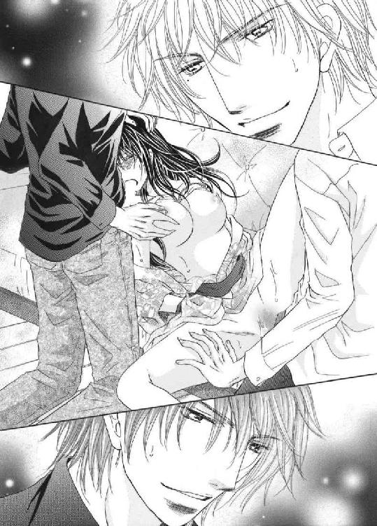

| 華婿選びは禁断のハーレムで2【書下ろし】 (トパーズノベルス) | |
| 苑生アヤ | |
トパーズノベルス
華婿選びは禁断のハーレムでⅡ
著作 苑生アヤ
Illustration 石丸博子
この物語はフィクションであり、実在の人物・団体・事件とは一切関係ありません。
第一章 淫らな賭け
「そんなに怯えないでよ。僕は君を大切にしてきたはずだ。信じられない？」
沙弥子を連れて帰った惣介は、玄関先でサンダルを脱がせると困った顔をして訊いてくる。沙弥子はとっさに首を振り、大丈夫、わかっているから、と告げた。
そう、ちゃんとわかっている。悪いのは自分だ。
最後の最後で本音が出たことも、絶望してみっともなく泣いてしまったことも、沙弥子が他の人を好きになったせいなのだ。勘のいい惣介は確信を持ってしまったことだろう。
彼がこのまますんなりと見逃してくれるとは思えずに、そろそろと距離を置いた。
「こら、どこ行くの。僕の話はまだ終わってないよ」
「わたしは話すことなんて......」
「弦木はともかく安齋家と揉めることになったら面倒だ。家格で言えば君が上でも政界に影響力があるのは向こうだからね。もう引き返せないくらい後になって拗れるより、なるべく早いうちに現状を説明して婚約者選びを続けたほうがいい。結婚前とその後では見逃せることと見逃せないことが変わってくる」
これは家同士の問題でもあるのだと言われると、沙弥子は無理やりにでも気持ちを押し殺しすしかない。一般家庭の子と比べてずっと裕福な生活を送っていられるのは、ご先祖さまたちが最低限の義務を果たしてきたからだ。むしろ結婚相手を選べるだけ、自分は恵まれている。しかも親族たちは、数ある縁談の中から最上級の相手を用意してくれていた。
これ以上のわがまま──貴臣への恋心なんて、口にできるわけがない。
「さあ、おいで」
惣介は沙弥子の手首を掴むと階段へ足を向ける。話し合いが必要なことは認めるが、今二階にある彼の部屋に連れ込まれたら朝まで逃げられなくなりそうで怖かった。
「待って、お兄さま。わたし今日はもう疲れてしまったの。日を改めて......」
「さっきのじゃ足りなかった？ 早く一人になって自分で自分を慰めたいのかな？」
「そっ......そんなことしないわ。もうしない！ 今夜のことはぜんぶ忘れて！」
苦し紛れの言葉から庭での行為を揶揄され、沙弥子は強く否定して首を振った。
確かにまだ身体が火照り、一方的に与えられた快感を思い出すとふらつきそうになる。でも、どうしようもなく恐怖心が先に立ち、後じさりした。
普段の惣介と貴臣は仲のいい兄弟なのだ。ここで変に動揺すれば彼らの関係にヒビを入れかねない。二人が自分を恋愛感情で好いているとは思えないが、沙弥子を巡り惣介はまんまと弟に出し抜かれたことになる。貴臣も沙弥子が兄と結婚するかもしれないと知っていて手を出した以上は、厳しく罰せられて当然だ。事が露見したら、それこそ大問題になるだろう。
嫌な想像をして怯えていると、近くからトントンと壁を叩く音がした。
「二人とも、こんな時間に何をやっているんだ？」
「景吾さん......！」
彼は沙弥子たちと入れ違いで帰宅していたのか、黒いシャツにジーパンというラフな格好で、地下のワインセラーから持ち出した瓶を持っている。その存在がストッパーとなることを期待して、惣介の手を振り払った。
「おかえりなさい。何でもないの、気にしないで」
「景吾くん、君にも知る権利がある。沙弥子を捕まえて」
「そうみたいだな」
景吾は素早く進路を塞ぐと、易々と沙弥子を捕まえる。思わず「嫌っ」と叫んだが、そのまま肩に担ぎ上げられ、ジタバタと脚を動かしても無駄だった。
「リビングでいいか？」
「僕の部屋よりは公平だね」
彼らのやり取りは短く簡潔だ。沙弥子は有無を言わさずに、リビングへと連れて行かれた。
そこはガラスの隙間に格子を組み込んだ窓やイギリス家具を中心に配しながらも、日本の伝統的な唐草や雛菊の文様をあしらった会津木綿のファブリックで統一され、あえて抑えた色使いと素朴な柄が引き立て合ってレトロモダンな雰囲気を醸し出している。オフホワイトの壁には、多くの芸術家を支援していたという曽祖父ご自慢の版画が飾られていた。
三人掛けのソファに降ろされた沙弥子は、いよいよ二人がかりで裁かれるのかと表情を硬くする。惣介がテーブルを挟んで向かい側に座ると、景吾は沙弥子の横に腰かけてきた。
それが彼にまで言い逃れは許さないと言われているかのようで俯いてしまう。
しかし、まだ詳しい事情を知らない景吾はすぐに糾弾したりせずに、ワインの栓を抜くとテーブルの上に用意していたグラスに注ぎ始めた。
濃厚な葡萄の香りが広がる。駅前の飲食店でテイクアウトしてきたのか、テーブルの上にはドライトマトのオイル漬けやしらすのフリッタータ、レンズ豆のサラダなどが折箱に入ったまま並んでいた。景吾はこれから軽食を摂って休むつもりだったのだろう。
「あ、いいね。シャトー・スミス・オー・ラフィットの赤、しかも二〇〇九年ものじゃないか」
「惣介さんも飲むか？ 向こうにいるころ、フランス旅行中にふらっと立ち寄って気に入ったんだ。これはたまたま下で見つけて懐かしくなって持ってきた。さすが鹿目家だな、珍しいワインが山ほどある」
「少しもらうよ。葡萄畑の中にホテルがあって景色が綺麗で食事も美味しいって聞くから、機会があれば一度行ってみたいと思っていたんだ」
惣介が奥のバーカウンターからグラスを持ってくると、景吾は彼の分も注いでいく。
このまま話が終わればいいのにと思っていると、景吾は先ほどからずっと借りてきた猫のようにおとなしい沙弥子の顔を覗き込んできた。
あまり近づかないで欲しくて身を引けば、横から頬を撫でられる。指先が唇に触れて、弾かれるように顔を上げた途端、グラスをあおった彼に口づけられた。
「ん!? んっ！」
不意打ちだ。口腔に甘酸っぱくフルーティーな香りが広がり、ふわっと突き抜ける。思ったよりきつくないが、喉がカッと焼けるように熱くなって、沙弥子は広い胸を押し返した。
「やめて......っ」
すでに彼らの両方から途中まで手を出されていたが、それは当然一対一のときだけだ。立場上、二人からのアプローチを無碍にできないとはいえ、ただでさえ自分がふしだらな女になったようで落ち込むこともあるのに、もう片方にキスシーンを見せつけるなんてとんでもなかった。
なのに、先に仕掛けた景吾どころか惣介までもが冷静そのものだ。驚くどころか、相手に嫉妬している様子もない。沙弥子だけが口もとを押さえて戸惑いを露わにした。
「いきなり何するの？ 人前でするようなことじゃないでしょう」
「美味いワインを開けたのに君だけ避け者にするのは気が引ける。でも勧めたところで素直に飲んでくれないだろう？ ああ、貴臣さんにばれたら怒られるから黙ってろよ」
「そっちも問題だけど、そうじゃなくて......！」
「そういや、あの人はどうした。こんな遅くに、君を惣介さんと二人きりにさせておくなんて珍しい。夜九時にはもう自室へ籠るように言われているのかと思っていた」
「あんなに監視が厳しかったのにね。まあ、貴臣は沙弥子がいつも通り、もう部屋で寝ているものと思って油断したんだろうけど」
「......っ、貴臣は......」
恋人と会っているの──。
沙弥子が表情を曇らせると、惣介が代わりに答えた。
「彼ならメイドとお愉しみの最中だよ。茶室の窓からうっすらと灯りが洩れていたけど、気づかなかった？」
「茶室って池の対岸の？ 逆によく気がついたな」
「それがね、どういうわけか沙弥子は二人の密会を近くで見ちゃったみたいなんだ。すごく動揺していたから、よほどショックだったんだろうね」
惣介が事の経緯を説明すると、景吾はほんとうに驚いた様子でグラスを置いた。
「まさか。貴臣さんが大事なお姫さまを放って？」
なぜか彼は納得のいかない表情だ。でも、確かに沙弥子はこの目で濃厚に絡み合う男女の姿を見ていた。不快感が込み上げてきて、ギュッと浴衣の裾を握りしめる。
「あの二人は内緒で付き合っているんだと思う。恋人なら......、わたしより優先したいときがあって当然だわ」
「は？ 待て待て。どうしてそうなる。メイドって離れ担当の子だろ？ ボブカットの。君と天秤にかけるまでもないじゃないか」
「だって！ 寝つけなくて風に当たろうと思って外を見たら人の姿が見えて、それで貴臣かもって、こっそり追いかけたの。そしたらやっぱり貴臣で、あの子と......キスしてた。もっとすごいことだってしていたのよ!?」
咎めるような言い方をしてしまい、自己嫌悪を感じているとあっさり否定された。
「間が悪いな。どうせ本気じゃないから気にしなくていいのに」
とても信じられずに首を振れば、景吾の手が膝の上に落ちてくる。
「それで泣いていたら、惣介さんに付け入れられたのか？」
「......っ」
景吾はさっと目を逸らす沙弥子の帯を引っ張ると、今度は直に膝から太股を撫でてきた。
「ずるいな。どこまで触らせた？」
「大したことはしてないよ。誰かさんと違って、僕は紳士だから」
「そんなわけあるか。こんな甘ったるい匂いをさせて。フェロモンの塊じゃないか」
景吾は惣介の言い分を信用せずに、沙弥子の長い髪をかき上げて首筋に噛みついてくる。ぞわっと肌が粟立ち、腰を浮かせるとすかさず押さえ込まれて身動きが取れなくなった。
「やっ......」
「惣介さん、いったい何をしたんだ？ やたらと怯えてる。前はここまでじゃなかった」
「誤解だよ。沙弥子があんまりつれないから、少しお仕置きをしただけだ」
「それ、絶対少しじゃないだろ。惣介さんのは冗談なのかそうじゃないのかわかりにくい」
景吾は沙弥子の脇の下に手を入れて身体の向きを変えさせる。正面から彼に跨るような格好になり、沙弥子はギュッと眉根を寄せた。
彼らは、ただ優しいばかりの男ではないのだ。
「ひどいこと、しないで......お願い」
二人がかりで触られるなんて、そんなことは考えたこともない。だから今からどういう扱いを受けるのか想像できずに縮こまる。景吾はその様子に焦げ茶色の目を猫のように細めた。
「例えば？ どういうことがひどいことなんだ？ 惣介さんに何された。言ってみろ」
「......ぁ......、う......」
「ちょっと舐めて弄ったくらいかな。この子に一番悪さをしたのは、僕じゃなくて......」
「貴臣は関係ないわ！」
言い淀んでいると惣介に口を挟まれ、沙弥子は慌てて後ろを振り返る。けれど、その無防備な首筋をベロリと景吾に一舐めされて、ひっと息を呑んだ。
「なるほど。あの人はまた横から手を出して行ったわけか」
景吾がおもしろくなさそうに言うのを聞き、沙弥子は青ざめながら否定した。
「貴臣はただの世話係よ。いつも側にいるから誤解されやすいけど、本当にそれ以上でもそれ以下でもないの。第一、彼はわたしみたいな子供に興味を持っていないわ」
「そうかな？ 少し前まで君は確かに処女だったのに、さっきは僕の指も守り刀もすっぽり中に入っちゃったよ。相手が僕や景吾くんじゃないとなると誰に初めてをあげたの？ 沙弥子が触れることを許す男なんて、僕らを除けば貴臣くらいなんだけどね」
違う、違うの、誤解よ、と繰り返すしかない沙弥子は、景吾が帯を解いても拒めない。
浴衣をくつろげられ、水色の下着と素肌が見えると、惣介のつけた赤い痕も人目に晒された。
「それは僕がやったんだけど、沙弥子の身体っていやらしくて可愛いよね」
席を立った惣介はすぐ後ろまでやってきて、ゆったりとたわんだ浴衣に手を入れてブラのホックを外してしまう。とっさに胸もとを押さえたが、あまり意味がなかった。
「隠しちゃ駄目だよ」
惣介は背後から沙弥子の両手を掴むと、シュルリと解いたネクタイで戒め、自由を奪う。不安になっていると、阿吽の呼吸で景吾が正面から下着を押し上げ、白い乳房に吸いついてきた。
「あっ、んむ、うぅっ」
思わず声を上げたが、今度はその口を塞がれる。同時に惣介の指がショーツにかかり、ろくに抵抗できないまま引きずり下ろされて、淡い恥毛と可憐な割れ目が露わになった。
やがて深く口づけながらソファに押し倒されてしまい、沙弥子はもぞもぞと身をよじる。しかし、両手首を腰の後ろで縛られているせいで暴れると痛み、膝の少し上で止まったショーツが邪魔で脚を動かすこともできない。おまけに情熱的なキスとワインの苦みで頭がくらくらする。唇が離れても、はぁはぁと荒い息を零すだけで「やめて」と言えなかった。
「景吾くん、悪いんだけどここに来るまでに散々煽られて限界なんだ。次は譲るから、今夜は先にさせてもらえると助かる」
「構わないが、オレの前で本番はなしだ」
「もちろん。約束を忘れたわけじゃないよ」
二人はぐったりとする沙弥子を見下ろして勝手に話を進めてしまう。
し込まれたたりとする沙弥子を見下ろして、わかりにくい。可哀相に景吾が上から退いたかと思うと惣介が伸しかかってきて、いつもの優しげな笑みを浮かべながら、すでに柔らかく蕩けた膣内に指を押し込まれた。
「ひ、ぃ......っ」
傍らの景吾に見せつけるかのように蜜口を広げられ、鮮やかなピンク色の粘膜が外気に触れる。トロリと蜜が垂れてくると、惣介は笑みを深めて色気の滲む声で景吾に誘いをかけた。
「君も中の具合を確かめてみなよ。狭いから傷つけないようにね」
「や、やだっ、さわっあぁっ......ん！」
沙弥子は驚いて首を振ったが、景吾が横から手を伸ばしてくるほうが早かった。
骨張った指が惣介の指に沿って入ってくる。苦しさを覚えたのは一瞬だ。二人ともすぐに膣内を好き勝手に弄り始め、いろんな場所を擦られて甲高い声が出てしまう。肉穴の奥から広がる感覚に息が乱れ、組み敷かれた身体はビクビクと跳ねた。
「確かにこれは処女の反応じゃないな。この間まで指二本はきつそうで、一本でもこんな奥まで入らなかったのに。まったく......いつの間に食われたんだ」
「たぶん、先月貴臣と二人で出かけたときだろうね。ちゃんとその日のうちに帰宅したっていうから安心していたんだけど、あれからあまり話さなくなっただろう？ 貴臣の仕事が忙しくなって、必要最低限しか顔を合わせなくなったのは事実だとしても、僕たちに対する沙弥子自身のガードも急に堅くなったから。女性としての自覚が出てきたというより、貴臣以外の男にいやらしいことされたくなかったんじゃないかな。沙弥子の中は、僕たちの指を美味しそうに咥え込んでいるのにひどいよね。乳首だってこんなに尖って苛めて欲しそうなのに」
惣介は景吾を促して沙弥子の中から指を引き抜くと、ショーツを脱がせきって大きく脚を開かせる。そしてスラックスをくつろげ彼自身を取り出して、ヒクヒクと収縮する小さな穴に亀頭を押しつけてきた。
──にゅぐッ、ぐちゅり。
「いやあぁ......っ！」
「最初は先っぽで擦るだけだ。沙弥子が嫌なら入れないよ」
惣介の声も肌も熱いが、我を失っている素振りはない。その証拠に、沙弥子の理性を奪うような動きで、蜜で濡れそぼった肉びらをぬちゃぬちゃと弄り始めた。
「ひっ、はぁ......っ、ぁ、あん、んっ、ふぁっ......！」
我慢できずに甘い声が溢れる。両手を腰の後ろで縛られているため、今の沙弥子は自ら秘部を晒しているようなものだ。そんなつもりはないのに惣介に協力的な恰好で擦られる。避妊具をつけない肉棒の生々しい感触が心を乱して、呼吸がどんどん艶めかしさを帯びていった。
「ん、押し当てただけで吸い付いてくるね。貴臣とどっちがいい？」
「や......っ、いやぁ......」
「彼はちゃんと君をイかせてくれた？」
惣介が怪しく囁くせいで初体験の記憶が蘇り、あぁんっ、と殊更甘ったるく喘いでしまう。
「ふふっ、ホントに可愛いなぁ。それに沙弥子のここ、ぷにぷにしていて気持ちいいよ。ね、入れたら駄目？ どうしても嫌？ もっと気持ちよくしてあげるのに」
惣介は薄い恥毛を撫でると、クリトリスを探り当てながら、未熟な肉穴にグリグリと亀頭を押しつけてくる。淫らに咲いた花びらは、怒張を根元まで押し込まれることを望んで愛液を滴らせ、ピクピクと蠢いた。
すると、しつこく、ぐにゅ、ずちゅっ、じゅぷっと入り口の縁だけを擦って快感を与えられ、むず痒い悦びで全身がわななく。触れ合った場所が熱を持ち、徐々に全身が蕩けていくような心地がして、二人の間でこね回された体液も白く濁ってべっとりと糸を引いた。
「は......っ、沙弥子、まだ欲しくならない？ 生でされるの、本当は好きだろう。君みたいな子を抱くのにゴムなんてする男がいるわけないしね。まったく、貴臣が羨ましいよっ」
「いっ、や、ダメ、だめ......っ、入れないで、入れちゃいや、なかはっ、いやぁっ」
「どうしても？ 奥まで嵌めたら、最高に気持ちいいのに」
「ひっ......ん、く。まだ、ダメ......初夜まで......待って」
──わたしに何をしてもいいのは貴臣だけ。
そう言えたらいいのに。
沙弥子はゾクゾクと背筋を震わせて誘惑を振り切る。
「初夜ってことは、僕を選んでくれるのかな？」
しかし、この場で決断を迫られ動揺した。結論を出すのはまだ先だから、二人のうちのどちらかと身体を繋げることもそれまで待って欲しいと伝えたつもりだったのだ。
「ちが、ま......だ、決められない、から......」
沙弥子が泣きそうな顔をすると、惣介は「わかってるよ」なんて言うくせに、腰をズンッと突き上げて、同時に濡れた指先で下肢の肉芽を押し潰す。
「ひぃんっ！ あ、あぁっ、はあぁ！」
「一つだけ答えてくれたらもっと優しくしてあげる。沙弥子、君を抱いたのは貴臣だろう？」
また少し惣介の動きが速くなる。ぐちゅっ、ぐちゅっ、という粘着音が、ぐっちぐっちと繋がって響き始めると、沙弥子は早々に耐え切れなくなり、か細く喘ぎながら嘘をついた。
「しらな、い......ひとっ......。お兄さまたちに、子供だって、思わっ......たく、なくて。だからっ、あ、んっ、ン......けいけん、したかったの......っ」
考え足らずでごめんなさいと謝れば、惣介はわずかに眉を寄せる。
彼も景吾もそんな嘘に騙されてくれるとは思っていないが、どうしても貴臣を巻き込みたくなくて、沙弥子はわざと甘えた声で行為の続きをねだった。
「さ、最後まで......するのは、怖いからイヤ。でも、乱暴にしないなら、ぁ、は......何してもいいから、いっぱい......触って。わたしに、もっとエッチなこと、おしえて......？」
恥ずかしさをこらえ、自ら腰をくねらせる。ぬめりを帯びた性器が擦れて胸の先まで震えると、その様子に惣介ばかりか景吾も喉をならして熱いまなざしを向けてきた。
「仕方ないな......」
「言質を取ったから、後で泣くなよ」
「んあッ、ひっ」
惣介の肉竿が肉びらをこれでもかと押し分ける。しかし、彼は沙弥子の意思を汲んで決して繋がろうとはしない。下から上へと浅い溝に沿って往復するだけだ。けれどたったそれだけの動きに翻弄されて汗が噴き出し、下腹には熱が集まってきた。
もう身体のどこを愛撫されても声が止まらなくなって、景吾が唇にキスしてこなければどんなはしたない言葉を口走っていたかもわからない。
「んっ、ん、ンうぅ......！」
いきなり舌を突っ込まれて呻くと、芯を持った乳首や下肢の尖りを一緒に摘まれ、膣内がキュウッときつくなる。口腔を這い回る舌が縮こまった舌を撫でるだけで、電流のような快感が駆け抜けた。
「っ......ぁ、あああぁッ」
ほんの一瞬のことだ。爪先まで力がこもり目の前が真っ白にスパークして、沙弥子は我慢できずに達してしまう。それでも二人は、示し合わせたかのように肌を暴いていく。
「簡単にイッちゃって。僕のせいなら嬉しいんだけどね」
ソファの上で身震いする沙弥子の髪を梳きながら、惣介が柔らかく微笑んだ。
「沙弥子、ちょっと賭けをしようか」
「ふ、ぇ......？」
「今から君が僕たちを気持ちよくして。一度出すまでに貴臣が来たら今夜はもう何もしない......というか、できない。でも彼が間に合わなかったら、さすがに我慢の限界かな。景吾くんもいろいろ触りたいだろうし、場所を変えて朝まで好きにさせてもらうよ。そしたら、沙弥子も最後は僕たちに夢中になっちゃうかもね」
「それ、賭けになるのか？ 貴臣さんは取り込み中なんだろう？」
「僕としてはどちらでも構わないかな。どう転んでもそこそこ良い思いができる。将来的に奥さんを共有するつもりはないけど、今のところ沙弥子は誰のものでもないから、結婚前の貞操については問題にしないよ」
沙弥子には惣介が何を考えているのか、よくわからない。けれど、ソファの脚が軋むほど激しく揺さぶられて、あっという間に余裕を失う。身体の下敷きになって両手は痺れていたが、自然と気持ちのいい場所に肉棒が当たるよう腰を持ち上げてしまった。
「えっろ......。澄ました顔してセックス好きだろ、沙弥子。惣介さんの、今にも咥え込みそうだぞ？ 小さな穴がぱくぱく開いて誘ってる。もうそんな状態なのに突っ込むのは駄目だなんて、鬼だな。普通は許してもらえない。とっくにヤられてる」
「ひゃんっ、ん、ぁ、ちが、......ちが、ぅ、わたし、あぁ......っ」
ツツっと肉穴の縁をなぞられ、また快感が弾ける。庭園で一度、このリビングでさらに一度絶頂に追い上げられているせいか、やたらと感じてしまって涙が滲んできた。
「いっ、やぁ、硬いっ、ヌルヌルって、入ちゃ......うぅ......っ」
「クソ、見せつけやがって」
だめ、だめ、と言いながら、沙弥子はそっと腰を突き出す。惣介はそんな無意識の媚態を見下ろして、沙弥子の矛盾を咎めるでもなく、やんわりと唇を撫でた。
「景吾くん、ほら。可愛い口が空いてる。見ているだけじゃつまらないだろう？ 沙弥子にしゃぶってもらえばいい。きっとこっちはまだバージンだ。君もそのくらいの旨味がないとね」
「......何て言うか、悪い男の見本ってこんな感じなんだろうな」
景吾は苦笑いするが、満更でもなさそうだ。
「ひぁっ、あ......ぁ、たかおみ......っ、やだぁ、たかおみぃ......っ！」
二人との距離が近づき、思わず貴臣の名前を呼ぶと、惣介の雰囲気が変わる。
「さすがにイクときまで弟の名前は聞きたくないなぁ。嘘をつくなら最後まで頑張って欲しいんだけど、沙弥子に悪女の素質はないよね。逆に僕たちが悪いことをしているみたいだ。悔しいからよけいに意地悪したくなっちゃうよ」
惣介は沙弥子の腰を抱え直して、ぐりッ、ぐりッ、と執拗に肉棒を押しつけてきた。
そのリズムに合わせて揺れる胸には景吾が舌を這わせ始め、ぷっくりと膨れた乳首を舐めたり吸ったり噛んだりする。一人ずつ相手をしたときでさえ身も蓋もなく喘いだのに、二対一では分が悪い。それが世間の常識から外れていることも沙弥子の心を追いつめた。
「大人気ないって思うけど、やっぱ惣介さんにばっかり夢中になられるとおもしろくない」
「ぇ、ン、んぐっ!? ん、んうぅっ！」
ギュッと目を瞑って耐えていると顎を掴まれ、拒む間もなく熱い剛直を口腔へねじ込まれる。景吾のそれは、凍りついたように動かない舌の上を滑り、いきなり深く喉を犯した。
「苦しいか？ もっと涎を溢れさせて滑りをよくするんだ」
景吾は小さな口に収まりきらない肉棒を見つめ、膨らんだ頬を撫でる。沙弥子は生理的な涙を零してえづいたが、それでも許してもらえずに、苦しさから逃れるためにおずおずと従う。意識して唾液を絡め、音を立てて啜ると、青臭く苦い味が口の中に広がった。
「う......っ、ふぁ、は......っ」
不快感を堪えて唇で刺激すれば、上手くできたご褒美なのか、乳首と肉芽をそれぞれの指で弄られて膣内がうずうずと蠢く。その感覚を恐れて誤魔化すつもりで太いものにしゃぶりつき、言われるままぎこちない動きで舌を這わせた。

ソファの横に膝立ちになった景吾が気持ちよさそうに腰を揺らす。ん、んっ、と鼻から抜けるような声が洩れて、口もとは飲み零した唾液でベトベトになっていた。
上の口も下の口も彼らの良いように扱われ、頭の芯がぼうっとする。ソファの背に引っかけられた左脚も、だらりと垂れた右脚も爪先まで痙攣して、三度目の絶頂が近いのがわかった。
もう嫌だと思うのに逃れることができず、全身が性感帯にでもなったかのように反応してしまう。胸の頂きもクリトリスも、ヒクヒクと疼く穴もじぃんと痺れて我慢できない。
貴臣が好きなのに、彼だけでいいと思うのに──沙弥子の若い身体は正直だ。自分が特別淫乱だと思いたくないが、これ以上感じたくなくて懇願する。
「もっ......イッ、へ......ぇ！」
景吾のものをしゃぶり、掠れた声を振り絞ると、二人が低く笑う声が聞こえてきた。
「っ......いいよ、沙弥子、そろそろ出そうだ」
「オレも......、十分愉しませてもらった。最後......君の口の中でイクぞ......！」
「ん、ぐぅ、う、ぁ、ぐ......ッ」
惣介に愛蜜まみれの肉溝を擦り上げられ、くぐもった悲鳴を上げる。すかさず景吾が後頭部を押さえつけ、無理やり喉奥まで肉棒を含まされて辛かったが、沙弥子はソファから背中を浮き上がらせて達していた。
「んんんぅ──っ......！」
どこをどう愛撫されてイッたのかもわからない。ほんとうに何も考えられなくなり、全身が震える。程なくして惣介の動きが一瞬止まったかと思うと、執拗に擦られて赤らんだ肉穴をめがけ精液を吐き出された。
生温かい体液がヌルリと垂れて窪みに溜まり、少しでも力を抜くと中に入ってきてしまいそうだ。怖くなってもがくと、今度は舌の上で景吾の欲望が弾けた。
「──飲んで」
「......っ!? うぶっ......ん、んぐ......ぅ、う......！」
濃厚な精液が口腔に溢れ、喉奥へ流れ込んでくる。それを嫌だと思う間もなく、すべて嚥下させられていた。
しばらくして名残惜しそうに腰を揺らした二人が離れても、沙弥子はソファに身を投げ出したまま起き上がることができない。汚れた口もとを拭うことも、脚を擦り合わせることも忘れて、荒い息を吐いては白濁を滴らせていた。
「......大丈夫？」
「少しやり過ぎたか？」
「二人で一度にっていうのは初めてだから、ちょっと刺激が強かったかもしれないね。でも気持ちよかっただろう？ たくさんエッチなことしてっておねだりしたのは沙弥子だし、貴臣も来ないから、ゆっくりできるように場所を変えようか」
「あんまり嬉しそうに言うと、さすがに嫌われるんじゃないか？」
「僕としてはようやく進展したかなって感じなんだけど。今までよくお預けを食らったままでいたよね。我ながら泣けてくる」
「そこは否定できないな」
景吾は沙弥子の唇にこびりついた精液を口に押し込み、クチュクチュと舌を弄ぶ。惣介は惣介で濡れそぼった穴に指を沈めると、まだヒクついている膣内の具合を探るように指を動かす。沙弥子の中は焼けるように熱く、とろとろに蕩けていて、これなら初めてのときのように痛むこともないと自分でもわかるほどだ。
しかし、惣介の指が這うたびに彼の体液が流れ込んでくると呆けてはいられなかった。
「やッ......いやっ、いやぁっ、にんし......しちゃ、あぅ......やめ、てっ！」
「このくらいじゃしないよ。奥まで届いてないしね」
膣内を擦りながら剥き出しの肉芽を揉まれて抵抗が緩むと、恐怖より快感が勝り始める。だるいはずの腰も左右に揺れて甘い声が零れ、嫌なのに物足りなさを感じてしまった。
「......っ、く......ぅン」
「沙弥子、切ない？ 君の中はもっとちょうだいって言ってるけど、どうしようか。君が許してくれるなら、今度は奥まで埋めて擦って最後はここに注いであげるのにな」
ズルリと指を引き抜き、優しく下腹を撫でられる。ゾクゾクして、思わず頷きそうになった。──その時。廊下から激しい足音がしたかと思うと、バンッと勢いよく扉が開かれる。
「沙弥子！」
頭がついていかずに、頼りない視線だけ向ける沙弥子の姿はどう映ったのか、ひどく焦り、怒りを滲ませた貴臣がズカズカと近づいてきて、沙弥子を組み敷く惣介の肩を掴んだ。
「どういうことだ！」
「どうって、合意の上での行為だよ。そういう約束で僕たちはここにいる」
「お姫さまの前で怒鳴るのは止めたほうがいいんじゃないか？」
横から仲裁に入ったのは、景吾だ。彼は貴臣の腕を軽く叩くと、沙弥子へ視線をやった。
「それに、沙弥子の裸、いつまでもオレたちに見せておいてもいいのか？」
「......っ」
「悪いね。でも、父さんも他の連中も本気だ。鹿目家に相応しい婿と後継ぎを得るためなら、沙弥子次第で婚前交渉も認めると言っている。ただ、僕らはルール違反の代償が大きいことを嫌というほど知っているから、沙弥子が許さないことはしないよ」
「ふざけるなっ、これのどこが合意だ！ こんな......、犯されたようにしか見えない。二人がかりで迫っておいて、冷静に将来の相手なんて選べるわけがないだろうっ！」
貴臣は惣介の下から沙弥子を引きずり出すと、床に落ちていた浴衣ですっぽりと包み込む。沙弥子はジャケットをどこかに置いてきた貴臣をぼんやりと見つめて表情を曇らせた。
上手く隠しているだけで、貴臣のほうこそ恋人との逢瀬を愉しんでいたのだ。沙弥子がどうなろうと、ただの世話係に過ぎない彼に自分たちを咎める権利はない。そんなこともわからないはずはないのに、ギュッと抱きすくめられて口を挟めなかった。
「来月、親族会議で結論を出すまで沙弥子に触れるな。ある程度は見逃してきたが、やり過ぎだ。このままじゃ、ろくに何も考えられずに当日を迎える羽目になる。こいつはしばらく俺の側に置いて、落ち着いてから選ばせる」
「自分が手元に置いておきたいだけだろう」
「監視役としての権限を超えてるんじゃないか」
「まぁ、でも、何をされても口を割らなかった沙弥子に免じて追及しないでおいてあげるよ。限りなく黒に近いとはいえ、白は白だ。君がよけいな口を挟んだり、手を出したりしているっていう明確な証拠はないわけだし。──沙弥子、賭けは君の勝ちだ」
惣介は身支度を整えながらそう言ったが、不安な気持ちは消えない。二人が見逃してくれるのは、貴臣ではどう足掻いても沙弥子の夫になれないとわかっているからだ。ここで沙弥子の身柄を譲っても、彼らにとって何の痛手にもならない。
「行くぞ」
「......ぁっ......」
貴臣はもう一秒たりともこの場にいたくないのか、沙弥子を抱えてリビングを後にする。そのまま風呂へ連れ込まれ、沙弥子は新たな難題を前にぶるりと震えた。
◆◆◆
貴臣は、汚れを洗うという名目で柔らかな身体に触れていく。沙弥子の吐息はとっくに啜り泣きに変わっていたが、途中で止めてやらなかった。
両手首を縛る紺色のネクタイはそのままに花の香りの石鹸をお湯で流すと、今度は両脚を開かせる。桃色の肉の谷間はたくさん擦られて赤らみ、白濁した体液が残っていた。
「あ......あ、ンッ、あ、ひっ......やだ、やっ......」
何もかもが気に入らなくて小さな穴に強引に指を沈めていく。その途端、中からドロリと溢れてきたのは精液だ。お湯で薄まっていたが、惣介と寝たのかと疑うには十分だった。
一ヶ月前、辛抱できずに触れた身体はもっと硬く蕾のようだったのに、今はもうすっかり花開いている。自分が触れなかった間に触れた男がいるのだ。これ以上、他人の痕跡を沙弥子に残しておきたくなくて、無心で指を動かし、シャワーを当てて汚れを落とした。
膣内を探る指とお湯の両方に沙弥子は呻いたが、両手を縛られているせいで抵抗できずにいる。貴臣は執拗に中を洗うと、その場に彼女を押し倒した。
「ま、いっ......」
浴室の床は石のタイルだ。滑らかに加工されていたが、綺麗な背中が痣になるかもしれない。普段の貴臣ならば細心の注意を払うことも、今は後回しにする。首のネクタイを外してシャツのボタンを緩めると、涙ぐんでいる沙弥子に噛みつくようなキスをした。
「や、たかお......み、ぃ......！」
独特の精液の匂いが不快だったが唇を離す気にはならない。それ以上に、頭の中は怒りでいっぱいだった。
「ん、や......ぁ」
「その甘ったるい声、あいつらにも聞かせたんだろう。俺より良くしてもらえたのか？ 初めて飲む精液の味は美味かったか？」
貴臣は沙弥子の中に指を突き立てる。二人がかりで責められていたせいか、快感を得ている割に苦しそうだ。途中で意識を飛ばされては堪らないと、わざと乱暴に膣内を突き上げた。
沙弥子の中はヌルヌルで指の数を増やしても痛がらない。今夜の出来事にもっと早く気づくことができていたら......と歯噛みしたが後の祭りだ。
（あいつらが牽制し合うどころか、結託して沙弥子に手を出すとは思っていなかった。俺の迂闊さが招いたことだ）
茶室から離れへ戻る途中、池にかかった橋を渡ってすぐのところに短刀が落ちていた。一目でそれが何なのかわかったのは、沙弥子がその守り刀を受け取った場に貴臣もいたからだ。
鹿目家のしきたりで、本家と分家の子供が数え年で十四歳になると、立春の日に親戚縁者を集めて祝い事をする。武家社会において行われていた立志式に由来するものだが、そこで沙弥子は亡き母親の嫁入り道具だったという美しい短刀を手渡され、周りの大人たちはそれが今度は彼女の持ち物になると言っていた。
沙弥子にとっては、とても大切な刀のはずだ。なのに道端に落ちていたばかりか、柄の部分には体液がこびりついていた。嫌な予感がして離れに駆け戻ると、リビングの扉がわずかに開いて廊下へ灯りが洩れており、あの場面に遭遇したというわけだ。
沙弥子は守り刀で犯されたのだろう。犯人は惣介で間違いない。だが、そのまま庭でなし崩しに抱かれたのかどうかはわからなかった。
あの兄がそこまでするはずがないと思う一方で、沙弥子は家のために大概のことを許してしまう。好きでもない男と結婚して子供を産むと頑なに言い張るくらいだ。惣介や景吾が強く迫ればあるいは流されてしまうかもしれない。
貴臣は沙弥子の中に残っていたものを思い出し、低く舌打ちする。そしてほっそりとした脚を抱え上げると、彼女の意思を無視して一気に最奥まで貫いた。
「やっ、あぁっ......ぁ......！」
これだけ慣らしてもまだ狭い膣内は熱くぬかるみ、肉棒を包み込んでキュウキュウと締めつけてくる。しかし沙弥子は気持ちよさそうに喘ぐどころか、引き攣った悲鳴を上げた。
いたい、と舌っ足らずに訴えて、赤らんだ目から涙を零す。貴臣はいくらか冷静さを取り戻すと、沙弥子を見下ろしてゆっくりと腰を揺らした。
「うっ......あ、や、やだっ......うごくっ......の......！」
初めてのときよりはずっと楽なようだが、いきなり深いところを穿たれるのは怖いらしい。挿入したらした分だけ締めつけてくるくせに、そういう初心な反応に煽られる。
貴臣は華奢な肩を撫でて沙弥子を膝の上に座らせると、ビクンっと跳ねる身体を押さえつけて、下から突き上げ始めた。
「や、ぁ、やっ......ひ、ぃ......っ」
一突きごとに愛液が滴り、肉棒の根元で泡立って白い輪を作る。
やがて少しずつ奥を突かれることに慣れてくると、彼女の中はいっそう甘えてまとわりつき、ぬちゅぬちゅっと淫らな音が広い浴室に響いた。
貴臣は沙弥子の首や胸もとに残る赤い痕が気に入らなくて、上から噛んで歯形をつけていく。それから愛らしい乳首や下肢の肉芽を同時に指で愛撫し、彼女の頭の中を自分に抱かれる快感で埋め尽くそうとした。
「あっ、ぁっ......あ！」
さっきからずっと沙弥子はいやらしい声で喘ぎ続けている。ろくに話もせず、また犯すように抱いて不安にさせていることはわかっていたが、貴臣の内心だって大差ない。
なにしろ惣介や景吾と違い、自分は圧倒的に不利な──いや、比べる資格すら持っていないのだ。あの二人を責めるどころか、いつ沙弥子から遠ざけられてもおかしくない立場だった。
「......兄貴と景吾に、どこまでやらせた？」
強引に迫ったのは彼らのほうだろうが、沙弥子を咎めるような言い方をしてしまう。
彼女が自分を庇ったというのも気に入らない。そんなことで付け入られたのかと思うと、怒りすら込み上げてきた。
「俺と違ってあいつらは血統が良い。何だかんだで、口説かれて嬉しかったんだろう？」
「そ、んな......っ、違うわ......！」
どうして...。貴臣としかしてない、信じて、と沙弥子は悲しげに口にする。貴臣は必死に紡がれた言葉に安堵しながら、彼女の細い腰を掴んで子宮口を突き上げた。
「いやぁっ、あ、いっ......あぁッ」
「ここで出させたんじゃないのか？ 俺が掻き出す前に受精していたらどうするつもりだ？」
「や、じゅせ......っ、ちが、いやっ......あ、ぁっ」
沙弥子は怯えた様子でイヤイヤと泣きじゃくる。途切れ途切れに洩れてくる言葉を繋ぎ合わせると、どうやら惣介に指で押し込まれただけらしい。
お兄さまの子供なんていらない、景吾さんでも嫌だと、可愛らしい駄々をこねる。貴臣はそんな彼女を抱きしめて、熱杭の先端を何度も何度も膣奥の肉の輪に押しつけた。
「ひ！ や、ま......まってぇっ、おなかの奥、ばっか......り、つかれる......とっ、あたま......しびれっ......しびれっ、て......、あ、ぁ、あ」
沙弥子は嫌がる素振りを見せたが、知らないふりをして強引に突き上げる。粘っこい水音と嬌声が重なって、沙弥子はついに身体から陥落した。
「ひんっ、んっ、や......らぁ、だ......めっ、だめ、たかおみ......きもちっ、おなか......ぐちゃぐちゃで、きもちいい......っ」
「......っ、ああ、俺もだ。......沙弥子、中に出すぞ......っ」
「やっ、やだ、やっ......なかはっ、しちゃ......ぁ、め、ぇ......！」
沙弥子はもう嫌がっているようには見えない。貴臣は口だけの弱々しい拒絶には耳を貸さず、そのまま深突きして絶頂感に身を任せる。
びゅるっ！ びゅくっ、ぐちゅっ。
「あ、ぁっ、いやっ......い......や、あぁ......っ！」
ホースから噴き出す水のように勢いのある体液が、彼女の膣内をべっとりと汚していく。
射精の瞬間、沙弥子は上気した裸身を強ばらせたが、熱い精液を注ぎ込まれるたびに美しい顔をとろんと崩して、最後は声にならない声を上げた。
貴臣も深い快感に息を吐くと、感情を抑え切れずに細い身体を抱きしめる。すべて吐精した後も繋がったまま腰を揺らして、入り口から奥の奥までビクビクと痙攣している沙弥子の中をたっぷりと味わった。
「い......ぁっ、あ......！」
「何だ、またイッたのか。孕まされながら連続でイクなんて淫乱だな」
わざと露骨な言葉でからかうと、沙弥子の中がいっそうきつく締まる。しかし、言い返す気力はないのか、彼女は倒れ込むように貴臣の肩にもたれかかって額を擦りつけてきた。
あれほど怖がって拒んでいたことをしたのに、そういう甘えた態度を取るから期待してしまうのだ。貴臣は苦笑いを浮かべると、濡れそぼった黒髪を優しく撫でつけた。
◆◆◆
場所を変え、相手を変えて身体を自由にされ、沙弥子はぐったりとしている。貴臣が二階の自室へ運ぶころにはもう、放っておけばそのまま眠ってしまいそうな有様だった。
「大丈夫か？」
一声かけて彼女を窓際のベッドに下ろすと、カーテンを引いてナイトテーブルのランプをつける。貴臣にこれで終わりにするつもりはない。沙弥子を組み敷いてもう一度深く繋がると、緩慢に腰を揺らし、濡れてまとわりつくシャツを脱ぎ捨てた。
「い、ぁ、あ......ぁっ」
ギシギシとスプリングが軋み、その分だけ快感が起きる。二人とも髪や身体を適当に拭いただけなのでベッドは湿っていたが、こうして肌を重ねると寒さなんて微塵も感じない。むしろ沙弥子の肌は熱く、恥ずかしそうに目を逸らす姿にもそそられる。貴臣はヒクヒクと波打つ粘膜に亀頭を擦りつけながら、真っ赤になった彼女の顔を掴んで上向かせた。
「やっ、みな、いっ......見ないで......っ」
「おまえはそういうところがどうしようもなく可愛い」
本心から囁くと、沙弥子は驚いた様子で目を見開く。貴臣は当たり前のように片足を持ち上げ、たっぷりと精液を注いだ膣を犯して、いやらしい肉粒を転がした。
「ふっ、あ......あっ、ダメっ......そこ、よわ......ぃの！」
沙弥子は形のいい眉を色っぽく寄せると、歓喜を隠し切れない声で喘いだ。
彼女の中はもう奥のほうまでぬかるみきっているのに、それでもまだ狭い。その感触が心地よくて貴臣も息を乱して動き始める。
浴室でしたように子宮口をグリッとこね回すと、膣内が一際強く波打つ。細腰を掴んで揺さぶり荒々しい抜き差しを繰り返すと、沙弥子は感じ過ぎることをひどく嫌がった。
「あ、はっ......いや、いやあぁっ！ あ、あぁっ......！」
「......っと、いい加減、俺に縋りつけないのは不便か......」
ベッドで浮き沈みする身体の下から覗くネクタイが、手首に痣を作っている。貴臣はスラックスのポケットから庭で拾った守り刀を取り出し、沙弥子の目の前で刀身を抜いて見せた。
少し横向かせてネクタイの結び目を切ってやったが、すぐには手を動かせないようだ。彼女は両腕を投げ出したまま、ドクドクする、熱い......と頼りなく呟く。貴臣はそこを一撫でしてから剥き出しの首筋に鼻先を擦りつけて、ぷるんと揺れる乳房を掴んだ。
「貴臣......ダメっ、いろんなこと、しないっ......で。あ、あっ、動くの、やだぁ......おなか、いっぱい......も、もう、まっしろっ、なの......」
「でも、こうやってあちこち触られて、最後は中に出されるほうが気持ちいいだろう？ 沙弥子は俺の精子ゴクゴク飲みながらイクのが好きだよな？」
「んっ、ん、ぁ、あッ......き、す......き、すき......ああぁっ」
小ぶりのお尻を揉みしだき、下腹部を密着させて突き上げる。すでに理性が危うかった沙弥子はまんまと流され、気持ちいい、イク、イッちゃう、と白い喉を晒して訴えてきた。
年甲斐もなく夢中になって彼女を抱く。子宮口をグッと圧迫すると、ヌルヌルの膣内が肉棒を巻き込むように収縮して吐精を促し始めた。
「......っ、は......っ」
「ぅあっ!? い、やっ......で、出てる......ぅ、ンっ......！」
貴臣は今度もまた、耐えることなく沙弥子の中に慾液をぶちまける。彼女は黒目がちの瞳を潤ませ、半開きの唇から涎を垂らして身悶えた。
そのうち疲れ果てて今にも眠ってしまいそうな沙弥子の身体を抱え直すと、後ろから支えて肩を揺する。彼女は程なくして覚醒したが、わざと奥に吐き出したものが少しずつ溢れてくると、膣内がキュンッとすくんだ。
「あ、あぁ......っ」
とっさに腰をぶつければ、沙弥子はゾクリと震えてベッドに倒れ込む。貴臣は一旦律動するのを止めて、寝転がった自分の上に沙弥子を跨らせると、そこから身体を仰向けにさせた。
騎乗位の一種、撞木反りという体位だ。ちょうどＧスポットが擦れるのか、彼女は驚いて逃げようとしたが許さなかった。
「きゃ......ぁっ、なっ......なにこ......れ？ こんなっ......なんで、なっ......ぁ、あぅ、へんな、とこぉ、あたって、きもち......っ、やだ、はなして......ぇ......っ」
「気に入ったのか？」
「ちがっ......、ふ......ぁ、ンン......っ」
身体を反らせば反らすほど擦れ方が強くなり、快感も大きくなる。突き上げるたびに少しずつ彼女の脚が開いていき、グチュグチュと二人の体液が混ざり合う。貴臣は沙弥子が起き上がれないよう胸の下へ右腕を回すと、逆の手で彼女の左手を捕まえた。
貴臣の上に後ろ向きで寝転がって背中を反らせる恰好になった沙弥子は感じすぎて辛いのか、ビクビクと震えている。男と違って女は何度でもイけるというが、体力の限界が近そうだ。それでもツンッと尖った乳首を撫でて無防備なクリトリスを弄ると、彼女はまたすぐに達してしまった。
「あ、ぁ、あ......ッ」
すでに窓の外はうっすらと白み始めている。あと一時間もすれば、当直の使用人が朝食の準備をするために起きてくるはずだ。だが、沙弥子はもう学校へ行けるような状態ではない。
貴臣は、今日一日彼女を休ませるつもりで、ギリギリまでベッドの上で白い身体を貪ることにした。
手始めに沙弥子のお尻が浮くくらいズンッ、ズンッと腰を突き出す。脇の下から腕を入れて肩を押さえつけ、静かに手を滑らせて胸を揉むと中がうねって絡みついてきた。
「ぃいっ......も、もぅっ......もうダメぇ......ひっ！ ンッ！」
やめて、いや、できないと何度も懇願されたが、沙弥子は太い肉棒を絶妙に締めつけてくる。すっかり自分専用になった肉穴を、貴臣はぬぷっぬぷっとねちっこく突き上げて、彼女の好きな場所を刺激してやった。
「おまえは特にここが好きだよな？」
「ひゃんっ、あっ......はぁ、あ、あ、ぁ......っ」
繰り返し子宮口の少し手前を擦り、何食わぬ顔で行き止まりをノックする。可愛らしい乳首を交互に弄って下肢の肉芽を押し潰すと、沙弥子は堪らない様子で貴臣のものを搾り上げてきた。
惣介も景吾もよく最後の一線を越えなかったものだ。腹立たしいが、彼らの自制心の強さには尊敬の念を抱く。そのくらい快楽に乱れる沙弥子はいやらしかった。
いっそ本当に孕ませてやろうかと、凶暴な考えが脳裏をよぎる。
彼女は堕胎などできない女だ。だが、婚約者選びのさなかに世話係と通じて子供まで作ったという事実は死ぬまで付いて回る。沙弥子の評判に傷をつけたくない気持ちもあった。
そのくせ、彼女は自分のものだとわかりやすく主張したくなる。我ながら、どうしようもない欲求だ。
「んっ......ひ、あ、おくっ......また、イッ......く、あ、も、イかせない......で......」
沙弥子は何度も「ダメ」と口にして、快感を貪っている。舌を伸ばして唇の端を舐めると顔を傾けて濡れた瞳を向けられ、貴臣は射精感を堪えながら繋がっている穴の縁を撫でた。
「沙弥子、ぜんぶ入ってる。このまま一番奥にぴったりくっつけて出されると気持ちいいって、もう知ってるよな。また、ここに出してもいいか？」
「あ、ぁ、や、できちゃ......ぅ、ンンっ」
「兄貴や景吾に許さないことも俺には許したんだ。欲しいって言えよ。中に出してって、素直に言ってみろ」
貴臣が言い募ると、沙弥子は腰を浮かせて逃げようとしたが、結局我慢できずに自らお尻を寄せてくる。彼女はシーツをギュッと握りしめ、感じ入った声で啼いた。
「い......、んうぅ、も、やだぁ、きもち、いい......っ、ずるい、貴臣っ、ずるいよぉ」
あとは無意識なのか、太股を優しく撫でただけで貴臣が中を突き上げやすいように脚が開いていく。すかさず腰を押しつけ、じゅぽじゅぽと抽挿を繰り返すと歓喜の声が響いた。
「あ、はぁ、あぁんっ！」
「ほら、沙弥子。俺にどこでイッて欲しいんだ？」
「たかぉ......み......ぃっ」
「俺のを腹の中に出されて、受精しながらイきたいんじゃないのか？ だったら......、わたしを孕ませてって言えるだろう？」
いくつかの性感帯を愛撫しながら逞しい肉茎で膣襞を擦り潰すると、そうやって昇り詰めることを覚え込まされた身体が気持ちよさそうに震える。沙弥子、と耳もとでため息交じりに囁けば、彼女は熱い悦びを求め、潤み声で貴臣の望む言葉を口にした。
「ふ、ぁ......したっ......い、赤ちゃ......わ、わたし......貴臣の赤ちゃん、欲しい......っ」
沙弥子はボロボロと泣きじゃくりながら、中にちょうだい、ぜんぶ欲しいの、他の子にしないでと、おねだりしてくる。さらにはうわ言のように「すき」という言葉も口にしたが、次に目覚めたときには覚えていないだろう。
──今はそれで十分だ。貴臣は汗に濡れた身体を抱きかかえ、きつい膣内の感触を味わうと、淫らに蠢く肉の輪に亀頭を押しつけた。
「ひっ、ぁ、生っ......、あ、んっ！ あっ、あぁああっ！」
「......っ！ く......っ」
思わず洩れそうになった声を噛み殺す。沙弥子の中で大きく性器が跳ねて、先走りを啜る子宮に濃厚な飛沫を噴きつけていた。
「ひっ、あ、ぁ、うぅンっ......ビュクッて、あつ、い......っ！」
内側から満たされていく感覚が心地いいのか、沙弥子はうっとりと呟いて目を瞑る。膣全体がヒクついて、ほとんど同時に達したことがわかり、貴臣はひどく優しい気持ちで赤い唇を塞ぐ。全身で繋がって快感を共有し合い、ようやく苛立ちが収まって落ち着きを取り戻した。
しかし、沙弥子はもうほんとうに限界だったらしい。突然ふっと力が抜けて倒れ込んでしまう。身体を離して声をかけたが、目を開ける素振りはなかった。
貴臣はぽたぽたと落ちる汗を拭うと、白い脚を汚す精液の量に苦笑いする。
「がっついてみっともないな......」
高嶺の花と知りながら手を出すくらいだ。生半可な気持ちではないが、沙弥子を得るためには足りないものが多すぎる。馬鹿正直に想いを告げたところで叶う恋でもない。
「沙弥子......、俺を諦めるなよ」
貴臣は祈るように言うと、これからのことを思い浮かべてため息をついた。
第二章 誘惑は罪の香り
「お父さま、わたしが家のことなんてどうでもいいって言ったらどうする？」
──きっと、みんなを困らせてしまうわね。
質問を投げかけておきながら自分で答えると、沙弥子は頬杖をついていたテーブルに顔を伏せる。今日は久しぶりに貴臣も一緒にお見舞いに来ていたが、それは以前のような関係に戻れたからではなかった。
彼は沙弥子を監視しているのだ。
惣介と景吾が結託して沙弥子に手を出したため、幼いころからの世話係として何か思うことがあったらしい。貴臣はもしかすると沙弥子以上に婚約者候補たちを厳しい目で見ている。最終的には自分の選んだ男を沙弥子の夫にしたいのかもしれない。
そう考えると、どんどん気分が落ち込んでくる。彼とメイドの関係もはっきりしなくて、心の中がモヤモヤしていた。
だからと言って、貴臣を遠ざけることもできない。沙弥子が先日の行為で妊娠していたら、彼を婚約者選びの渦中に引きずり込むことになっただろうが、その可能性も低い。
沙弥子はあの日、目覚めてからアフターピルを渡されて飲んでいた。
説明を聞くまで何の薬なのかがわからずに戸惑ったが、どうやらそれで望まぬ妊娠を防げるらしい。強姦事件の被害者を例に出されて泣きそうになったのは、貴臣に抱かれたことをそんなふうに思っていなかったせいだ。どちらか一方が悪いわけではない。二人でしたことなのに、突き離されたようで悲しかった。
それに、どうしても気になることがある。
貴臣は沙弥子に与えたアフターピルを、あのメイドにも飲ませたのだろうか。
二人の関係を問いただすのは怖かったが、知らないままでいるのも嫌だ。だから一度、さり気なく探りを入れようと思っていたのに、あれっきり彼女の姿を見かけなくなった。
離れの担当を外れて母屋の仕事へ戻ったのだとしたら、やはり沙弥子が原因の一端になっている。そのことを誰にどう尋ねたらいいのか悩んでいるうちに、もう一週間が経っていた。
（みんな大人だから割り切れるの？）
未だにぐるぐると悩んでいるのは自分だけなのかもしれない。
離れの大人たちの間でどんな駆け引きがあったのか知らないが、沙弥子が適当な男と関係を持ったなどと言うのは全員にとって不名誉なことだから、きっと彼らとの夜を含めて四人だけの秘密にして終わらせるつもりなのだ。
幸い貴臣とのことも疑惑の範囲内で収まっている。仮に真実が明るみになったとして、鹿目家の関係者が進んで外に洩らすとは思えなかった。
沙弥子は身を起こすと、未だ昏睡状態にある父に向かってぽつりぽつりと語りかける。
「わたしね、今になって初めて、お父さまが決めた人と結婚したかったって思ったの。選ぶ自由なんていらなかった。そしたらこんなに悩まずに済んだし、貴臣だってわたしの優柔不断さに呆れなかったわ。残りの時間をいつも通りに過ごせた」
約束の日までもうすぐだ。来月の半ばには一生を共にする相手を決めなくてはならない。
惣介と景吾のどちらを選んでも彼らは彼らなりに沙弥子を愛し、沙弥子も自分なりに夫を愛す努力をするだろう。身を焦がすような愛情ではないが、相手を思いやることはできる。
「......このまま結婚して、いつかお父さまとお母さまのような夫婦になれるかしら？」
答えがないのを承知で不安を吐露すると、沙弥子は小さく首を振って微笑んだ。
「ごめんなさい。明るい話をするわね」
病床の父に暗い話題を振っても仕方がない。ますます気が滅入るだけだ。気を取り直して学校での楽しいエピソードを話し始めると、程なくして後ろの扉が開いた。
併設されたキッチンスペースで、貴臣がお茶を淹れてきてくれたのだ。ふわりとダージリンの香りが広がり、沙弥子はテーブル上の袋から上品な模様入りのケーキ箱を取り出した。
「あなたも座って。今日のおやつはヴィエルジュのケーキよ」
貴臣と穏やかな時間を過ごすのは久しぶりだ。少しばかり気まずさはあったが、父の前でなら辱められることも変に避けられることもない。だから思い切って付き添いを命じたのだが、あらかじめ弦木家の当主にひとこと言っておいたせいか、貴臣は別の仕事を優先することもなく、六時間目が終わると学校まで迎えにきてくれた。
沙弥子は差し出された皿の上に、甘さ控えめの林檎のシブーストを取り出す。
小さめにカットされているので小腹を満たすのにちょうどいい。
それに病院の食器類はすべてジノリで統一されており、デザート皿にケーキを乗せてフォークを添えただけでも十分に華やかだ。街中のカフェまで行かなくてもホッと一息つける。
貴臣チョイスのティーセットはフィオーリ・ヴェルディのシリーズで美しく、ベッキオホワイトにグリーンとゴールドで描かれた花がオシャレだ。よく見ると葉の部分が市松模様になっていて、イタリアンメイドながらも和のモダンを上手に取り入れている辺りが、実に沙弥子好みのデザインだった。
香り高い紅茶と一緒にいただけば、とても病室でのティータイムとは思えない。ただ、用意されたのは沙弥子の分だけだ。貴臣は席に着いたものの、彼の前にはお茶すらなかった。
「一緒に食べないの？」
「征司さまの前だ。のんびりとくつろぐわけにはいかない。俺のことは気にしなくていい」
「お父さまは普段から咎めたりしないのに」
父は娘の目から見ても凡庸な人物だが、それでも過不足なく高い地位にいる。鹿目家の当主として多くの人から慕われるのも、由緒正しい家柄ゆえというよりは本人の穏やかで愛情深い性格によるものだろう。弦木家で愛人騒動が持ち上がったときも、労を惜しまずに仲裁に入ったのは父だった。
当時まだ幼かった沙弥子が、旧家のしきたりに馴染みのない貴臣を側に置くようになったのも父の采配による。貴臣は彼なりに恩を感じているのか、父に対してはとびっきり礼儀正しく、めったなことでは自分の意見さえ口にしない。基本的には何でもイエスだ。
だから、彼が恩人の娘である沙弥子を戯れに抱いたことは、青天の霹靂と言えた。
沙弥子は黙々とケーキを食べて、空いた皿にフルーツロールを乗せる。
「はい。あなたの分よ」
人に見られたら眉を顰められそうだが、沙弥子はケーキをひとくち大にカットすると、貴臣に向かってフォークを差し出す。貴臣は一瞬目を見開き、フォークを握る沙弥子の手ごと掴んで顔を近づけてきた。
「あ......」
これではまるで、神社で林檎飴をあげたときの再現だ。
破瓜の血がついた畳は、きっと彼の指示で恙なく取り替えられたに違いないが、初体験を思い出して赤くなってしまう。
貴臣は沙弥子の物言いたげな視線に気づいているくせに、顔を上げてからも手を離そうとしない。沙弥子も無理に振り解くことができず、しばらく紅茶の香りの中で見つめ合っていた。
やがて貴臣が無言で沙弥子の唇を舐める。甘いクリームの香りは彼の唇からしたのか、自分の口についていたのかはわからない。自然と瞼を閉じると、触れるだけのキスをされた。
手にしていたフォークがカランと音を立てて落ちてきて、ハッとする。
「新しいものに取り替えてくる」
彼は床に転がるフォークを拾うと、沙弥子を置いてキッチンのほうへ行ってしまった。
再び父と二人きりになり、沙弥子はそっと唇に触れる。ポロリと本音が零れた。
「お父さま、やっぱりわたし結婚なんてしたくない......」
──ずっと、ずっと貴臣が好きなんだもの......。
誰にも言えない想いを抱えて、沙弥子は残りの紅茶を鬱屈した感情ごと一気に飲み干す。空になったカップを置くと、ちょうどいいタイミングで貴臣が戻ってきた。
ほら、と差し出された新しいフォークを受け取る。今度は指先が触れることすらなかった。
◆◆◆
私立東雲学園高等部は、最寄り駅から西へ十五分ほど歩いた坂の上に建っている。
近くまで路線バスも出ていたが、大半の生徒は車通学だ。はが深いらししはラスメイト美しい。リーはとても広く、中央部にはそのため校門前のロータリーはとても広く、朝夕には煉瓦造りの噴水や美しい花壇を囲むようにして高級車が停まっていた。
沙弥子は運転手に促されて車を降りると、桜並木を抜けて校舎へ向かう。
幼稚舎のころからずっと生徒会の役員を務めていたので、三階の隅にある教室にたどり着くまでにあちこちから声をかけられたが、彼女たちの自分に対するイメージを壊さないよう、優美に「おはよう」と返すことにはもう慣れた。
しばらくして教室に入ると、そこでも朝のあいさつが飛び交う。
沙弥子が席に着くのを待って、近くで歓談していた友人たちがやってきた。
「沙弥子さん、今朝は遅いのね。お休みかと思ったわ」
「何だか食事が進まなくて。朝の準備が遅れてしまったの」
「どこか具合が悪いんですか？」
四人グループの中でも特に親しい白石小百合が、可愛らしく小首をかしげる。
「目の下にうっすらと隈ができています。無理をしては駄目ですよ」
「やだ、そんなに目立つ？ ちょっと寝つけなかっただけなのに」
「大丈夫、そこまでひどくありません。でも、もうすぐお婿さん選びの日でしょう。昨日は朝からそわそわしていたようですし、何か進展があって悩んでいるのかなと思ったんです」
「別に悩んでなんかいないわ」
「それはそれで問題ですね」
小百合の実家・白石家は安齋家との親交が深く、他の者より鹿目家の事情にも明るい。
彼女は愛嬌のある垂れ目と少しふくよかな体型のせいで、おっとりとしていて優しそうな印象だが、これでなかなか鋭いところがあるのだ。昨日、貴臣が迎えに来てくれて浮足立っていたこともバッチリ見抜かれていた。
さすがに、そのあと病院でキスをしたせいで寝不足なの......とは言えず、沙弥子は曖昧に笑って誤魔化す。すると、小百合は勢いよく身を乗り出してきた。
「わたくし、弦木さまもすごく素敵だと思うのですが景吾さまを応援しているんです。沙弥子さんの気持ちはもう固まっているのですか？ だから悩んでいないのかしら？」
「......いいえ」
「だったら来週末に我が家で開かれる紅葉の観賞会に、ぜひ景吾さまと出席してくださいな。いつもと違う場所で綺麗なものを見てゆっくりと語り合えば、相手の新しい一面に気づくかもしれません。弦木さまとは昔からの知り合いなのですから、少しくらい景吾さまの味方をしてもいいでしょう？」
沙弥子が困った顔をすると、小百合は悪戯っぽく笑う。
「それに景吾さまったら、ようやく帰国したというのに我が家にはちっとも顔を出してくださらないんですもの。つれないにも程があると思いませんか」
「ごめんなさい。たぶんわたしのせいだわ。婚約者選びの最中だから、若い女性とはなるべく会わないようにしているんだと思う。......あの、ぜひお屋敷に伺ってもいいかしら。そのときにでも景吾さんとたくさんお話して」
「ふふっ、嬉しい。当日を楽しみにしていますね」
小百合がはしゃいだ声で言うと、周囲の少女たちがキラキラと瞳を輝かせた。
「今のところ弦木さまがリードしているの？ 安齋さまは逆転できそう？ 気になってしょうがないわ。どちらと結婚することになっても羨ましい！」
「私なんて年が近いから最悪よ。何だか子供っぽくて。顔を合わせるたびに喧嘩ばかりしているわ。でも弦木さまや安齋さまは大人だから、馬鹿なことを言ったり、些細なことで騒いだりなんてしないでしょう？ そんな方たちに口説かれるなんて......、いいなぁ」
友人たちがしみじみと言うので、沙弥子は夢を壊さないように口を閉ざす。
確かに惣介も景吾も普段は紳士的だが、隙を見せればあっという間に狼に変身するのだ。かろうじて貞操が無事なのは、二人の自制心がやたらと強いお陰だろう。それと、貴臣の存在に加えて親族たちがつけたという条件がなければ、沙弥子はとっくに彼らと爛れた関係になっていた。
（......流されないようにしないと）
今までも好き好んで身を任せていたわけではないが、もう中途半端に身体を許すような真似はしたくない。......でも、とジレンマを抱えていると、小さな疑問の声が聞こえてきた。
「沙弥子さんが結婚したら、貴臣さまはどうなるの？」
「え......？」
「だって、若くて綺麗な妻の側にあんなに素敵な人がいたら旦那さまは嫉妬してしまうわ」
「そうね、うっかり三角関係のドロドロになってしまうかも」
「貴臣さまは恰好良いですからね。旦那さまが心配するのもわかる気がします」
キャーッと盛り上がる友人たちの輪の中で、沙弥子は冷や汗を掻く。彼女たちに限らず、ある程度の家柄の者ならば、どこかで弦木家の次男を見たことがあるはずだ。沙弥子が貴臣を頼りにしていることは一目瞭然だったし、そういう想像はしやすいだろう。お互いに節度を守った態度で接してきたから二人の仲を本気で疑う者はいなかったが、胃がムカムカしてきた。
沙弥子にはつり合わないと言われる貴臣へ、堂々と手を伸ばせる人間もいるのだ。何度考えてもとても理不尽だ。彼に興味を示している友人を見て泣きたくなった。
「実は以前から素敵な方だなって思っていたの。もちろん貴臣さまが沙弥子さんをとても大切にしていることは知っているわ。ただ、いつまでも世話係として側に置くわけにはいかないでしょう？ 沙弥子さんが弦木さまか安齋さまと正式に婚約したら、エスコート役はその方の役目になるし、その、いずれお話できたらいいな、と」
頬を赤らめて告げる少女はほんとうに初々しくて可愛らしい。その気持ちが憧れなのか恋なのかはわからないが、男なら悪い気はしないだろう。
沙弥子は貴臣の欲望を晴らすことはできても、それ以上のことはできない。彼女のように純粋に慕うことも、まして想いを告げることも、これからは一番に頼ることだって。
（わたしの貴臣なのに......）
思わぬ伏兵に落ち込んでしまうが、いつまでも幼いころのままではいられないのだ。
沙弥子が学校へ行っている間、貴臣は父親の仕事を手伝っているが、会社には綺麗な女性も多いだろうし、何人か恋人だっていたはずだ。誰よりも彼のことを知っていると思っていたのに、知らないことがたくさんあって嫌になる。
急に黙り込んでしまった沙弥子に気づき、小百合が心配そうに肩を揺すった。
「沙弥子さん、大丈夫ですか？ 真っ青ですよ」
「......やっぱり気分が優れないみたい。保健室へ行ってくるわ」
「そのほうがいいですね。思いきって午前中は休ませてもらってください」
一階の保健室まで付き添おうとする小百合の申し出を、やんわりと断って席を立つ。
このままここで貴臣の話を続けて友人に彼との仲を取り持って欲しいなんて頼まれたら、感情的になってしまう。
沙弥子は憂鬱な気持ちを抱えて、重い足取りで保健室へと向かった。
◆◆◆
書類の整理をしていた年配の養護教諭は、沙弥子が朝のＨＲ前に姿を見せると意外そうな顔をする。友人の付き添い以外で保健室を訪れることなど滅多にないからだ。そのため体調が良くないことを伝えると、仮病を疑うこともなくベッドを勧められた。
顔色云々より普段の優等生ぶりがものを言ったらしい。しかも今日は、一日市内の施設で研究会があるため、基本的に入り口を施錠しておく予定だという。何かあれば代理の教師が対応することになっているので、人の出入りを気にせずにゆっくり寝ていてもいいそうだ。
沙弥子はその言葉に甘えて、一、二時間休ませてもらうことにした。
「窓際のベッドはシーツを取り替えたばかりよ。鹿目さんなら一人で大丈夫でしょうけど、不安なときは職員室で学年主任か手のあいている先生に声をかけてちょうだい。どうしても辛いようなら、お家の方に連絡して迎えに来てもらっても構わないから、無理はしないようにね」
「はい。ありがとうございます」
沙弥子はホッと息をつき、オレンジ色のカーテンをめくる。
校内の設備はどこも広くて綺麗だが華美というわけではない。この保健室も余裕をもった造りで居心地良く整えられていたが、奥のベッドスペースはおそらくよその学校と同じだ。分厚いカーテンの向こうには、シンプルなベッドと棚が置いてあるだけだった。
窓際のベッドのすぐ外は花壇になっていて、椿とツツジの茂みで校庭からはまったく見えないものの、一応レースのカーテンを引いておく。それからブレザーを脱いでブラウスになると、首もとのリボンも解いてしまった。
あとは靴を脱いで横になり、布団をかけて寝るだけだ。少しの間、カーテン越しに養護教諭が仕事をする音がしていたが、本令が鳴ってしばらくすると部屋から出ていく気配がした。
ふっと緊張を解き、ぼんやりと天井を見上げているうちに、うとうとしていつの間にか眠ってしまったのだろう。時折廊下を行き交う人の足音が聞こえてきたが覚醒には至らない。
どのくらい経ったのか、微かに扉の開く音がしたときもまだ沙弥子はまどろんでいた。
外には養護教諭の不在を告げる張り紙がしてあるはずだ。きっと保健室に用がある学年主任あたりが来たのだろう。生徒の声はしないから、用が済めばすぐに出て行くのだと思う。
しかし、シャッとカーテンの開く音がして誰かが近づいてくる。指先が頬を撫でて、うっすらと開いた唇には、もっと柔らかい何かが触れた。
「......ん、ぅ......？」
ギシッとベッドが鳴る。沙弥子、と低い声で名前を呼ばれ、意識が浮上した。
「え......、あ？ な......んで、景吾さん......？」
「具合はどうだ？」
「具合......は、もう平気だけど......」
「そうか。それならよかった」
寝起きで混乱する沙弥子を、景吾はまじまじと見下ろしてくる。
「君が倒れたという連絡を受けて心配で駆けつけたんだ。その様子だと、少し大げさに言われたみたいだけどな」
「......わたし、どこも悪くないわ。少し寝不足で休ませてもらっていただけよ」
「でも連絡をくれた子に感謝しないと。君と二人きりになれたのは久しぶりだ」
景吾はそう言って、もう一度沙弥子の唇を舐める。驚いて目を見開くと、彼はすっかりベッドの上に乗り上げてしまった。
「待って。わたしもう起きるから、あなたも」
「さっき三時間目の鐘が鳴ったばかりだ。午前中は休むつもりだったんだろう？」
景吾は沙弥子の先手を打ち、押し潰さないようにして秀麗な顔を近づけてくる。
「目の下に少し隈ができてる。何をそんなに悩んでいたのか、教えてくれないか？」
どうせ好きな男のことだろうと言外に仄めかされ、沙弥子は口をつぐんだ。
景吾は焦げ茶色の瞳を猫のように眇め、沈黙する沙弥子の額に優しいキスを落とした。
「君はちゃんと自分の立場を理解しているのに。無様に足掻いているのは貴臣さんのほうだな」
「何度も言うけど貴臣は関係ないわ。納得してくれたんじゃなかったの？」
しみじみと呟かれて、とっさに貴臣を庇う。だが、景吾はそうやってわざと沙弥子の反応を引き出したのだろう。目を離さずに問いかけてきた。
「あの人のことは君が一方的に想っているだけなのか？」
「恋愛経験なんてないと言ったでしょう。それでもまだ疑うのなら、景吾さんがわたしに恋を教えてくれたらいいんだわ。よそ見なんてできないくらいに」
少し前に離れのリビングで嘘をついたときと同じだ。沙弥子は挑発を試みて、苦笑いされる。
「健気だな」
頬を撫でられ、あと少しで唇が重なってしまう。景吾とは何度もキスしていたが、不健全な関係だ。でも拒む理由が見つからずに、沙弥子は促されるまま彼の口づけを受け入れた。
「......沙弥子、貴臣さんが無関係なら君の身体を開発したのは誰なんだ？ 惣介さんじゃないことは確実だし、もちろん初体験の相手とかいう見ず知らずの男でもないはずだ」
「あ、あなたが......したの......。気に入らなければ、上書き......して、ん、ふっ......」
キスの合間に囁くと、景吾は片眉を跳ね上げる。見え透いた嘘が気に障ったのだろうか。
沙弥子はとっさに太い首にしがみ付く。景吾の中で新たな不審の種が芽吹く前に、自分から深いキスを仕掛けた。──そのとき。
「失礼します。景吾さま、沙弥子さんの様子はどうですか？」
保健室の扉が開く音と、小百合の声が聞こえてくる。景吾はため息をつき、沙弥子の腕をそっと叩いて外すと、最後に鼻先にキスをしてベッドを降りた。
彼はオレンジ色のカーテンを引き、小百合を手招く。
「君の声で目覚めたみたいだ」
「まあ、申し訳ありません。てっきり起こしてお話しているものだと......」
たたたっと駆け寄る小百合の手には沙弥子の鞄があった。教室から持ってきてくれたらしい。
「これは？」
「景吾さまが、大事を取って早退させるとおっしゃっていたので」
沙弥子は鞄を受け取ったものの、困惑顔で景吾を見つめる。
「たっぷり休んだから、四時間目の授業には出られるわ」
「寝不足の原因を取り除かないと、大して意味がないんじゃないか」
的を射た言葉にドキリとする。否定すべきなのに、図星を刺されて言葉に詰まった。
だが、景吾に伴われてこんな時間に帰宅したら、後で知った貴臣がどう思うか。
せめて何か言い訳をしておこうと思ってスマートフォンを手に取ると、それを阻んだ景吾にブレザーを着せて靴を履かされ、その腕に抱き上げられてしまった。
「景吾さん！」
「貴臣さんへ連絡する必要はない。オレが責任を持って送り届けるから心配するな」
「黙っていて後でばれたら、もっと叱られてしまうわ」
「今優先順位が高いのはどっちだ？ まだ相手を選べずにいる君と親睦を深める機会なのに、小言を言われる筋合いはないな。小百合、何かあったときは誤魔化すのに協力してくれるか？」
「はいっ、もちろんです！」
少し離れたところからこちらを窺っていた友人は、憧れの人から頼み事をされて元気よく返事をする。彼女には外国暮らしの長い景吾の強引さが、とても頼もしく見えるらしい。今なら授業中で人が少ないはずですからと、沙弥子を押しつける勢いで見送ってきた。
静まり返った校舎の中を、景吾は沙弥子を抱いてゆっくりと歩いていく。外へ出ても下ろしてもらえないので、少し遠回りになるが教室の窓から見えにくい道を通ってロータリーへ出た。
「......なんだ？ オレの顔に何か付いているのか？」
「真っ赤なスポーツカーが停まっていたら、どうしようかと思っていたから......」
「ああ、向こうでは乗っていたけど、こっちじゃ悪目立ちするだろ」
「そうね。よかった、普通の車で」
何度か一緒に出かけたときは家の車を使っていたため、景吾がプライベートで乗っている車なんて気にしていなかったのだ。ただ、目の前の車がポルシェの人気型だということは知っている。乗り心地のよさは、いつも使っている国産車とそう変わらないようだが、景吾ならフェラーリの赤のように派手な車でも違和感なく馴染んでしまう。
彼は広々とした助手席に沙弥子を乗せると、慣れた手つきでハンドルを操り、学校前の坂を静かに下っていく。きっとまっすぐ家に帰ることなく、どこかでランチをしていくのだろう。教師と運転手にさえ根回しをしておけば、学校を早退したことはばれないはずだ。
「そう言えば、さっき小百合に彼女の実家が主催する紅葉の観賞会に招かれた。ずっと顔を見せていなかったお詫びを兼ねて出席することにしたが、君も誘ったから一緒に来て欲しいと言っていた。一応確認させてくれ。エスコート役はオレでいいんだな？」
「......ええ。お願いします」
「こちらこそ。社交界の花である、鹿目家のお姫さまを連れて歩けるなんて光栄だ」
「それはわたしの台詞だわ。あなたがまたこっちでパーティーに出ることを待っている人はすごく多いのよ。わたし、たくさんの女性に羨ましがられて意地悪されてしまうかも」
「君に喧嘩を売るような馬鹿がいるとは思えないな。もしそんなことになったら、この身を呈して守るから心配しなくていい」
冗談を口にする景吾は、紅葉の観賞会を楽しみにしているようだ。
つい先ほど、彼と小百合は沙弥子を挟んで七年ぶりの再会を果たしたようだが、昔からの知り合いというだけあって息が合っていた。まさか友人にここまで景吾の援護射撃をされると思っていなかったので、沙弥子はもうため息しか出てこない。
「沙弥子、当日はとびっきり美しく装ってくれ。オレだけのために」
「期待に応えられるよう頑張るわ」
照れるでもなく真顔でそんなことを言われると、さすがに頬が赤らむ。もしこの場に小百合がいたら、彼女はまたキラキラと瞳を輝かせるに違いなかった。
◆◆◆
結局、学校を早退したことは貴臣に話さなかった。
いつもの運転手には沙弥子からも口止めをしたので、まだばれていないし疑ってすらいないだろう。余計な心配をかけたくないから、悪いとは思っていても打ち明けるつもりはない。ただ、友人の招きで景吾と出かけることになったという話はした。
家同士の繋がりを持ち出されたら、彼も頷かざるを得ない。渋々と認めてくれた。
小百合が景吾の味方をしたせいで、これからまた事態が動く。しばらく社交の場に出ていなかった沙弥子が、景吾のエスコートで姿を現せばいろいろと噂になるはずだ。
惣介は余裕たっぷりの顔でおもしろがりそうだが貴臣はどうだろう。沙弥子と婚約者候補との距離感がさらに縮まることを喜ぶだろうか。
それとも......。
（馬鹿ね。いつまでもわがままを通せないのに......）
彼が不機嫌になったら、自分はきっと嬉しくなってしまう。
でも、沙弥子には浮気や不倫の恋をするつもりはない。それは将来有望な人の人生をもらい、こんな自分の夫になってくれることへの最低限の礼儀だ。
（......今夜のパーティーで、景吾さんとの将来を真剣に考えないと）
これまでも決して不真面目な思いで接してきたわけではないが、いよいよ当日を迎えた今、沙弥子は自分自身に何度もそう言い聞かせる。
しかし、着物の着付けのために母屋の衣装部屋へ向かい、目の前の光景に戸惑った。
「これ、わたしが選んだものじゃないわ。どこから出してきたの？」
飴色の撞木には、矢羽根の中に美しい花がたくさん描かれた紫色の着物と、洋風の雰囲気がある紅色のアンティーク帯がかかっている。その横の帯上げには丁寧な刺繍が施され、白と黒のチェックに紅葉の模様が半分ずつ入っている帯締めもとてもセンスがいいものだ。アクセントになる帯留めは、控え目に輝く花型のブローチだった。
「先ほど貴臣さまが、今夜の外出着はこちらにしろとおっしゃって持って来られたんですよ」
「え？」
古株の使用人が、沙弥子と着物を見比べて説明してくれる。
「お嬢さまがお選びになった着物も素敵ですが、さすがは貴臣さまですね。こうして並べてみると、色味も柄もこちらのほうがさらによくお似合いです」
「......っ」
沙弥子は胸のときめきを抑えきれず、ギュッと襦袢の裾を握りしめた。
貴臣はどういうつもりで口を出してきたのだろう。「服をプレゼントしたい」という景吾の申し出を断って、持ち物の中から自分で選んだものを身につけるつもりだったのに。
「さあ、準備致しましょう」
「......お願い」
思い乱れる間にも着々と着付けが進んでいく。
着物も帯も新調したものではないが、使用人の言う通り、沙弥子をよく知る貴臣の見立てなだけあって、自分でもびっくりするくらいよく似合っていた。
ほんとうは駄目なのに、一緒に出かける景吾に対して失礼だと思うのに──嬉しい。
例え貴臣にとっては沙弥子を人形のように着飾ることが仕事の一環なのだとしても、好きな人が自分を綺麗にするために選んでくれたものは特別だ。
「できました。いかがですか？ 苦しくないでしょうか？」
しばらくして使用人から声がかかる。沙弥子は大きな姿見に映った自分をじっと見つめた。
「ぴったりよ。問題ないわ」
会場となる白石邸は洋風のモダンな屋敷なので、少し西洋っぽさを取り入れた和装でも浮くことはない。薄化粧を施され、髪を結うとすべての準備が整った。
「久しぶりのお呼ばれです。私共自慢のお嬢さまの美しさを、方々に見せつけてきてください。でも日付が変わる前にちゃんとお戻りくださいね。貴臣さまが悲しまれますから」
「やだ、当たり前じゃない。わたしはまだ......まだ、誰も選んでいないもの。エスコートをお願いするからと言って、景吾さんとお泊りなんてしないわ。安心して」
あと少しだけ猶予があるのだと呟けば、年配の使用人はどこか悲しそうな顔をする。そして、沙弥子を元気づけるように手を握ってきた。
「お嬢さま、長年鹿目家にお仕えしてきた者にとって、お家のことを第一に考えてくださるのはとても嬉しく頼もしく思いますが、私たちはお嬢さまがお生まれになったときから、ずっと見守ってきたのです。不幸なご結婚は、旦那さまも含め誰も望んでおりません」
「......ありがとう」
沙弥子は顔を上げると、ふわりと微笑む。と、そのとき、扉をノックする者がいた。
「沙弥子、準備できたか？ そろそろ出るぞ」
「すぐに行くわ」
貴臣の声だ。今夜の準備をするため、一旦実家へ戻った景吾とは白石邸の門前で待ち合わせている。そこまで沙弥子を送り届けるのが、世話係である貴臣の役目だった。
廊下へ出て差し出された手を取ると、彼はいつものように卒なく沙弥子を導いていく。
「お気をつけて行ってらっしゃいませ」
部屋の中から恭しく頭を下げる使用人の声を背に、外へ出て黒塗りの車に乗り込んだ。
後部シートの隣に座った貴臣は、いつも通り品の良いスーツ姿だったが、リモコンを操作して仕切りとカーテンを引くと、沙弥子の腕を掴んで抱きしめてきた。
「た、貴臣？ ダメよ、離しなさい」
無言で自分を抱きしめる男の腕の中で、沙弥子はそっと抗う。
着物が着崩れてしまうから、髪がほつれてしまうから、化粧がよれてしまうから。
強く拒まない言い訳はたくさん見つかったが、叶うことならずっとこうしていたかった。
「今夜のおまえは......、景吾のものか」
──違うわ。
ひとりごとのような彼の言葉を、心の中でとっさに否定する。
沙弥子は誰かのものになったことなどない。なりたいと思ったことはあったが、当の貴臣にそんな気持ちがあるとは思えなかった。
「わたしは、わたしだけのものよ。わたしが欲しいなら、同じようにすべてを捧げてくれる人じゃなきゃイヤ」
感情が溢れてそう言うと、貴臣の腕の力がいくらか緩んだ。
「それはわがままに入らない。だから泣きそうな顔をするな」
彼は静かに笑うばかりで、いつもは勝手に奪っていく口づけさえしてこない。
しかし、沙弥子の背中を優しく撫でると、少し前に失くしたと思っていた守り刀を取り出して胸もとへ押し込んできた。
「これを持っていろ。俺の代わりだ。パーティーで側にいられないのは初めてだからな」
「でも」
「沙弥子、頼むから」
恥ずかしい記憶が蘇り、躊躇うと再び抱きしめられる。景吾が沙弥子の意思を無視して何かするような男ではないとわかっていても心配なのだろう。仕方なく頷き返すと、ちょうど車が停まった。
今度こそ貴臣はあっさりと離れていく。だが思わず握った手だけは、運転手が外からドアを開けるまで解かずにいてくれた。
程なくして車を降りると、門前で待っていた景吾のもとへ連れて行かれる。貴臣を振り返ろうとして、後ろからやんわり背中を押された。
「必ず迎えに行く。待っていろ」
「たか......」
「沙弥子、思った以上に綺麗だ。やっぱり君には華やかな着物が似合う」
「景吾さん......、あなたも素敵だわ」
それはどういう意味なのかを尋ねる前に、待ち構えていた景吾に腕を取られる。彼は外国暮らしが長いせいか、何の躊躇もなく賛美の言葉と共にあいさつのキスをしてきて、沙弥子を赤面させた。
「じゃあ行こうか。今夜はオレのことだけ見ていてくれるんだろう？」
「......ええ、そのつもりよ」
景吾は満足そうに頷くと、少し離れた位置からこちらを窺う貴臣を一瞥し、沙弥子を連れて白石邸へと歩き出す。
後はもう小さな疑問を呑み込んで、外行き用の笑顔を浮かべるしかなかった。
第三章 密室での秘め事
昭和初期に国外から技術者を招いて建てたという白石邸は、緩やかな坂の斜面や段差を巧みに利用した造りで、中央部の洋館を囲むように美しい庭園が広がっている。プロムナードを通って玄関へたどり着くと、屋敷の西側の茂みの奥から微かに音楽と笑い声が聞こえてきた。
パーティーはすでに始まっており、顔見知りの執事に一階の大広間へ案内される。
規模自体はそこまで大きくないが、白石家の人間と親しい人たちばかりが集まっているせいか、とても雰囲気がいい。室内でお喋りや食事を楽しむ人もいれば、テラスから直接外へ出て夜の庭園を散策したり、ライトアップされた紅葉を眺めてお酒を飲んだりする人もいた。
季節は十月も末なので夕方を過ぎると冷えるのだが、外にはたくさんの篝火が焚かれ赤々と燃えている。夜が更ければさらに気温が下がり、みんな大広間へ戻るはずだが、まだ十八時を過ぎたばかりだ。あと二、三時間はこの熱気も冷めないだろう。
「懐かしいな」
「七年ぶりだもの。いろいろ変わっているでしょう？」
「そうでもない。意外と昔のままだ」
景吾は小百合の一番上の兄と同い年で、高校では三年間クラスが一緒だったという。今も彼が仕事でヨーロッパへ来るたびに会っているらしく、改めて白石家を訪ねるほどではないと考えていたようだ。
「先に白石夫妻へのあいさつを済ませてしまおう」
「ええ」
親しい者たちだけのパーティーとはいえ、招待客は百人近い。生演奏の音楽が流れる中、沙弥子は景吾に伴われて主催者である小百合の両親のもとへ向かった。
「おじさん、おばさん。ご無沙汰しております、安齋です」
「景吾くん！ 久しぶりだね、元気そうで何よりだ」
「あらあら随分と立派になって。帰国していると聞いていたけれど忙しいのでしょう。わざわざ来てくれて嬉しいわ」
「ずっと顔を出さずに申し訳ありません。お二人もお変わりなく」
景吾は卒なくあいさつを交わし、自然に会話を続けている。その様子から、海外の社交界でもそれなりに場数を踏み、楽しく過ごしていたことが窺えた。
「沙弥子、君もあいさつを」
一歩後ろでおとなしくしていると、景吾が絶妙のタイミングで振り返る。チラチラと周囲の視線を集めていた沙弥子は、これ幸いとばかりに彼の隣へ進み出た。
「白石さま、本日はご招待いただきましてありがとうございます」
「小百合から話は聞いているよ。我が家の紅葉もなかなかのものだから、景吾くんと庭を散策して気分転換するといい」
「はい」
白石夫妻とは昔から何度も顔を合わせているため特に気を張る必要はないが、今回は景吾と一緒なのでいろいろと邪推されていることだろう。今すぐ誤解を解きたい気持ちを押し殺して、なんとか穏やかに微笑むことができた。
「征司さんはまだ入院中らしいね。何かと心細いだろうが、そんなときだからこそ景吾くんのように頼りになる男が側にいてくれてよかったじゃないか」
「ええ、ほんとうに。お二人は美男美女でとてもお似合いよ。結婚式が楽しみね」
娘とよく似た白石夫人が、おっとりとした口調でとんでもないことを言う。こちらを遠巻きにしている他の招待客の耳に入らないか、沙弥子はハラハラしてしまう。
笑顔の下で冷や汗を掻いていると、景吾にそっと手を取られた。
「おじさん、おばさん、申し訳ありません。もっとお話をしていたいのですが、オレたちが今夜のホストを独占するわけにはいきませんから、この辺で失礼します」
「そうか。引き続き楽しんで行ってくれ。そのうち小百合も身体が空くだろうから」
「あの子がお邪魔なようなら追い返してちょうだいね」
白石夫妻に引き止めるつもりはないようだ。あっさりと解放され、ホッと胸を撫で下ろす。景吾はそんな沙弥子の様子を笑うと、わずかに背を屈めて囁いてきた。
「こっちを見ている連中のうち、あいさつしておいたほうがいいのは何組だ？」
「三組......かしら。景吾さんは？」
「向こうの若夫婦と、あそこのショールを巻いた女性くらいだな。面倒事は先に済ませよう」
彼の提案に異論はない。沙弥子はまだ高校生だが、こうしたパーティーは他家との親交を深める社交の場だ。きちんと役目を果たす必要がある。いつもは父や貴臣、場合によっては惣介が側にいてくれるのでさすがに少し緊張したが、景吾のフォローは完璧だった。
彼が適当なタイミングで話を振ってくれるため、沙弥子はひとこと、ふたこと話をして、あとはぜんぶ任せておけばいい。貴臣とはまるで違う甘やかしぶりだ。それが良いことなのか悪いことなのかはさて置き、程なくして「面倒事」はあっさり完了した。
ただ、一仕事終えた気分で喉を潤していると、今度は美しく着飾った令嬢たちの視線がまとわりつく。みんな口には出さないが、鹿目家の後取り娘の婚約者選びについて、一刻も早く結果が知りたいと思っているはずだ。惣介も景吾も名家の息子なので、どちらがフリーになっても彼女たちには悪い話ではなかった。
そして沙弥子の婚約が調い、式を挙げれば、おそらく世話係を外される貴臣にも今以上の注目が集まる。彼の出自がどうであれ、弦木家の家格は高い。鹿目家とも縁続きになれて良いこと尽くめだ。沙弥子の心証を損ねないためか、表立って貴臣にアプローチする女性は少ないが、今後のことを想像するだけで胸が痛くなった。
「沙弥子、向こうに小百合がいる」
密かに気落ちしていると、傍らの景吾が大広間の一角を見やる。人が邪魔でよくわからないが、美しいシャンデリアの下には居心地が良さそうなソファが置かれ、そこから数メートルのところにある長テーブルの上には出来立ての料理が並んでいた。
小百合は招待客をもてなしながら、軽く何か摘んでいるらしい。今夜は紅葉の観賞会ということで、定番のフレンチやイタリアンのほかに和食メニューが豊富に用意されているようだ。
景吾と一緒に足を運ぶと、美味しそうな匂いが漂ってくる。幾つもの器に、筋子の沖漬けや秋刀魚の温マリネ、松茸の土瓶蒸し、小鯛の菊花寿司、栗煎餅と銀杏、満月ふくさ玉子、才巻海老の雲丹びんろう、小芋と鶏そぼろの入った月見団子、もみじ冬瓜に黒毛和牛の鉄板焼など、食欲をそそる料理が美しく盛りつけられていた。
あとでいただこうと思っていると、こちらに気づいた小百合が年配の婦人にお辞儀してやってくる。
「お二人ともようこそ。なかなかお相手できなくて申し訳ありません」
「気にしないで。そのドレスとっても素敵ね。小百合さんにぴったりだわ」
「沙弥子さんもいつも通りとても綺麗です。景吾さまもそう思うでしょう？」
「そうだな、オレは両手に花で気分が良い」
「あら、お世辞でも嬉しいです」
にこにこと朗らかに笑う友人は、沙弥子の目から見ても十分に可愛らしかった。
やはり憧れの人に会えたことが彼女を輝かせているのだろうか。景吾も満更ではない様子で、沙弥子といるときより楽しそうだ。正直彼らのほうがお似合いだと思えた。
何となく疎外感を感じてテラスへ近づくと、すぐに使用人がガラス戸を開けてくれる。景吾たちもこちらにやってきたので、三人で外へ出ることにした。
頬を撫でる夜風は冷たいが、真冬の身を切るような寒さとは違う。広々としたガーデンパーティースペースでは篝火が焚かれ、思ったより暖かい。立ち並ぶ紅葉の木々も淡い光を浴びて艶やかさを増していた。
「綺麗......」
「ありがとうございます。鹿目家の大庭園は庭師たちの間でも有名ですから、他ならぬ沙弥子さんに褒めていただいたと知ったら、みんな喜ぶと思います」
「大げさだわ。わたしはどちらも好きよ」
確かにここは鹿目家の誇る庭園に比べれば小規模だが、茂み一つとっても手の込んだ造りで美しい。大広間から届く音楽も風情があり、招待客はそれぞれに贅沢な一時を満喫していた。
「景吾さまも気に入ってくださいましたか？」
「もちろん。それに懐かしい。中一か中二のころ、ここで一真や隼人と三人で大騒ぎしたことがある。ちょうど今くらいの時期だ。君はまだ小さかったから覚えていないかもしれないが、あの辺のイチョウの木に登って銀杏を取ろうとして大騒ぎになった」
「覚えています。お母さまが腰を抜かして大変でしたから。隼人お兄さまはともかく、一真お兄さまや景吾さまがそんなことをするなんて、わたくしもほんとうに驚いたんですよ」
クスリと笑う小百合の頬は薔薇色で、いつになくはしゃいだ様子だ。二人は沙弥子を挟んで庭を眺めていたが、沙弥子は胸の奥がモヤモヤしてそれどころではなかった。
もしかしたら小百合は、兄の友人に本気で恋をしているのかもしれない。だとしたら、景吾を婚約者選びに巻き込んでしまったことが悔やまれる。
誰も面と向かって文句を言わないだけで、沙弥子のせいで人知れず悔しい思いをした人だってたくさんいるはずだ。景吾もほかに慕う男がいる沙弥子より、キラキラとした瞳で見つめてくる小百合や遠巻きにこちらを窺う令嬢たちの誰かと結ばれたほうが幸せだろう。
そんなふうに考えてしまい、小さく首を振った。
「ごめんなさい、ちょっと化粧室に行ってくるわ」
少し落ち着く時間が欲しくて、二人から離れる適当な理由を口にする。景吾もさすがに女子トイレまで付いて行くとは言えないらしく、どうしようかと思案顔だ。
「わたしなら平気よ。恥ずかしいから付いて来ないでね」
「それは......、わかってる」
貴臣ならまだしも、景吾を化粧室の前で待たせるのはお互いに気まずい。今夜のホスト側の小百合を付き合わせるつもりもなく、沙弥子は心配いらないと言って大広間へ戻った。
そもそも白石家の家人の友人知人ばかりが集まるパーティーに、他人を害するような程度の低い人間が招待されるはずがない。仮に何か思うことはあっても、実際にちょっかいをかけるのはリスクを伴う。いくら今、鹿目家の当主が伏せっているとはいえ、後ろにいる分家は分家で地元の名士揃いだ。後取りの沙弥子に手を出すことがどういうことなのか、ここにいる者で理解していない者はいないだろう。
特に気負うでもなく廊下へ出ると、沙弥子はゆっくりとした歩みで一階の化粧室へ向かう。使用人は別の通路を使って給仕をしているのか、扉の前で案内を断ってからは誰ともすれ違わない。適当に時間を潰し、できるだけゆっくりと景吾たちのもとへ戻るつもりでいた。
──しかし、そこで気を抜いたのがいけなかったらしい。
「あっ」
「え、きゃっ!?」
俯きがちだった沙弥子は、廊下の角を曲がったところでエプロン姿のメイドとぶつかり、彼女の持っていたグラスの中身を浴びる羽目になった。
「申し訳ありませんっ」
「こちらこそ、ごめんなさい。少し考え事をしていて前をよく見ていなかったの」
お互いに怪我はないようだが、ぷん、とアルコールの香りが漂う。着物を胸もとからべっとりと濡らす赤ワインの香りだ。おそらくシミ抜きをしても汚れは取れないだろう。
ぼうっとしていた自分にも非があるため、一方的に使用人を責めることはできない。ただ、息を呑むほど驚いたのは、そこに立っていたのが顔見知りだったからだ。
「あなた......」
沙弥子の態度が怒っているように見えたのか、彼女──鹿目家で働いていた若いメイドは肩を震わせ、パッチリとした瞳を潤ませる。親しかったわけではないから声を聞いただけではわからなかったが、栗色の髪といい清楚で愛らしい顔立ちといい間違いない。
なぜ彼女が白石家で働いているのだろう。貴臣は知っているのだろうか。
「お嬢さま......」
か細い声で呼びかけられ、沙弥子は慌てた。ここは自宅ではないのだ。人気のない廊下とはいえ、いつ人が通りかかるとも限らない。
「どこか空いている部屋に案内して。服を着替えないと人前に出られないわ。あなたも叱られたくないでしょう？ 大事にならないように協力して欲しいの」
「は、はいっ」
彼女には訊きたいことがたくさんあったが、ぐっとこらえる。突然すぎて気持ちの整理がつかなかったし、冷静に話ができる気もしなかった。
なにより半月後に重要な親族会議を控えた今、下手なことを言って騒ぎにしたくない。ましてここは他人の家だ。醜態を晒せば、伝言ゲームのように面白おかしく広まってしまう。
「では......、あちらの客室でお待ちください。シャワーをお使いになられている間に着替えを持って参ります。奥さまの衣装部屋には未使用のドレスがたくさんありますので......」
「それでいいわ。サイズも同じくらいだと思うし。白石夫人には後でわたしから話をさせていただくから、心配しないで」
「ありがとうございます。お部屋の鍵はそのまま開けておいてください」
使用人は一礼すると、ワイングラスが倒れたお盆を抱えてパタパタと走って行く。沙弥子はとりあえず部屋の灯りをつけて暖房を入れると、重苦しいため息を吐いた。
どこにもぶつけようがない不安と苛立ちで気分が悪い。そしてそれ以上に、不注意から駄目にしてしまった着物を思うと泣きたくなった。
もう遅いことはわかっていたが急いで帯を解き、着物を脱いで汚れ具合を確かめる。
美しい生地の上には赤紫色の雫が飛び散り、中に着ていた襦袢も濡れて、やはりクリーニングに出しても元には戻らないだろう。せっかく貴臣がコーディネイトしてくれたのに残念だ。
沙弥子はしょんぼりと肩を落とし、シャワーを浴びることにした。
身体だけさっと洗い流してパウダールームにあったタオルを使い、バスローブをまとう。長居せずに客人用に整えられたベッドルームへ戻ると、先ほどのメイドがお茶の準備をしていた。
しかし、ベッドの上に畳んでおいた着物はそのままで着替えの服もないようだ。訝しんでいると、彼女は先ほどと同じような涙目になり、ティーカップを差し出してきた。
「すぐに準備を整えます。ですから、温かいお茶でも飲んで身体を温めていてください」
彼女の事情など知らないし、ほんとうは少し叱られたほうがいいと思う。だが、ここで事が大きくなれば貴臣まで話がいく。好き好んで彼らの接点を作りたいわけがない。
「おとなしく待っているから、なるべく急いで」
沙弥子はひとことだけ告げると、カップを受け取って口をつける。
仄かに花の香りがするお茶は思いのほか甘ったるくて飲みにくいが、メイドは沙弥子に風邪を引かせるわけにはいかないと言い張り、おかわり用のポットまで置いて下がっていった。
こんなことならすっかり化粧を落として、のんびりと入浴すべきだった。
沙弥子はまた置いて行かれてしまった着物を一瞥し、キュッと唇を噛みしめる。
そういえば、彼女にはまだ指輪も返してもらっていない。ちゃんと直してもらえたのか、訊く機会すらなかった。
今度こそ問い詰めるつもりで扉を睨み、緊張感からカラカラになった喉をお茶で潤す。
しかし、彼女はなかなか戻ってこない。すっかりポットの中身を飲んでしまっても、まだ一人きりだ。密かに人を呼ぼうにも、今夜は白石家の家人から使用人まで大広間のほうに出払っている。玄関ホールや大広間、そして厨房の辺りへ行けば誰かしらいるはずだが、まさかバスローブ一枚では出歩けない。スマートフォンはバッグごとクロークに預けていたし、お手上げだった。
「どうしよう......」
あれこれ考えすぎたせいか、何だか頭がぼんやりとしてよけいに考えがまとまらない。
沙弥子はふらふらとベッドに倒れ込み、しばらく丸くなっていたが、妙な熱っぽさは治まるどころか、じわじわと身体を浸食し始めていた。
何もしていないのに胸の頂きがむず痒くなり、バスローブの生地をそっと押し上げる。秘処もうずうずと疼いて無意識のうちに太股を擦り合わせてしまい、ひどく混乱した。
「......っ、な......なにこれ......？」
バスローブと肌が擦れるだけで、紛れもない快感が湧き起こる。貴臣が触れたときに比べればささやかなものだったが、一度意識してしまうと反応せざるを得なかった。
（なぜ、わたし......興奮しているの......？）
──こんなの、おかしい。
そう思うのに沙弥子の手はそろりと胸を覆い、気づけば大胆に揉みしだいていた。
「......っ、ぁん......」
ツンと尖った乳首をこねると甘い吐息が洩れてしまう。少しずつ沁み出した愛液がヌルリと垂れてきて、少しずつ少しずつ理性を削っていくのがわかった。
それでも止められない。
ここは友人の家だというのに、沙弥子は鍵もかけていない部屋で熱に浮かされるまま自慰に耽る。ついにはバスローブの紐を解き、我慢できずにショーツを脱ぎ捨てて指を這わせただけで、たちまち全身に切ない痺れが走った。
「やっ......！」
想像以上の強い刺激に驚いて手を離す。さすがに怖くなって転がるようにベッドを降りると、沙弥子はおぼつかない足取りでバスルームへ向かった。
動揺のあまり服を着たままシャワーノズルをひねって頭から冷たい水をかぶる。思わず悲鳴を上げるほど冷たかったが、ちっとも治まらない熱を下げる方法がわからない。ぐっしょりと濡れたバスローブが重たくて、凍えてしまいそうなほど寒いのに興奮が冷めないのだ。
「ひ、う......んっ......」
沙弥子は蹲ったままつたない手つきで太股を撫でると、いくらも辛抱できずに脚を広げた。
普段なら羞恥心が邪魔をすることも、抵抗なくできてしまう。おそるおそる自ら肉びらをくつろげて、くすみのないピンク色の粘膜を外気に晒した。
経験が少ないせいか、貴臣も惣介も景吾も綺麗だ、可愛いと言ったこと、そして彼らの指の感触を思い出し、冷えたはずの肌がいっそう熱を帯び、ますます頭の芯がぼうっとしてきた。
沙弥子は愛液で濡れている小さな豆に指腹を押しつけ、そっと転がす。気持ちよくてたまらずに喘ぐと、バスルームの中に声が反響して慌てて口をつぐんだ。
「......っ、ぅ......」
なるべく声が出ないように触れてみるが、上手くできずに苦しさを覚える。貴臣ならもっと上手にドロドロに溶かしてくれるのにと思ったが、彼はここにいない。
今一番近くにいるのは景吾だ。でも彼には見つかりたくない。こんな状態で景吾に会ったら、衝動的に縋って「抱いて」と言ってしまうかもしれない。
（ダメ......ぜったい、ダメ......）
怯えて震えていると、人の気配がしてバスルームの曇りガラスの扉を軽く叩かれる。
「沙弥子、そこにいるのか？」
扉と水音のせいでよく聞こえないが、間違いない。景吾の声だ。
沙弥子の帰りが遅いから探してくれたのか、あのメイドが居場所を教えたのかはわからない。しかし、どのみち彼に助けを求めることはできなかった。
「い......いる、わ。大丈夫......少し気分が悪くて休んでいたの。もう少ししたら戻るから、心配しないで」
「具合が悪いって、そこで吐いたのか？ だったらなおさら放っておけない。開けるぞ」
景吾はそんな沙弥子の態度を不審に思ったようだ。
「ちがっ......、だめ......お願い......っ」
鍵はかけていなかった。慌てて立ち上がろうとしたが、膝に力が入らない。景吾は扉を開けると、ギョッとした様子で駆け寄ってきた。
「何をしているんだ！」
スーツが濡れてしまうと思ったが、言っても聞いてくれないだろう。景吾は慌ててシャワーの水をお湯に切り替え、有無を言わさず沙弥子の全身を温めてから、バスタオルで包み直した。
丁寧に雫を拭き取られ、我慢していた嬌声が洩れそうになる。
「さ、さわら、ない、で」
「無茶を言うな。どうして水なんか被っていたんだ」
「おねがっ......さわっちゃ、いや。わたし、おかしい......」
ゾクゾクと震えたのは、寒さのせいではなかった。
「貴臣を......、呼んで......」
仕方なくそう言えば、沙弥子をパウダールームへ連れ出した景吾が眉を潜める。でも、それ以上のことは言えなかった。
何が原因でこうなったのか、わからないのだ。
一方で徐々に表情を険しくした景吾は心当りでもあるのか、沙弥子をベッドの上に運ぶと、そこで待っていた困惑顔の小百合とメイドを一瞥する。注意力が散漫になっていたらしく、沙弥子は景吾のほかに人がいたことに気づいていなかった。
「小百合、しばらくこの部屋を借りたい。オレたちのことは他言無用だ」
「でも......」
「沙弥子の様子がおかしいことくらい見てわかるな？ この状態では人前に出せない。落ち着かせたら声をかける」
「......、沙弥子さんにひどいことをしないと約束してください」
「ああ、神に誓って」
小百合は景吾の言葉を聞いて神妙に頷くと、メイドの持っていたドレスと靴をソファに置いて、彼女を促し部屋から出ていく。二人の顔を見る余裕はなかったが、これでは景吾だけが残ることになる。
待って、と沙弥子はとっさに手を伸ばした。その手を、内側から鍵をかけて戻ってきた景吾に絡め取られる。指先に口づけられただけで、ゾクリと肌が粟立った。
「君の様子が変なのは、媚薬のせいで間違いないな。しかも意外と効果が強い」
「びや、く？」
それが何なのかわからずに鸚鵡返しに尋ねると、彼は湿ったままの髪を優しく撫でてくる。次いで耳の裏から肩のほうまでくすぐられ、沙弥子は小さく身をすくめた。
「水を被ったのに肌が熱いし、目もこんなに潤ませて......。何か妙なものを飲まなかったか？」
「......何も......」
飲んでいないと答えようとして、先ほどのメイドが用意したハーブティーを思い出す。でも、あのお茶が特別おかしなものとは思えなかった。
それに沙弥子がバスルームにこもっている間にカップを片付けたのか、どこにも証拠がない。ぼんやりする頭では、順序立てて説明することができずにむずかって首を振ると、景吾はなだめるように背中を叩いた。
「オレたちを大広間まで呼びにきたメイド、あれは鹿目家で働いていた子だろう。なぜここにいるんだ。彼女が何かしたんじゃないのか？」
「わ、わからない......。でも......熱くて、苦しいの......。だから......」
「確かに、このままじゃろくに話をすることもできないな」
「ひゃ......っ、ぁ......ん！」
──離して。一人にして。
そう言うつもりだったのに、景吾の手がいやらしい動きで身体を這い始める。沙弥子は嫌がって逃れようとしたが、いつの間にかタオルが肌蹴て彼の身体の下に引きずり込まれていた。
景吾は弱々しく抗う沙弥子の本音を知ってか知らずか、制止の声には耳を貸さずに両脚を割り開く。蜜でベタベタの秘処を露わにされて、期待感から背筋が震えた。
「やだ、やっ......触っちゃ、だめ......っ」
「オレがここに来なかったら、ずっと水を被っているつもりだったのか？」
骨張った指が柔らかな肉溝を何度もなぞる。官能の火が一気に燃え上がり、沙弥子は怖くなってとっさに景吾に縋りついた。
「おかしっ、わ、わたし、おか......しいのっ......、も......いやぁ......！」
「可哀相に。大丈夫だ、泣かなくていい」
彼はすでに硬くなっている乳首をベロリと舐めて、秘裂の奥にググッと指を押し込んでくる。いきなり二本も含まされたのに痛みはなく、甘痒い快感が押し寄せてきた。
「ンッ......あ、あ、はぁ......っ」
「沙弥子、君は悪くない。今は我慢する必要なんてないんだ。あの人だって......貴臣さんだって責めたりしない。オレにどうして欲しい？ 言ってみろよ。何だってしてやる」
たかおみ、と舌っ足らずに口にすると、キスしながらその合間に優しく囁かれる。沙弥子は小さくしゃくり上げながら、甘い誘惑に抗おうとした。
けれど熱くて、切なくて息が苦しい。景吾が指で膣内を突き上げるたび太股の力が緩み、自ら脚を開いてしまう。恥ずかしいのにもっとして欲しくて、我慢しなくていい、何をされたいと繰り返し問われると、つい身体が求めるまま流されたくなる。
「く、んぅう......っ」
景吾は無理強いをしない。強引に触れてきても、沙弥子が望まなければ最後の一線を越えるつもりはないようだ。だから「やめて」と言い張れば、中を犯す指だって抜いてくれるだろう。
「い......や、ぁ......抜かないで......おくっ、奥がいいの......っ」
なのに、いざ放り出されそうになると沙弥子は淫らな愛撫の続きをねだっていた。
こんな中途半端な状態で放り出されたら、苦しくて死んでしまうかもしれない。
思わず景吾の指を締めつけると、さっきとは比べものにならないほど激しく口腔を貪られ、膣内をグチュグチュと掻き回された。
「──っ、ぁ......あ、ひ......んっ！」
怒涛のように押し寄せる快感で頭の中が真っ白になり、指先までピンッと引き攣る。深いキスのせいでろくに声も出せないまま、沙弥子は達していた。
「......ぁ、ふ......ぁ......」
全身が歓喜に震え、その間も膣内を強く擦られる。親指の腹で同時にクリトリスを押し潰されると、一度目の波が引かないうちに二度目の絶頂に追い上げられてしまった。
やがてズルリと指が抜けていくが、粘っこい糸を引いている。景吾はその指を舐めると、沙弥子の涙を拭って自らのベルトに手をかけた。
「続けてもいいんだろ？」
「......ン、......」
ぼんやりと見上げてシャツを握ると、彼は少しだけ目を瞠る。何か言いたそうにしていたが、沙弥子が泣き出すと後ろから抱きしめる恰好でベッドに横臥し、以前惣介がしたように割れ目に肉棒を押し当ててきた。
「あ、ぁっ、かたい。きもち......ぃっ」
太いものがズリズリと擦れて肉びらを押し開き、蜜と一緒に嬌声が溢れ出す。
しかし、耳もとで名前を呼ぶ声も吐息も温もりも好きな男のものではない。快楽の波に呑まれながらもその事実に気づくたび、沙弥子はビクリと身をすくめて慌てて景吾を拒む。必死になってシーツを掴み、頬を擦りつけ、もっと欲しいと言いそうになるのを耐えた。
「やっ、や......そこっ、あっ、ぁ......、めっ、だめ......っ」
甘ったるく喘ぐ口で、時折思い出したかのように駄目と訴える。景吾はそんな沙弥子をどう思っているのか、咎めることもないかわりに責めるのを止めなかった。
たくさん擦られたせいで、そこはもうぱっくりと割れている。指で慣らされた蜜口もヒクヒクしていて、愛液を滴らせては物欲しげに蠢いた。
（なか......いっぱい、ぐちゅぐちゅって、して......ほしっ、のに......）
──ううん、違う。ダメ。今のは、違うの。絶対に、いや。
でも......、と沙弥子は二つの気持ちの間でふらふらと揺れ動き、指先が白くなるほど強くシーツを握りしめる。肉棒のエラで小さな穴を刺激されると、無意識に腰が揺れてしまうのだ。そのうえ悪戯な手が胸を覆い、乳首を揉み潰そうものなら、ほんのわずかに残る理性まで吹き飛んでしまいそうだった。
「ひあっ、ぁ......あ、ぁ、あ」
沙弥子の身体は快楽の底に落ちたがっている。
「入れてやろうか」
「ん......くっ、だ、だめ、やぁッ、入れちゃダメッ......お、お願いっ、おねがっ、しないっ、しないでぇ......っ」
絶妙なタイミングで囁かれる誘惑を言葉では嫌がっておきながら、蜜口は彼を欲しがって花のようにほころんでいる。
「あ、ぁん、ん......っ」
「欲しいなら欲しいって言えばいい。貴臣さんにばれるのが嫌なら、一晩ここに泊まったっていいんだ。あとはオレが上手く誤魔化してやる」
景吾は最後の一線を沙弥子の意思で越えさせようと、さらに肉棒を押しつけてきた。
「ほら、気持ちいいだろ？ これで奥まで突かれて、ちゃんと中でイきたくないか？」
「ふ、ぅ......えっ、も......やぁ......貴臣っ」
一瞬でも想像してしまい、ゾクゾク震えながら助けを求めて手を伸ばすと、シミになった着物が半分ベッドの下にずり落ちている。沙弥子はそれを必死にたぐり寄せて顔を埋めた。
霞みがかったように不明瞭な頭では、何が正しいのかわからない。
ここにはいないメイドが、うっすらと嗤った気がした。
◆◆◆
「この時期に沙弥子のエスコート役を譲るなんて余裕だね」
居間の安楽椅子に腰かけた兄が、つまらなそうにテレビを眺めながら呟く。貴臣はうんざりとした様子を隠そうともせずに、手元の書類から顔を上げた。
「良いも悪いも先方から招待されたのは景吾だ。俺じゃない」
「弦木の名を使えば、招待状の一枚や二枚、簡単に用意できたのに。彼は沙弥子を気に入っているから、もたもたしていると取り返しのつかないことになるかもしれないよ」
惣介は軽いノリのバラエティ番組に目を向けたまま、お茶請けの一口菓子を摘む。
自分こそ沙弥子のもう一人の婚約者候補のくせに、ただの世話係でしかない貴臣を責めるのはお門違いだ。抜け駆けが不快なら話を聞いた時点で手を打ち、牽制すればいい。あえて何もしなかったのは、今後の展開をおもしろがる気持ちが強いせいだろう。
「小百合ちゃんは景吾くんの味方のようだし、もし今夜、彼が既成事実を作って沙弥子の婚約者に収まったらどうする？」
「あり得ない。あいつは仮に沙弥子が望んでも絶対に踏み止まる」
貴臣はキッパリ否定して書類をしまうと、暇を持て余している兄に向き直った。
「景吾だけじゃない、兄貴も。俺の目が行き届かないところで沙弥子を押し倒そうと、裸に剥いて喘がせようと、ちゃんと抱くつもりなんて最初からないだろ。不愉快極まりないから止めに入るが、信用してなかったら同居すら認めていない」
「随分と評価してくれるけど、僕たちは聖人君子じゃないよ。あの子は魅力的だしね」
「可愛い弟と妹をいっぺんに失くすくらいなら、そうやって俺に発破をかけて愉しむほうがいいしな。恋愛感情も野心もないのに、俺と沙弥子に甘い兄貴が必要以上に貧乏くじを引きたがるわけがない」
貴臣は惣介の膝の上からリモコンを取り上げる。テレビを消すと、ようやく騒々しい声が消えて、広々とした母屋の居間には普段と変わらない静けさが戻ってきた。
「景吾も沙弥子とはある程度親しい関係止まりのほうが好都合だ。由緒正しい旧家へ婿入りして窮屈な思いをするより、気楽な友人ポジションで付き合っていくほうが、本人にとっては旨味がある。あいつの実家だってわかっているんじゃないか？ せっかくイギリスで悠々自適な暮らしを満喫しているのに、すべて投げ捨てて沙弥子に尽くせるかって言ったらノーだ」
「......まあ、その通りなんだけど。うちの大事なお姫さまを抱いておいて責任を取らないとか、あり得ないしね」
「ああ」
貴臣の答えに満足したのか、惣介は小さく笑う。
「一応、僕も景吾くんも本気で口説いていたんだよ。でも、沙弥子は最後の一線だけは頑なに許さないんだ。婚約者選びは自分の義務だからって頑張るくせに、ぴったり抱き合うのはやっぱり怖いみたいで泣いちゃうし。ほんとうに可愛いったら」
「性格が悪い」
「悔しい？ 羨ましい？」
それこそ人の悪い顔をして問われ、貴臣は眉を寄せた。
「使用人なんかに手を出すから、沙弥子がますます勘違いして僕たちに付け込まれるんだ」
「その件はもう決着がついた」
抜け抜けと言う兄を睨み、ため息をつく。
離れ担当のメイド、佐久間実花は分家の一つの遠縁の娘だが、大学卒業後に行儀見習いを兼ねて鹿目家で働き始めてからずっと、貴臣にアプローチする機会を窺っていたようだ。
何かと話しかけてきて迷惑をしていたのに、好き好んで手を出すわけがない。
「あの女、俺なら落としやすいと思ったんだろう」
資産家である弦木家の次男でありながら、貴臣の立場はやや特殊だ。まだ高校生の沙弥子に傅く姿を見て、それならば自分でも手が届くと勘違いをしたのかもしれない。
「別に君は冷遇されているわけじゃないんだけどねぇ」
「分家の遠縁なんて一般人も同然だ。こちらの常識とズレがあってもしょうがない」
親族の伝手を頼り、鹿目家に行儀見習いにくる者はたまにいる。時代錯誤と言われようが、地元で良縁を探すなら一種の箔付けになるからだ。しかし、その中には結婚相手として惣介や貴臣に目をつけ、事あるごとに媚びを売る女もいた。
度が過ぎる者はできるだけ穏便に追い出してきたが、今回の実花の場合は運が悪かったようだ。わざわざ外で会っていたのに沙弥子に見られていた。
「佐久間さんは随分と君に熱を上げていたようだけど、妙に諦めがいいから少し気になっていたんだ。何と交換条件に辞めてもらったのか教えて欲しいな」
「訊くまでもないだろ。俺と寝ることだ」
「でも珍しいよね。君がそこまでするなんて」
「あの女は、俺たちの見ていないところで沙弥子に嫌がらせか何かしていたと思う。分家の顔を立てて、自主的に辞めさせるにはそれが一番手っ取り早かったんだ」
「なりふり構わない人間は厄介だよ。三ヶ月後には子供ができたって、うちに押しかけてきたらどうする？ 向こうはそれが狙いじゃないのかな」
「そんなヘマはしない。第一、宮田の名で推薦状を渡してある。使用人としてどこの家にでも潜り込めるし、もっと自分と相性のいい男を見繕えるはずだ。少しすれば俺のことなんて忘れて、新しい獲物に夢中になる」
貴臣は心底不快な顔をする。ここ最近は寝る間も惜しんで働いていたが、あのメイドのせいでよけいな手間を取らされて機嫌が悪かった。
「ケリがついたなら、ちゃんと沙弥子の誤解を解いておかないと。期日までにどうにかできないようなら、ほんとうに僕があの子をもらうよ。景吾くんは良い男だけど、可愛いお姫さまをくれてやるのは惜しいからね」
「あいつを愛していない男に渡すわけがないだろう」
思わず言い返すと、惣介は抜け抜けと嘯く。
「愛してるよ」
「妹としてしか見てないくせに、よく言う」
「夫婦になってから恋愛感情が生まれるかもしれないじゃないか。まあ、そうやって結婚して、結局上手くいかなかったのが父さんと母さんだけど。君の母親がいてもいなくても、あの二人は相性が悪かったから、別れて正解だったと思うな」
あっけらかんと言う惣介は、父の愛人親子の存在を知ったときも両親が離婚したときもこの調子だったらしい。物心がついたときにはもう両親が不仲で、母親は実の息子にも関心がなく、ずっと別邸で暮らしていたそうだから、母子の情が希薄なのだろう。そのせいか、彼は最初からすんなりと貴臣を受け入れ、一つしか違わないというのにやたらと気にかけてくれていた。
癖はあっても、何だかんだで良い兄なのだ。
「君が自分の境遇を恨んで沙弥子を欲しがったのならまた話は違うけど、そうじゃないからね」
貴臣の複雑な心境を知ってか知らずか、惣介はそう言ってニヤリと笑った。
「ねえ、いつから好きだったの？」
「......」
急に話が変わってため息を吐くと、なおさら愉しそうな顔をされる。
「毎日あの子を見ていたら、そりゃあほだされるよね。貴臣、貴臣って慕って頼りにしてくれて可愛いもん。僕もお兄さまって呼ばれるたびに、何でも叶えてあげたくなる」
「やめろ。それは俺の役目だ」
貴臣が沙弥子の父に彼女の将来について尋ねたのは、もう随分と前のことだ。沙弥子はまだ中学にも上がらなかった。
もちろん当時は邪な思いなど抱いていない。そろそろ水面下で縁談が持ち上がってもおかしくないのに、沙弥子には何の話もないことが不思議だったのだ。征司は自分が恋愛結婚をしたせいか、弦木家の例を見ているせいか、愛娘に意に沿わない結婚を強いるつもりはないと言っていた。
その言葉があったから、征司には彼が倒れる前から沙弥子の夫となりたいと申し出ている。ここ一、二年ほどは、それこそ熱心に、何度断られても心を尽くして頭を下げていた。
貴臣はこの古い家で凛としている沙弥子が愛しい。自分にしかわがままらしいわがままを言わないところが、さらに可愛いと思う。
結局征司からハッキリとした答えは得られなかったが、可能性がないわけではない。まったく望みがなければ、腹の中で沙弥子に下心を抱いている男を、いつまでも側になど置いておかないはずだ。
ただ、彼は一族の当主として愛だけでは周囲の者が納得しないことを知っていた。
運が悪いことに、一つ上の兄がすこぶる優秀なせいでもある。沙弥子も惣介には気を許していて、だからこそ彼女の夫に、と白羽の矢が立つくらいだ。能力や人柄だけでなく、血統まで持ち出されたらまず勝ち目がない。
そんなときは妻子がありながら他の女に手を出した父が憎たらしくなったが、もともと貴臣の母親と恋人同士だったのを家の都合で引き裂かれ、惣介の母親と結婚させられたという。
親族には少なからず似たような境遇の者がいるため「愛人の子」という事実は大して問題にならないが、貴臣が欲しいのは沙弥子だ。すると、些細な問題が最大の障害に変わる。
愛だけでは駄目だ、資産があっても足りないと、現実を突きつけられた。
「諦めるつもりはないの？」
「諦める理由がない」
自分が立ちたい位置にいる兄がおもしろそうに問うので、開き直って断言する。今さら沙弥子なしの人生など考えられなかった。
「もしかしたら、今ごろ景吾くんに口説き落とされているかもしれないよ。そろそろ三時間になるけど、珍しく連絡を寄こさないじゃないか。まだ高校生だからって、いつもはどんなパーティーでも二時間ちょっとで切り上げて来るのに」
「確かに少し遅いな。何かあったのかもしれない」
貴臣は嫌な予感がして立ち上がる。小百合のことは沙弥子の友人として信頼していたが、今は微妙な時期だ。何かあってからでは遅い。
「迎えに行ってくる」
「そうだね、車を出させよう」
「いい。どうせ俺も行くつもりだった。自分で運転する。そのほうが早い」
惣介が内線で電話をかけようとするのを止める。彼はあっさり引き下がり、とんっと眉間を指で叩いた。
「怖い顔になってる。まだ何かあったと決まったわけじゃないんだ。気をつけて」
貴臣はわずかに頷くと、眉間の皺を揉んで足早に部屋を出る。
今夜の外出は景吾にとって最大のチャンスだが、貴臣は彼が沙弥子に乱暴を働くとは思っていない。主催者の白石夫妻もその娘も穏やかな性質だ。嫌がらせをする者もいないだろう。
それでも不安を感じるのは、心細そうな沙弥子のまなざしを思い出したからだった。
第四章 徒花は嘯く
白石邸でのパーティーはまだ続いている。
沙弥子はホルターネックの黒いドレスに着替え、ぼんやりと窓の外を眺めていたが、ここに引きこもってどのくらい経ったのか、わからない。時間の感覚がないのだ。
それに景吾のお陰で訳のわからない苦しさは薄れたものの、まだ身体の奥底では熱が燻っている。もう帰らなければと思うのに何もする気にならなかった。
広い胸にもたれて目を瞑ると、にわかに廊下のほうが騒がしくなり、慌ただしい足音と低く言い争う声が聞こえてくる。気だるげに瞬きをして、何となく扉へ目を向けた。
「タイムアップだ」
「......え......？」
「もう少しで十時になる。予定をだいぶ過ぎているから、君の過保護な世話係が痺れを切らして迎えに来たんじゃないか？」
「......っ！」
腕の時計を見ながら囁かれ、ようやく意味を理解した沙弥子は我に返って身震いする。
扉の向こうに貴臣がいると思うと、怖くて仕方がない。景吾と密室にこもって何をしていたのか、邪推するには十分な証拠が揃いすぎていた。
（......こんな姿......見られたくない......）
とっさに起き上がろうとしてふらつく。踏み込まれる前にせめて距離を置きたかったのに、景吾はバランスを崩した沙弥子を後ろから抱きすくめてきた。
「やだ、離して......！ ほんとうに貴臣だったら、わたしっ......」
「もう遅い。どうせまともに歩けないんだ。じっとしていろ」
耳を舐められ、ビクリと縮こまる。言葉もない沙弥子の腹に左手を回すと、景吾はあやすようにそっとこめかみに口づけてきた。
「この状況じゃ言い訳するだけ無駄だ。かえって怪しまれる。様子を見たほうがいい」
不安に思っていることを指摘されて涙ぐむと、部屋の扉が開いて立て続けに人が入ってくる。
「景吾、沙弥子を返せ」
「貴臣さまっ、約束が違います！ 中に入るのはお待ちくださいとあれほどっ」
「待てないと、俺も何度も言った」
景吾の予想通り、険しい表情の貴臣と慌てた様子の小百合、そしてその後ろにはメイドの姿が見える。どうやら貴臣は、小百合に事情を聞いて無理やりスペアキーで鍵を開けさせたようだ。
貴臣は赤い顔をして引きとめようとする小百合を押しのけ、ズカズカと近づいてくる。だが、一瞬ひどく驚いた顔をして目を瞠ったのは、シーツに血痕が落ちていたからだろう。
「さ、沙弥子さん......もしかして景吾さまと......!?」
小百合はあらぬ誤解をして口もとを押さえたが、大きな誤解だ。沙弥子はとうに処女ではない。そこにいる貴臣に奪われた。
しかし、この状態では沙弥子が今しがた景吾の腕の中で純潔を散らしたようにしか見えない。人によっては、いくら真摯に否定しても信じてくれないだろう。
お互いの名誉のためにも、結婚相手には景吾を選ばなければいけなくなる。
貴臣だけでなく小百合にも弁解しなければと思うのに頭が働かない。筋道を立てて話をするなんて無理だ。熱を孕んだ身体だって、まだこんなにも熱くてだるかった。
──すると、突然景吾の鋭い声が飛ぶ。
「小百合！ 部屋のドアを閉めろ！」
「......!? は、はいっ」
友人は反射的に動き、そっと部屋から出て行こうとしていたメイドを押しのけて扉を閉める。
貴臣は入り口に立っていたメイドのことなど眼中になかったのか、不機嫌そうな面持ちで彼女を捕まえると部屋の真ん中まで引きずり込んだ。
「......実花」
貴臣が、耳に馴染みのない女性の名を呼ぶだけで胸がズキリと痛む。こちらの気持ちなどお構いなしに、はい、と嬉しさの滲む声で返事をしたのは少し前まで鹿目家で働いていたメイドだ。
沙弥子は今になってようやく、「実花」という彼女の下の名前を知った。
執事の宮田やほかの者たちのように昔から勤めてくれる者ならともかく、長くとも一年足らずで辞めていく行儀見習いたちの名などいちいち覚えてない。
実花と呼ばれたメイドは胸の前で両手を組むと、花のような笑みを浮かべた。
「またお会いできて嬉しいです、貴臣さま。ようやく私に気づいてくださいましたね」
「なぜここにいる。二度と沙弥子に近づくなと言ったはずだ」
「あら、ただの偶然です。次のお勤め先がこちらだったものですから」
「今どこへ行こうとした。主人に伝えて大事にするつもりだったのか？」
「いいえ。大声で話すことではありませんし、お部屋の扉を閉めて外で見張っていようかと思ったのです」
よどみなく答えながらも彼女が嘘を重ねていると、すぐにわかった。
実花は分家の遠縁の娘だ。どこからか、沙弥子が景吾と二人で出かけることになったと小耳に挟んでもおかしくない。そして、当日の準備で人手が足りなくなったところを狙い、鹿目家の執事の名が入った紹介状を持って白石家の門を叩いたに違いなかった。
熱っぽい沙弥子の頭でもそのくらい考えがつく。
貴臣は自分がそこまで執着されているとは思っていなかったのか渋い顔だが、沙弥子には彼を諦められない実花の気持ちがよくわかる。自分自身が、そうだからだ。
この期に及んでほかの女性を見て欲しくない。実花を見るくらいならこっちを見て欲しい。
「貴臣......」
景吾の腕に抱かれたまま、貴臣のほうへ手を伸ばしたのは無意識からだった。
彼はすぐに応えてくれる。実花の横を素通りすると、景吾が引き止めないのをいいことに沙弥子の身体を強引に引っ張り出した。
痛いくらいの力で抱きしめられて泣きたい気持ちになる。一人では立つことができずに縋りつくと、実花がすぐそこから沙弥子を睨みつけてきた。
「小百合お嬢さま、このままでは安齋さまがお気の毒です。せっかく想い人と結ばれたのに、いくら貴臣さまとはいえ、邪魔をするのはよくないのではありませんか？」
「え、ぁ......そうね。沙弥子さんは景吾さまと......」
「ええ。ですから、私が旦那さまと奥さまにお知らせして参ります。お嬢さまは貴臣さまを別室でおもてなしなさってください。早く沙弥子お嬢さまと安齋さまを二人きりにして差し上げなくては」
実花はもっともらしい言葉を並べて小百合をけしかける。
それを止めたのは、貴臣の冷たい声だ。
「部外者が口を出すな」
「小百合、本気にしなくていい」
貴臣に加え景吾が言うと、小百合は戸惑いながらも素直に頷いたが、メイドのほうは苛立ちを爆発させた。
「部外者ではありません！ 私は貴臣さまが好きです！ 一度は愛し合った仲ではありませんか」
思わず肩を揺らすと、それに気づいた実花がいっそう熱のこもった声を上げる。
「沙弥子お嬢さま、貴臣さまは私を抱いてくださったんです！ もうこれ以上、私たちの邪魔をしないでください！ あなたは安齋さまをお選びになったんでしょう!?」
「違うわっ」
「否定したって誰も信じませんよ。ここに小百合お嬢さまという証人もおられるのに嘘を吐くのですか？ それとも鹿目家のご令嬢ともあろう方が、婚約者選びの最中にほかの男性に現を抜かし、すでに身を任せたとでも？」
「それは......」
痛いところを突かれて口をつぐむと、実花は一転して優しい声で話しかけてくる。
「ええ、まさか沙弥子お嬢さまがそんなふしだらな方だとは思っていません。安齋さまにも惣介さまにも、各家々の評判にも深く関わることです。で、あればこそ、その血痕が何よりの証ではありませんか？」
彼女は沙弥子が反論できないと知って、とびっきりの笑顔を向けてきた。
「恥ずかしがらなくてもいいのですよ。これでみなさまスッキリするはずですから」
「さ、沙弥子さん......、ほんとうに......その、景吾さまと......？」
小百合は沙弥子たち三人とベッドの上の血痕を見比べて、赤らんだ頬を押さえる。
──違うのに、そうじゃないのに、上手く言葉が出てこない。
沙弥子はじわりと涙を滲ませながら、貴臣の腕をギュッと握って首を振った。
「まだ言い逃れしようとするのですか。そうやって立場を笠にきて貴臣さまを縛るなんて、なんて嫌な人！ もう貴臣さまを解放してあげてください！」
「い......いやっ」
だって、貴臣は「待っていろ」と言ったのだ。
そんなふうに言われたら、期待してしまう。彼と結ばれて、幸せな結婚ができるのではないかと夢を見てしまう。──でも、ここには景吾がいる。
沙弥子から、よけいなことは言えない。実花の視線から隠れるように貴臣の胸に顔を埋めると、ついに堪え切れなくなったのか、彼女は金切り声を上げた。
「貴臣さまっ、その女は誰とでも寝るような女よ！ 私は知っています！ 婚約者候補のお二人だけでなく、あなたにも媚びを売って！ 最低だわ！」
丁寧な言葉遣いも止めたらしい。威勢よく罵られる。実花はどうして貴臣が沙弥子を突き離さないのか、理解できないようだ。
（わたしだって......好きでしていたわけじゃないのに......）
友人の前でこれ以上の醜態を晒したくないが、沙弥子自身の名誉より貴臣に誤解されることが何よりも辛かった。
「も、やめ......」
「呆れるくらい、自分に都合よく話を作り上げるんだな」
反論しかけた沙弥子を制したのは、黙って聞いていた景吾だった。
彼はベッドの上でぐしゃぐしゃになっていた着物の下から右手を取り出す。
「どうしても沙弥子がオレに抱かれたことにしたいようだけど、シーツに落ちている血は彼女のものじゃない。オレのだ。疑うなら鑑定でも何でもすればいい」
景吾は貴臣に向かって守り刀を放ると、手のひらをかざして見せた。
すでに血は止まっていたが、くっきりと赤い線が残っている。
「それっ、怪我をなさったの!?」
「見た目より深くないから大丈夫だ」
ギョッとする小百合をなだめ、景吾は実花を一瞥した。
「君はやっぱり部外者だ。もともと出番を与えられていないし、貴臣さんと違って誰かに望まれて首を突っ込んでいるわけでもない。いい加減に退場してくれないか。君が無理やり干渉してくるせいで、沙弥子が泣く。第一、男なら誰だって君みたいな性悪女より彼女のほうがいいに決まってる」
「私のどこがっ」
「沙弥子を悪者にしようとするのは諦めたほうがいい」
沙弥子がまた涙ぐむと、景吾は険しい表情の貴臣にも目を向ける。
「彼女は誰かに妙な薬を盛られ、熱を冷まそうとして頭から水浴びをする羽目になった。オレに縋ることも嫌がって、その短刀で自分の手を刺そうとしたんだ。苦しさを痛みで誤魔化そうと思ったんだろう。この状況だけ見れば疑うのもわかるが、そこまでできる人間がどれほどいると思う？ 彼女の身持ちの堅さは、称えられこそすれ非難されるものじゃない。まして君のように、誤解だと気づきながら嘘を吹聴して回ろうとするなんてあり得ないな」
「な、なんてことなの......！」
勘違いに気づいた小百合は、今にも卒倒しそうなほど青ざめる。
完全に事情は呑み込めていないものの、景吾の言葉から白石家の使用人がよりによって格上の家の後取り娘に害を与えたことは間違いない。そのうえ景吾が沙弥子を庇って怪我をしたともなれば、いくら本人が大丈夫だと言っても、安齋家との関係を悪化させるのには十分だった。
小百合は何も悪くないのに修羅場に巻き込んでしまったことを謝ろうとすると、貴臣にソファへ下ろされる。いったい何をするかと思えば、彼は守り刀を鞘から抜いて実花を見据えた。
彼女はたちまち顔色を変えて、じり、と後じさる。
「た、貴臣さま......？」
あれほど執心していた貴臣が自分だけを見ているのに、可愛らしい顔はひどく歪んでいた。
その場が凍りついたかのように誰も動かない。沙弥子は彼が何をするつもりなのか気づいていたが、止めようとも、止めたいとも思わなかった。
貴臣が人を傷つけて人生を棒に振るなんて馬鹿な真似をするはずがない。
それに──。
（......わたしの、貴臣だもの......）
彼を奪おうとする人間に優しくなれるはずがないのだ。
貴臣は、実花を壁際まで追い詰めるとおもむろに手を振りかぶる。淡いライトに刀身が煌めいて、ガッと鈍い音がした。
声にならない悲鳴が上がる。実花と、小百合のものだ。
貴臣はそれを気にした様子もなく、壁に刀を突き立てたまま実花を見下ろす。まったく躊躇のない一撃は、彼女の耳のすぐ脇を掠めていた。
「次はない」
彼が感情のこもらない冷たい声でひとこと言うと、実花はガクガクと震えて床にへたり込んでしまう。よほど恐ろしかったのか、泣くことすらできずに呆然としている。じわ、とエプロンドレスの股間が濡れてきて彼女が失禁したのがわかった。
これまでも貴臣が苛立っている姿は見たことがあるが、ここまで本気で怒っているのは初めかもしれない。ただ見ているだけでも怖かった。
けれど、それ以上に嬉しくて、沙弥子はふらふらと貴臣に駆け寄り背中にしがみ付く。
「沙弥子」
「きゃ......っ、な、ンんぅ......！」
振り返った彼に首の後ろを掴んで口づけられ、驚いてしまった。
ここには景吾がいるのに、貴臣はまるで見せつけるかのように沙弥子を夢中にさせると、くたりともたれかかった身体を抱きしめる。
「悪いな、こいつはこのまま連れて帰る。ほかの人間には任せられない」
「ここで引き剥がしたらオレのほうが悪者じゃないか。沙弥子の体調を考えれば、家まで送り届けるのは貴臣さんが適役だってことくらいわかってる」
景吾の悔しそうでも怒ってもいない様子から、やはり彼は恋愛感情の「好き」で自分に迫っていたわけではないのだと確信した。
「わたくしったら、なんて勘違いを！ 沙弥子さんは貴臣さまと恋仲でしたのね！」
三人の様子を見ていた小百合が、目を輝かせてはしゃいだ声を上げる。ほんとうはそれも違うのだが、貴臣は否定することなく用意されていた靴を沙弥子に履かせ始めた。
「今夜は我が家に泊っていかれたほうが良いのではありませんか？」
小百合に別の客室を用意すると言われ、沙弥子は弱々しく首を振る。これ以上、友人に迷惑をかけるわけにはいかなかった。
「帰るわ、ごめんなさい......せっかく招待してくれたのに」
「いいんです。当家の使用人が申し訳ありませんでした。このことはきちんと......」
「両親へ報告する必要はない。その女を追い出してくれれば、あとはこちらで対処する。汚したものや壊したものもすべて弁償するから、俺宛てに請求してくれ」
「......わかりました。この件はわたくしが責任を持って対応いたしますのでご安心ください。沙弥子さんの着物や荷物も後日まとめてお届けします」
貴臣は壁から守り刀だけ引き抜くと、小さく頷いて沙弥子の手を取った。
「歩けるか？」
「支えてくれるなら」
できれば抱き上げて運んで欲しいくらいだ。身体が熱っぽくて辛かったし、ベタベタになっているショーツの中のことなど考えたくなかった。
だが、邸内にはまだ招待客が残っている。無様な姿を晒すことは沙弥子の矜持が許さない。貴臣もそれがわかっているから、いつも通りのエスコートで外へ出ようと言うのだ。
不自然ではない程度に手を差し伸べられ、背筋を伸ばして歩いていく。玄関にたどり着くまでに何人かとすれ違ったが、目もとが赤いことを含めて特に不審がられることはなかった。
どうやら沙弥子が着物を駄目にして着替えていたことも、小百合と景吾が様子を見に行ったこともみんな知っているらしい。あのメイドが、沙弥子と景吾の「既成事実」を吹聴するために、一、二時間戻らなくても不審ではない理由をあらかじめ流していたようだ。
景吾が密かに部屋から出て行こうとしていた実花に気づかなければ、危なかった。
「待って。あなたも一緒に」
景吾と小百合に見送られて車に乗り込むと、景吾が外からドアを閉めようとするのに気づいて声をかける。不可抗力とはいえ、怪我をさせてしまったのだから治療をしなければ。
しかし、彼はすぐに首を振った。
「かすり傷だ。オレのことより自分の心配をしないと。貴臣さんの機嫌を損ねるなよ」
身をかがめ、耳もとで囁かれる。吐息があたってゾクリとすると、貴臣の腕が伸びてきて景吾を追いやった。
彼がパッと退くと車はすぐに走り出す。これは家の車ではなく、貴臣個人が所有しているものだ。そちらの方が乗り慣れているからだとわかっていても、世話係としてではなく、一人の男として奪いに来てくれたのではないかと思ってしまう。
白石邸から鹿目家の本邸までは、小さな町を挟んで車で三十分といったところだ。
その間、ただ沈黙に耐えなければならないと思うと辛い。少しだけこちらを向いて欲しくて、そっと手を滑らせ、貴臣の膝を撫でた。
彼は驚いたようだが、運転中ということもあって振り払わない。それをいいことに指先で精悍な頬のラインをなぞり、勇気を出して横から唇をつついた。
すると貴臣は前を見据えたまま、その指を啄ばむ。慌てて手を引っ込めたものの、沙弥子は我慢できなくなってシートベルトを外すと、運転席のほうへ身を傾けた。
「馬鹿、何やってるんだ」
時折すれ違う車の灯りや家々の明かりが車内に入り込んできたが、ほんの一瞬のことだ。
沙弥子は貴臣の太股から股ぐらへ手を伸ばし、おぼつかない手つきでベルトを外してジッパーを下げた。
「おい、まさか......」
「前を向いていて」
貴臣は沙弥子に奉仕させることを好まない。何度か身体を繋げていたが、自ら触れるのは初めてだった。
「わたし、知ってるのよ。貴臣、あの子にはさせていたわ」
今さら彼の茶室での行為を蒸し返すと、小さな舌打ちが聞こえてくる。
貴臣は実花を抱いたことを隠しておくつもりだったのだ。詳しい理由は知らないが、二人の様子から、何らかの交換条件で貴臣が応じたことは見当がついた。
それでも他の誰かに触れて欲しくない。沙弥子など惣介と景吾の両方に手を出された現場に踏み込まれていたが、嫌なものは嫌だった。
沙弥子はボクサータイプの下着をくつろげて、ゴクリと唾を飲み込む。運転の邪魔をしないようにもぞもぞと身じろぎ、まだ芯を持たないそれに挑んだ。
「ンぅ、ぐ......っ」
実花への対抗意識から勢いよく咥えたものの、思ったより質量があり、えずいてしまう。すぐに苦しくなって半ばまで引きずり出したが、止めるつもりはない。舌先でくすぐると、その刺激にピクリと反応するのが嬉しくて、何度も猫の子のようにペロペロと舐めた。
なのに、彼は声一つ上げない。思いきって幹の部分を下から上へとなぞり上げ、先端をカプリと甘噛みする。とにかく貴臣に触れたかったのだ。
「んん、うっ......ふ、ぁ」
また淫らな欲求が募り、腹の奥がじんわりと火照ってきた。
ほんとうは彼にも触って欲しい。でも貴臣はまっすぐ前を向いていて、沙弥子のことなどこれっぽっちも気にしていない。その悲しさを誤魔化すように、一生懸命彼のものをしゃぶった。
「......っ、は......」
慣れない行為は苦しかったが、喉奥で締めつけると小さな吐息が洩れてくる。ものすごく色っぽくて、とても気持ちよさそうだ。彼がちゃんと感じているとわかり、沙弥子は根本の辺りを丁寧に擦った。
貴臣の肉棒はもうとても硬い。これで初めて貫かれたときは痛くて怖かったが、身体を重ねるたびに少しずつ快感を得られるようになっていた。
「沙弥子、もういい」
優しく髪を撫でられて小さく喉を鳴らす。家に着いたのだと思って顔を上げると辺りは暗く、すれ違う車もない。それどころか人家や街灯すら消えていた。
「ここはどこ......？」
「屋敷からは離れているが、もう市内に入ってる。展望台近くの林道だ」
「展望台......、林道......？」
なるほど真っ暗なわけだ。駅から学校を過ぎてさらに西へ向かうとそこは山ごと観光名所になっていて、昼間は史跡や資料館の前まで観光バスが行き来し、付近の土産物屋とセットで見て回る人でいっぱいだが、さすがに冬目前のこの時間になると人気がないのも頷ける。
まして山の端にある神社を過ぎて道を逸れたら、あとは鹿目家の私有地だ。ごく普通に国道を行けば夜景スポットとして人気の展望台もあるのに、わざわざ森へ向かう者はいないだろう。
貴臣は車のエンジンをかけたままシートベルトを外して座席を後ろにずらすと、膝の上に沙弥子を引き上げる。向かい合うような恰好で座らされ、彼の雄芯が太股に触れてドキリとした。
貴臣はドレスのリボンを解いて沙弥子の首筋を甘噛みしながら、助手席側のボックスへ手を伸ばす。そして何か取り出すと中身を抜いて残りを隣のシートに放った。
一瞬でも自分から意識が逸れたことを不満に思っていると、クスリと笑われる。今は木々の合間から零れてくる月明かりしか灯りがないのに、貴臣には沙弥子の表情がわかったらしい。
「そう言えばゴムを使うのは初めてだな。今夜はちゃんとつけてやるから、よけいなことは考えるなよ」
「ごむ......？」
「コンドーム。保健体育の授業で習っただろう。俺が揃えた本にも書いてある」
バランスを崩して転ばないように腰に腕が回る。確かに知識として頭の中に入っていたが、なぜそんなものが彼の車に置いてあるのか気になった。
でも貴臣との年齢差を思うと、責めてはいけないことなのだ。彼にとっては沙弥子などまだまだ子供で、こんなふうに抱きたいと思う対象ですらないだろう。実花のように嬉々として脚を開くことも、いやらしく腰をくねらせることもきっと満足にできない。
「ま、ぁっ......、ひ......っ」
悲しくなって瞳を潤ませると、真下から肉茎をあてがわれる。
「や、こわいっ......貴臣、待って、ぁっ、あ、いや！」
事に及ぶのがあまりにも性急で身を強ばらせたが、大きな肉の塊は狭い穴をみっちりと押し広げ、いやらしい水音を響かせながら奥へ奥へと入ってきた。
「きっつ......」
「ん......ぅ、あ、ぁ......っ」
前戯も何もない挿入に怯えてもがく。しかし、むず痒くて仕方がなかった場所を擦られると、ただそれだけで身体がはしたないほどビクンッと跳ねた。
「く......ぅ、あ、はっ......はぁっ......はぁ......」
貴臣のものを咥え込み、沙弥子は大きく息を吐く。奥までいっぱいにされた衝撃で軽く達してしまったことは、彼にもばれているはずだ。貴臣は熱っぽい沙弥子の背中をぽんぽんっと叩いてあやし、絶頂直後の粘膜の蠢きを味わうと優しいキスを繰り返す。そこはすでに景吾の愛撫で蕩けていたせいか、ようやく与えられた快感を逃すまいと太いものに絡みついた。
「すごいな。市販品の媚薬なんて大して効かないって話は聞くが、そうでもないのか？ 個人差があるにしろ、こんなにとろっとろにして......。どこまで男好きする身体なんだ」
「ひゃ......っ、ン......んぅっ」
繋がっている性器の縁をなぞられ、反射的に力を込めてしまう。貴臣の先端が子宮口まで届いていることを実感して喘ぐと、彼は心地よさそうに息を吐いた。
「これでよく景吾を拒めたな。そんなに俺がよかったのか？」
「ふ、あ......貴臣ぃ、じらさないで......、おなか、きもち......の......」
そんなの、貴臣が好きだからに決まっている。触られて嬉しい、幸せだと思えるのは、こうして貴臣が触ってくれるときだけだった。
沙弥子は彼の首にしがみつき、甘えた声で懇願する。
「おねがいっ......もっと動いて。いっぱい......なか、ぁ......こすってぇ......っ」
貴臣は何か言いたそうにしていたが、そのうち緩やかに腰を動かし始めた。
「あっ、あ、ぁ！」
シートの軋む音と生々しい交接音が重なって興奮に拍車にかける。手や舌での愛撫より、何倍も強く淫らな刺激を与えられ、熱く蕩けきった媚肉がいっそうヌメヌメと蠢いた。
「ひぁ、あ、や......ああぁ......っ」
まだ彼しか知らない、子宮口の少し手前──沙弥子がすっかり駄目になってしまうポイントを狙って突かれる。一時も途切れない快感に嬌声を上げて背中を反らすと、いつの間にか肌蹴てしまったドレスからぷるんと零れた胸を揉まれた。
そのうち下着のホックを外され、直接白い膨らみに口づけられる。そこはうっすらと汗ばんでいて、舐められると恥ずかしかったが身体は正直だ。ツンッと尖った乳首はジンジンと疼き、もっと強い愛撫を待ち望んでいた。
思わず貴臣の頭を抱え込むと、彼は緩やかに律動しながら左右の乳首を交互に吸い立ててくる。
「あぁ、ぁ、んっ......、あぁっ......きもち......ぃ......」
沙弥子は甘い吐息を零して、太いものをきゅうっと締め上げた。
すると容赦なく根元まで突き込まれ、子宮口を押し潰されて一瞬頭の中が真っ白になる。かと思えば、一気に引き抜かれて胸の奥が切なく疼いた。
「やだ、やだぁっ、抜いちゃだめ......っ、離れるの、いやぁ......！」
「っとに、おまえは......！」
「あっ......んああっ、あっ」
ぬちゃぬちゃと淫らな抜き差しを繰り返され、一突きごとに理性が削り取られていく。
いやらしく膨らんだ亀頭が膣内を万遍なく刺激して、最後に物欲しげにヒクつく子宮口を押し上げると、沙弥子は下腹をヒクッ、ヒクッと上下にうねらせた。
「はぁっ、はぁっ......ぅ！ ンっ、ぁあっ......も、イク......ぅっ......」
「しょうがないな、ほらイけ」
「やっ、あ、あ、あぁッ......！」
最奥をグリュッと苛められて、我慢できずに達してしまう。とろとろに蕩けた肉が一際強く波打ち、彼のものを膣全体で甘酸っぱく絞り込むと、その途端、貴臣はよけいに荒々しい抜き差しで沙弥子の中を掻き回し始めた。
まだ達している最中なのに乱暴にシートへ倒され、一度ギリギリまで引き抜かれたものが勢いよく押し入ってくる。そのつど子宮口を探し当てられて呻くと、彼は痣になるほど強く腰を掴んで膣内を突き上げてきた。
「ぃ......あっぁあ！ 待っ、まって、はげしっ......、あ、ぁ、やぁ......っ」
容赦のない抽送のせいで頭の奥が痺れ、唇の端から唾液が垂れ落ちていく。しかし、それを拭う余裕はどこにもない。絶頂の余韻が残る膣内をグチュグチュと犯され、うっすらとほころぶ肉の輪に亀頭をぶつけられて、すぐにまた高みへと追い上げられた。
そればかりか、貴臣は沙弥子の肉鞘を剥き上げてピンクパールのような肉芽を摘むと、体液をまぶすようにしてヌルヌルと転がしてくる。
「ひ、あ、あ、ぁっ、ンンぅ──......！」
「は......、イッたな。奥までビクビクしてる」
ついさっき達したばかりなのに、これでもう三度目だ。景吾に身を委ねたときから数えると、何度目になるのか忘れてしまった。
妙な薬のせいだとわかっていても、いつ治まるとも知れない底なしの快楽が怖い。
貴臣はそんな沙弥子の胸に唇を寄せると、ずぷぅっ、ずぷぅっ、と卑猥な音を立てて律動しながら、逞しい肉棒を締めつけて離さない穴を撫でてきた。
「や、どこさわっ......、ぁ、あ......っ」
「わかるか？ 小さな穴が俺の形に拡がって、美味そうに食い締めてくる」
「く、ふぁっ......」
ズルリと抜き出される感触も、ほっとした瞬間に押し込まれる感触もたまらない。敏感になった胸や下肢の肉芽を揉みしだきながら、執拗に行き止まりをノックされると自然と腰が浮き上がった。
「ひんっ......ん、そこっ......突くの、やだぁ......ま、またっ......イッちゃうから......すぐイッちゃうの......ぁ、あ、はぁ......っ」
「可愛い」
「あ、あんっ」
絶対にみっともない顔をしているのに。
ろくに見えないからといって「可愛い」だなんて、貴臣はずるい。
好きな人に褒められてときめかない女なんていないだろう。沙弥子は貴臣の腰を太股で挟んでしがみ付く。彼も熱っぽい息を吐いて抱きしめ返してくれた。
して、して、と甘えた声でねだる。切なげに見上げて口づけると、彼は息もつけないほど激しく口腔を貪って腰を突き上げてきた。
痺れるような快感が全身に広がっていく。膣肉のうねりに抗い強引に肉茎を出し入れされると、夢中になって求められているようで嬉しかった。
やがて何度も何度も繰り返し膣底に押し当てられた彼のものから、射精間際の淫らな痙攣が伝わってくる。
「くっ......ぅっ、う」
「や、だめ、あ、ぁ、あ」
ドク、ドクッという力強い脈動が響き、肉口に咥え込まされたものが大きく跳ねた。
「あ、や、でてるっ、貴臣の......っ、ぁ、は......んん......っ」
いくら薄いゴムに阻まれていても、腹の中で熱い精液が撒き散らされる感触に子宮が疼いて歓喜の波に押し流される。直接彼のものを注がれたことを思い出していると、不意に膣天井を擦り立てられて甲高い声で鳴いてしまう。
その、あ、ぁ、あっ、と喘ぐ声も途中から深いキスに掻き消され、目の前が白く弾けた。
「......沙弥子」
一瞬意識が飛んでいたのか、そっと肩を揺すられて瞼を開ける。車の中は相変わらず暗くて、こんなに近くにいるのに貴臣の顔がハッキリと見えない。でも、ぐちゃぐちゃの泣き顔を見られるくらいなら、ただ抱き合うだけのほうがいいのかもしれない。欲しがってばかりで、彼に何も与えることのできない自分が情けなくて、灯りを点けてとは言えなかった。
「どうだ、少しは楽になったか？」
繋がったまま優しい手つきで涙を拭われる。汗で張りつく髪を梳いてあやされ、先ほどまでの荒々しさが嘘のようだ。
貴臣にとっては、この行為もただ沙弥子の世話をしているだけなのだろうか。
「くる、し......、ふぇ......っ」
悲しくなってしゃくり上げると、彼は一度離れてゴムを外し、新しいものをつけて再び覆い被さってきた。
「もういやぁ......！」
「足りないんだろう？」
「ちが、違うの、わたし、わたしっ、あ、ひ......あぁんっ」
貴臣は沙弥子の言葉を待たずに、膝裏から脚を抱えてベトベトになった秘唇を擦り上げる。そして、ゆっくりと最奥まで潜り込み、先端が密着したところでもう一度キスされた。
頭がぼうっとするのは、媚薬の影響がまだ残っているからなのか、貴臣とのセックスに溺れているからなのかわからない。
沙弥子は瞬く間に広がる快感にさらわれて、広い背中にしがみ付いた。
◆◆◆
目が覚めたとき、沙弥子は母屋の自室に寝かされていた。
一人部屋としては十分な広さで、和室十二畳の本間と六畳の次の間のほか、専用の小さな庭に面した広縁や洗面まである。二方に開けたガラス張りの窓からは美しい庭を眺めて過ごせるようにと、洗練されたデザインの木製テーブルや竹素材を用いた安楽椅子が置かれていた。
障子越しに外の淡い灯りが透かして見えるから、まだあれからいくらも経っていないのかもしれない。枕元の時計を確認すると、深夜一時を回ったばかりだ。額には濡れタオルが乗せられていたが、特別熱があるような感じもしなかった。
強いて言えば、股の間に何となく違和感があり、全身が少しだるいくらいだ。
沙弥子は体調の様子を見ながら起き上がると、お盆の上に置いてあったミネラルウォーターで喉を潤し、冬用の羽織を着込んで部屋を抜け出す。内線で貴臣を呼んでもよかったが、彼の使っている部屋まで出向くことにした。
薄暗い廊下を静かに歩いていく。その途中で居間に人の気配があることに気がついた。
貴臣がまだ起きているのかもしれない。そう思って、そっと襖を開けて中を覗く。すると親族の中でも親しい弦木親子──惣介と彼の父親と目が合ってしまった。
「おや、起きられましたか。どうぞこちらへ」
弦木家の当主は、読んでいた書類を裏返すと居ずまいを正す。彼も惣介も仕事帰りに本家へ寄ったらしく、きちんとしたスーツ姿だ。今は二人に会いたくなかったが無視することもできず、沙弥子は促されるまま近づいて炬燵にあたった。
「体調はもう平気？ 具合が悪いときは招待なんて断っていいんだよ」
「次からはそうするわ。心配かけてごめんなさい」
「熱も下がったようですね。使用人に言って何か温かいものを用意させましょう。丸一日眠っておられたのですから、無理をなさらずに」
息子たちとどこか面ざしの似た男は、さり気なく居間から出て行こうとする。ひょっとしたら、沙弥子と惣介を二人きりにするために気を利かせたのかもしれない。
「待って。わたしのことは貴臣が連れて帰ってきたの？」
「ええ。先方で体調を崩され、少し休んでから帰宅したと報告を受けました。景吾くんでは不慣れだろうから、彼に代わって貴臣がエスコートさせていただいたそうですが、沙弥子さまは白石邸を出るまできちんと振る舞われていたそうですよ」
「途中まで覚えているわ。あちらに迷惑をかけていないならいいの」
どうやら深夜の帰宅になったらしく、辻褄を合せるためにそんな話になっているようだ。貴臣は沙弥子の熱が下がるまでずっと側に付いていたのだという。
もし景吾が彼の前でのキスを誰かに話していたら、きっと貴臣は遠ざけられていた。
ならば昨夜のことは黙っていてくれたのだ。景吾の思惑はわからないが、沙弥子は密かに胸を撫で下ろす。
「貴臣はどこ？ 部屋にいるの？」
何気なく尋ねると、彼の父は静かに首を振った。
「貴臣は所用で外に出ております。それから、景吾くんも今朝方荷物を取りにきて実家のほうに戻りました。しばらくの間は惣介を貴臣の代わりにお使いください」
「え......」
「なにぶん惣介では行き届かないこともあるでしょう。なので、沙弥子さまにはこのまま母屋の方へお戻りになっていただきます。婚約者選びの日まで、こちらでお過ごしください」
「......どういうこと？ 貴臣はちゃんと戻ってくるの？」
「もちろんです。詳細は聞いておりませんが、用が済めばすぐにでも」
弦木はそう断言したが、今までなら貴臣は何を置いても沙弥子を優先したはずだ。確かに家業の手伝いとの両立だったが、沙弥子の具合が悪いとき、不在にするなんてことはなかった。
「......わかったわ」
ほかに返せる言葉もなく頷くと、弦木は後のことを惣介に任せて出ていく。惣介は沙弥子がショックを受けている理由を察したのか、あれこれと話しかけてはこない。
食事の用意をしに宮田がやって来てもぼんやりしていると、目の前に美しい御膳を置かれた。
「食欲は？」
「ごめんなさい」
「何を謝っているのかな」
惣介は宮田を下がらせて土鍋の蓋を開ける。わざわざお粥を茶碗によそってくれるのを見て、沙弥子はなおさら気まずそうに言った。
「お兄さまにこんなことをさせてしまって」
「貴臣だってしてくれるだろう」
「貴臣はわたしの世話係だもの」
代役を命じられた彼に不満があるわけではない。むしろ多忙な身だというのに時間を割いてもらうのが申し訳ないくらいだ。ただ、沙弥子の気持ちが付いていかなかった。
「お願い。貴臣の居場所を取らないで」
「僕が彼を追い出したわけじゃないよ。景吾くんが何か言ってこうなったわけでもない」
「わかっているわ。でも、わたしの世話係は貴臣だけなの。だから......なるべく何もしないで。自分のことは自分でするから」
「君が夜な夜な屋敷を抜け出して遊びに行くような不良娘だったら反対するんだけどね。いいよ、ただし僕の目が届かない場所へ一人で行かないこと。どうしても困ったことがあれば、すぐに言うこと。今夜だけは面倒を見させること。この三つを約束できるなら、貴臣が戻ってくるまで彼の領分を侵すような真似はしない」
怒るでも呆れるでもなく、惣介はそう言って微笑む。
「貴臣の教育の賜物なのか、本来ならもっと贅沢もできるし、わがままし放題なのに、沙弥子はほんっとに聞き分けが良く育っちゃったからね」
「わたし、十分にわがままを言っているわ」
「婚約者選びのこともだけど、家の事情なんて後回しにしたって構わないんだよ。一番大事なのは君の気持ちなんだから。気に入らないものは気に入らない、好きでもない男と結婚なんてしたくない、ずっと想っている人がいるって言っても良かったのに」
遠回しに貴臣のことを揶揄された気がして、沙弥子は黙ったまま首を振る。
きっと惣介や景吾は、沙弥子が恋しいと思う男が誰なのか気づいている。
（どうしよう......貴臣はほんとうに自分の意思で不在にしているの？）
自分がいつまでも諦められないせいで、咎められたりしていないだろうか。
また不安になってくると、惣介はスプーンでほんわりと湯気を立てるお粥をすくった。
「はい、口を開けて」
突然の子供扱いに驚く。断ろうとするとスプーンを突きつけられ、仕方なく口を開けた。
「美味しい？」
「ええ」
もぐもぐと咀嚼しているのは、生米を鶏のスープで炊いたシンプルな中華粥だ。具は帆立と椎茸だけだが、隠し味に生姜が効いていてとても美味しい。すると二口目、三口目と当然のように餌付けされ、沙弥子は抵抗するのを諦めた。
「これを食べたら、ちゃんと寝るんだよ。貴臣がいない間に痩せたら、恨まれるからね」
そんな冗談を言いながら、惣介は最後の一口分を差し出すと、にこにこと笑った。
大した量ではないので程なく食事を終えると、彼は沙弥子の手を取り立ち上がる。
「さあ、おいで。部屋まで送るよ」
「わたし、もう小さな子供じゃないのに」
「僕からしたら、君はいつまで経っても可愛い妹だからね」
そう言えば、貴臣がやって来るまではこうして惣介に手を引かれて歩いたものだ。あのころから、惣介に対する気持ちも惣介から寄せられる気持ちも変わっていないのだろう。
「沙弥子、たくさん泣かせてしまったお詫びに一つ、良いことを教えてあげる」
人気のない廊下を歩きながら、惣介は内緒話をするかのように声を潜めた。
「僕はね、今も昔も弟や妹が愛しい。いつだって一番の味方でいたいと思っているんだ」
「お兄さま？」
「君が望むなら何だって叶えてあげる。征司さまに父がいるように、君には僕がいる。貴臣とは違う立場から君の幸せを祈っているよ。忘れないで、僕のお姫さま」
彼が最後のひとことを囁くころには、いつの間にか部屋の前まできていた。
「おやすみ。良い夢を」
惣介は強引に部屋に入り込むような真似はせずに、額に口づけて去っていく。今までなら唇にキスをされていたから、あえて避けたのだとわかった。
（どうして......？）
自分は何か思い違いをしていたのだろうか。
惣介は沙弥子が知らない何かを知っている。きっとこの婚約者選びの内情だ。
（わたしは貴臣を選んでもいいの？ そう口にしても、許してくれる......？ お兄さまは味方になってくれる？）
一人きりの廊下で、沙弥子は問いかける。
惣介が自分を組み敷いたときも、意地を張らずに本心を明かせば良かったのだろうか。
それはとても勇気のいることだ。もし判断を間違えたら、最低限の義務も果たせないと思われ、信用を失う。鹿目家の次期当主として、あってはならないことだ。
でも、惣介の言い分には一理ある。
ほかの誰よりも貴臣が欲しいと、──夫になるのは彼でなければ嫌だと、沙弥子は口にしたことがない。いくら想っていても貴臣本人もみんなも知らないのだから、沙弥子にとって辛い選択を迫って当然だ。
沙弥子はギュッと唇を噛みしめ、不安でいっぱいの胸を押さえた。
第五章 愛を乞う唇
十一月も半ばを過ぎた日曜日、沙弥子は家の応接間で惣介と景吾と顔を合わせていた。
貴臣の代役を務める惣介とは毎日会っていたものの、景吾とはあの日以来だ。何度か電話で話す機会はあったが、自分の目で彼の無事を確認してきちんとお礼を言いたかった。
「怪我はほんとうに完治しているの？ どこも痛くない？ ちゃんと動く？」
白石邸での出来事については所どころ記憶が危うい。本人も惣介も大した傷じゃない、心配しなくていいと口を揃えたが、例え大怪我をしても彼らはそう言うだろう。
沙弥子は案内されてきた景吾に駆け寄ると、彼の両手をそっと掴んだ。
「ごめんなさい。あなたに怪我をさせるつもりはなかったの」
媚薬を盛られ熱を持て余した沙弥子は、見境なく男を欲しがる自分が許せずに痛みで欲望を誤魔化そうとした。たぶん、その結果を考えていなかったのだと思う。
手繰り寄せた着物の下に守り刀が転がっていなければ、たまたま指先がそれに触れなければ、そこまで思い切った行動には出られなかった。正気のときなら、自分で自分を刺すなんて怖くてできない。まして人に刃物を向けるなど、なおのこと。
でも、あのときはそれが最善だと信じて疑わなかった。だから景吾が気づいてとっさに庇うなんて、考えもしなかった。
幸い力の入っていない手では大事に至らず、とっさに止めに入った彼の傷も浅かったという。だが怪我の程度は問題ではない。人を傷つけること自体がとんでもないことなのだ。景吾が望むのなら、一生を賭けてでも償わなければならなかった。
「わたし......」
「次に謝ったときはその口にキスするぞ？ 電話で説明した通り皮膚を薄く切っただけで、とっくに治っているし傷も残らない。責任を取れなんて言わないからもう気にしないでくれ」
冗談めかせて言われたが、景吾の本音なのだろう。彼の手のひらをまじまじと見つめていた沙弥子は複雑な気持ちで頷く。あれから二週間が経っているため、触れてみてようやく皮膚のざらつきに気づく程度だ。ささやかな違和感もいずれ自然となくなるに違いなかった。
「とても苦しかったの。助けてくれてありがとう」
「ん、そのお礼は受け取っておく」
家に着くまで我慢できず、車の中で貴臣に抱かれてからも、すぐには衝動が治まらなかったくらいだ。先に景吾が触れてくれなければもっと辛かったことは想像に容易い。
これは後から調べてわかったことだが、沙弥子が景吾と共に白石邸へ招かれたことを知った実花が、その名誉を傷つけようと事前に効果の強い媚薬を複数用意して混ぜて使ったらしい。
人気のない廊下でワインをかけられたのも偶然ではなく、沙弥子が一人になる瞬間を狙って実行に移したそうだ。彼女は黒い下着のプレゼントやオモチャの指輪の破損についても関わっていたとかで、沙弥子は自分で思っていた以上に恨まれていることを知って驚いた。
お陰で話は惣介にも筒抜けになっている。白石邸での景吾との触れ合いもばれてしまった。
ただ、だからと言って彼が沙弥子に何か要求してくることはない。すべて含めてよく考えるように促すばかりで、今も景吾に感謝の気持ちを伝えるのを黙って見ていた。
実花の処遇はと言えば、白石家を解雇され実家へ連れ戻されたものの、貴臣から大まかな話を聞かされた分家の当主が激怒したため、すでに地元にはいないという。二度とこの地の土を踏ませないと言っていたそうだから、もう顔を合わせることもないはずだ。
「この件はこれでおしまいにするけれど、わたしがとても感謝していることは覚えていてね」
「あれで君の信頼を得られたと思えば安いものだ」
──優しい。彼も、惣介と同じで優しい人だ。
もちろんそれだけではないが、チャンスはいくらでもあったのに、あの状況ですら沙弥子の同意なしに関係を持ち、既成事実をもってして夫となる道は選ばなかった。
「それに君との結婚は魅力的だけど、君たちと友人になるのはもっとおもしろそうだ」
「え......？」
「その振袖もよく似合ってる。貴臣さんの見立てだろう？ さすがだな、あの人は。今の沙弥子に何が一番相応しいのか誰よりもわかっているし、ここにいなくても自分がどれだけ君を想っているのか見せつけてくれる」
沙弥子は、つい先日呉服屋の主人が届けてくれた着物を着ていた。
もともと万人受けを狙っていないのか、それは艶のある滑らかな綸子生地で、色は白。差し色になっている赤と黒が清楚さの中にも凛とした印象を与え、渋く目立っている。ハッキリ言って着る者を選ぶ着物だったが、華やかな容姿の沙弥子には恐ろしくよく似合う。
肝心の柄も雲取りに金と黒を目立たせた牡丹、菊、桜といった麗しい花々で、それぞれに淡く淡くパステル系の色味が使われており、大人っぽさと可愛らしさがバランスよく同居していた。
もちろん帯のコーディネイトにも抜かりはない。
古典的な鈴柄を大胆に織り上げた佐賀錦は、個性豊かで独特な生地感が美しい。帯締めと帯揚げは赤色で統一され、沙弥子の魅力を引き立てていた。
──ぜんぶ貴臣が選んでくれたものだ。
頬を赤らめると襖の向こうから、お時間です、という声がかかる。
「さあ、行こうか。僕たちは君の答えを尊重するよ」
「だから選べ。ちゃんと誰か一人を自分自身の意思で選ぶんだ」
「お兄さま、景吾さん......」
惣介と景吾がすっと手を差し出す。沙弥子は躊躇せずに手のひらを重ねると、小さく深呼吸をして歩き出した。
◆◆◆
広々とした座敷には、すでに各家の当主や代表者たちが居並び、三人を待っていた。
本来ならば父が座るべき上座に腰を下ろすと、少し離れた席に着いた惣介と景吾にも視線がいく。一族を代表して弦木家の当主が儀礼的なあいさつと病床にある征司の容態を説明し、それから今後の大まかな予定として、来年すぐに正式な婚約発表と結納を済ませたあと、沙弥子が高校を卒業した春には結婚式を挙げるところまで話が及んだ。
世間的に見ればいろいろと規格外だが、沙弥子の周りに限っていえば政略結婚自体は珍しくない。父が倒れてから三ヶ月もの猶予があったのは、自分が大切にされていたからだと理解していた。
だからこそ、今からこの場で伴侶を選ばなければならない。
「姫さま、彼らはあなたの良い夫となれるでしょうか」
「二人ともとても素晴らしい方だとわかったわ」
改まった様子で水を向けられ、まずは当たり障りのない返事をする。
今日集まった各家の当主たちは、幼いころから沙弥子を可愛がってくれた者たちばかりだ。しかし、婿選びという重要な会合だからか、みんな真剣なまなざしをしていた。
こんなとき傍らに貴臣がいてくれたらいいのに、彼はあれっきり一度も姿を見せていない。
惣介とは何度か連絡を取っていたようだが、いったいどこにいるのか。思いきって電話をかけてみてもいつも圏外か留守電になっていて、折り返し連絡をくれることはなかった。
沙弥子は必死に不安な気持ちを隠し、落ち着いた態度で座敷を一瞥する。外へ続く襖のほうを気にしたが、使用人が数人控えているだけで、貴臣がやってくる気配はなかった。
「では、お聞かせいただけますか。どちらを夫として、お望みなのか」
沙弥子は自分に注がれている視線を受けとめ、ギュッと手のひらを握りしめる。
上流階級の者にとって、婚姻は個人的な感情だけで行うものではない。そこには必ず何らかの思惑や利益が存在し、本人たちの意思とは関係なく夫婦になる場合もあるのだ。
だから、貴臣を一途に想うことは間違っている。何もできない自分が、唯一望まれたことを叶えられないと知れば失望されるだろう。鹿目家の今後のために良くないことだ。
でも──。
長い、長い沈黙が落ちる。
家のために選ぶのなら、惣介でも景吾でも不足はない。すでに他の男の手がついた沙弥子でもいいと言ってくれている。彼らのどちらかなら、誰もが祝福してくれるはずだ。
「わたしは......」
なのに、どうしてもその先の言葉が出てこない。凛としていなければいけないのに、苦しくて俯きそうになると、不意に惣介が立ち上がってこちらへやってきた。
「選べないのなら僕にしておきなよ。ね、それがいい」
「......！」
真っ向から、どうかな、と問われる。親族たちがざわついたが、惣介は外野の声など聞こえないとばかりに顔を寄せて囁いた。
「僕たちの子供なら、貴臣にも似ているかもしれないよ」
「なっ......」
「君にも悪い話じゃないと思うけど」
惣介は味方になってくれるのではなかったのだろうか。沙弥子はジワリと瞳を潤ませる。
一人娘である沙弥子は絶対に後継ぎを産まなければいけないが、そのためには相手と身体を重ねる必要がある。今はもう、それがどんなに恐ろしいことか身にしみてわかっていた。
「半分とはいえ、血の繋がった兄弟だからね。きっと景吾くんより上手に君を抱いてあげられる。目を瞑っていたら、貴臣に抱かれていると錯覚するんじゃないかな」
「やめて......っ、わたしが貴臣を間違えるなんてあり得ないわ！ お兄さまとは全然違うもの！」
沙弥子はイヤイヤと首を振り、大声で否定していた。
惣介はちっとも悪びれた素振りもなく、くるりと振り返って肩をすくめる。
「残念、振られてしまいました。沙弥子は僕ではお気に召さないようです」
「姫さま、貴臣の名が出てきましたが？」
この場を仕切っていた男は、息子の無礼を視線で咎めると訝しげな顔をして訊いてきた。沙弥子がハッとして口をつぐむと、今度は選手交代とばかりに景吾がにじり寄ってくる。
「じゃあ、残るはオレだな」
「......ぁ......」
「惣介さんを拒むってことはオレを選ぶってことだ。嬉しいよ、沙弥子」
思いもよらない言葉に驚いたが、確かに惣介を拒めば、残るは景吾ただ一人。結婚相手は彼になる。消去法で選んでも誰も文句を言わないだろう。
「それでは、姫さまの婚約者は」
「い、いや！」
沙弥子はふるふると首を振り、弦木の言葉を遮ると、ゆっくりとした歩みでこちらにやってくる景吾から逃げた。
「......できない......。わたし、景吾さんと結婚なんてしたくない。絶対にいやっ......！」
景吾が何かするはずもないのに、ここにいる者たちが許すはずもないのに、沙弥子はビクリと身をすくませる。とっさに立ち上がり出入り口へ向かうと、手をかける寸前で襖が開く。そこに現れたのは、息を弾ませた貴臣だった。
「申し訳ありません、遅れ......」
「貴臣っ」
「沙弥子？」
彼は出会いがしらに飛びつく沙弥子を受けとめて驚いた顔をする。しかし座敷に目を向けると、すぐにたくさんの視線から守るように抱きすくめてきた。
「こいつに何をしたんだ」
この場にいるのは彼よりも立場が上の者ばかりだと言うのに、言葉を取りつくろう気はないようだ。沙弥子がいつだって令嬢らしくしてきたことを知っている彼は、人前で自分に抱きつく様子から不審を抱き、安心させるように背中を撫でてきた。
胸の奥がギュッと搾られて、好きという言葉が溢れそうになる。それを止めたのは、一同を代表する男の叱責だった。
「大事な会合に遅れたばかりか姫さまに気安く触れるなど、お前こそ無礼な振る舞いだぞ。場を弁えなさい」
「悪天候で飛行機が遅れたんだ」
貴臣はそれだけ言うと、沙弥子を促して席に着こうとする。しかし、そこへ行けば惣介か景吾を選ばなくてはならないのだ。立ち尽くしていると、焦れた貴臣は沙弥子の手を引いて上座に連れていく。思わず縋るように彼の上着を掴めば、貴臣はその手を包みこむようにして膝をつき、沙弥子が泣いていないことを確かめて肩で息をついた。
「遅くなって悪かった。まだ誰も選んでいないだろう？」
顔を合わせるのも久しぶりだ。聞きたいことはたくさんあったが、素直に頷く。
彼は入り口で床に落としてしまった鞄を使用人に持って来させると、中から書類の束を取り出して畳の上に広げて見せた。
パッと見ただけでは何が書いてあるのかわからない。英語にフランス語、中国語に韓国語、アラビア語のものまである。
「これ、なに？ 今までどこにいたの？ どうして側にいてくれなかったの？」
「母の実家まで行ってルーツをたどってきた。祖父母に会うのは葬式以来だったから、強く引きとめられて戻るのが遅くなったが」
「ここを出ていくの？」
不安になって尋ねる。彼の肩越しに親族たちの姿が見えたが、どうでもよかった。
沙弥子は何があっても貴臣を失いたくないのだ。彼がこの時期に国外へ行っていたのは、自分の側を離れるつもりなのではと思ってしまう。
「......行かないで......。おねがい、ずっと側にいて」
本当はこんなふうに触れてはいけないのに、手を離すことができなかった。
「好きなの。あなたが好き。ごめんなさい、お兄さまも景吾さんも選べない。わたしは貴臣じゃなきゃイヤ。離れないで。ずっと、わたしの側にいて」
「当たり前だ。今さら一人になんてできるか」
貴臣はそう言うと、もう一度沙弥子を抱きしめる。
今の言葉が愛の告白だと、みなの信頼を裏切るものだと、通じていなかったのだろうか。
あまりにもあっさり受け入れられて不安になっていると、貴臣は使用人に言って書類を親族たちのほうに運ばせた。
「わたしは本気で言ったのよ」
難しい顔をした親族たちは書類よりこちらを気にしていたが、沙弥子は必死だ。貴臣はもっと驚くかと思っていたのに、疑うことすらしないのはおかしい。
「本気であなたのことが好きなの！」
「知ってる。五年も想われて気づかないわけがない。だから、たった三ヶ月でおまえが他の男に靡くとも思っていない。こっちだって必死なんだ。奪い取るつもりじゃなかったら、ずっと知らないふりをしていた」
「な......、何言ってるの......？」
混乱してうろたえると、手元の書類に目を通していた景吾が真っ先に顔を上げた。
「すごいな。沙弥子、君の世話係はあちこちの国で『足長おじさん』をやっていたらしい。これは篤志家への感謝状だ」
「どういうこと？」
「君を手に入れるための根回しだろうね」
惣介はそう言うが、いったい何の話かわからない。
「俺には名家の血なんて半分しか流れていないからな。ここで認めてもらうには、財産を増やすだけでは足りない。せめて金で爵位が買えればよかったが、一昔前ならともかく今は無理だ。それでおまえのために、鹿目家のために何ができるか考えて人を育てることにした」
貴臣は呆然とする沙弥子にもわかるよう、だいぶ噛み砕いて語りかけてくる。
「国籍や人種にとらわれず、優秀な人材を囲って支援している。彼らは金の卵だ。いずれ莫大な利益を産む。打算的だが後援者として俺の名も高まる。篤志家としての名誉は、おまえのためにもなるだろう？ もちろん、俺個人に一生沙弥子に不自由させないだけの資産もある」
貴臣が学生のころから株式やＦＸで稼いでいることは知っていたが、すでに趣味レベルではなかったらしい。彼は沙弥子の世話を完璧にこなし、家の事業を手伝い、さらにはマンション経営などでも定期的に収入を得て、経済的な自由を手に入れていたようだ。
「俺が差し出せるのは、いくらかの名誉と新しい可能性だ」
それから、と貴臣がコートのポケットから取り出したのは小さな箱だった。
今度こそ言葉もない沙弥子の前で、貴臣は赤いリボンを解いていく。蓋を開けると、中央のラウンド・ダイヤモンドが石畳のように丁寧にセッティングされたマイクロパヴェ・ダイヤモンドで囲まれた、華やかで優雅なデザインのリングが見えた。
信じられない気持ちでいるうちに、彼はそれを手際よく沙弥子の左手薬指に嵌めてしまう。
「ぴったりだな」
「......この指輪、わたしのために用意してくれたの？」
「ああ。今度は本物だ」
どうにか一番大事なことを尋ねると、貴臣は実花のせいでオモチャの指輪がもう返ってこないことを謝り、こちらがうっとりするような笑みを浮かべた。
「沙弥子、愛してる。俺を選んでくれるか？」
「......っ、貴臣、貴臣っ！ あなたがいいっ。世界で一番大好きよ！」
人前だということも忘れ、我慢できなくなって抱きつく。
宝物を失くしたことは悲しいが、ギュウッと抱きしめ返されて泣きそうになると、二人を注視していた者たちの間から、ざわめきが起きた。
一段下の座敷では、貴臣の父親でもある男がこめかみを押さえている。
「いけません、姫さま。夫になるのは惣介か景吾くんという約束でしょう」
やれやれと言った様子にハッとして、貴臣の腕に抱かれたまま視線を向ける。
むっつりと黙っていた分家の当主たちが、ため息をついていた。
「貴臣、お前もいつまで姫さまに抱きついている。世話係という立場を弁えず、たぶらかすような振る舞いは許せるものではない。惣介、貴臣を引き離し......」
「やめて！ どうして貴臣がわたしに相応しくないなんて言うの!? 逆でしょう！ 貴臣はわたしになんてもったいないわ。ほんとうはもっと素敵な女性だって選べるし、ここにいなければ何にだってなれた。みんな、貴臣が優秀なことくらい知っているはずよ」
そうだ。彼は別に弦木家の籍に入らなくても、奨学金を受けるなり何なりして都会の良い大学を卒業し、十分に実力を発揮できる企業に就職していたはずだ。もともと頭も要領もいいから、本人次第でもっと輝かしい道へ進むこともできただろう。
九年という月日をかけて築いてきた信用、信頼、財産、親兄弟の縁。もしかしたらすべて失うかもしれないのに、貴臣はいろんなものを天秤にかけて、それでも沙弥子を選んでくれたのだ。
「この三ヶ月、わたしのわがままに付き合ってくれた二人には感謝しているわ。でも、わかってしまったんだもの。わたしが欲しいのは貴臣だけよ。これから一生、死ぬまで側に置くの！」
沙弥子は貴臣を庇うようにして前に出る。怯んだら負けだった。
「わたしが他の誰かと結婚したら、きっと貴臣はここからいなくなってしまう。だけどわたしが彼を選べば一番の味方でいてくれる。お兄さまや景吾さんとの関係だってこのままよ。二人ともわたしに恋愛感情なんて抱いていないもの。悔しいなんて思わないでしょう？」
惣介も景吾も否定しない。それが、答えだ。
沙弥子はもう一度、座敷に居並ぶ分家の者たちを睨みつけた。
「貴臣は十分に誠意を見せてくれたわ。すごくすごく嬉しかった！」
沙弥子は着物の上から腹を押さえる。
「わたしは貴臣の子供以外いらない。もし他の人と結婚することになって......無理やり子供を作らされても、絶対に産んであげない。どんな手を使ってでも堕すわ。ねえ、あなたたちの大好きな鹿目の血が途絶えるのと、どちらがいい？」
沙弥子は一歩も引かない。子供のことはハッタリだったし、親族の中に自分に無理やり子供を産ませるような人間がいるとは思えなかったが、貴臣以外は駄目だとわかっている。大好きな人からの愛の告白をなかったことになどしたくなかった。
「──認めよう」
そのとき、割って入る声があった。
部屋の入り口に、秘書の手を借りた父が立っている。
「お父さま!?」
「貴臣くんはお前にとって最良の相手だ」
三ヶ月ぶりに言葉を交わす父は、思ったより足取りがしっかりしていて言葉も滑らかだ。もっと衰えていると思っていたし、下手をすれば後遺症が残ると思っていた。
「いつ目を覚ましたの？ いきなり動いて平気？ 無理してない？」
「心配いらない。ちゃんと主治医の許可を得て退院してきた」
慌てて駆け寄る沙弥子の頭を撫でると、父は当然のように上座に座り、やんわりと座敷を見まわす。ほかの面々は、それぞれが頭を下げていた。
「退院、おめでとうございます」
「しばらく空けたが、よく沙弥子を支えてくれた」
「当然のことです」
彼らも驚いた様子だが、すぐに隠してしまう。沙弥子が困惑も露わな目を向けると、父は横から差し出された書類を一読して、微かに頷いた。
「貴臣くん、沙弥子との婚約を認める。結納は予定通り年明けに。式のほうは沙弥子が高校を卒業してからだ。それでいいね」
「ありがとうございます。一生をかけて、大切にお守りいたします」
「惣介くん、景吾くん。三ヶ月、沙弥子のために感謝する。できれば、よい友人として付き合ってやってくれ」
「この数カ月は、実に楽しく有意義な時間でした。本音を言えば、弟と妹同然の沙弥子の恋が叶って嬉しい。貴臣のほうが沙弥子に相応しいと僕はそう思っています」
「妹以上に見ることはできなかったかな？」
「申し訳ありません」
惜しんでくれる評価は嬉しいようだが、惣介はニコリと笑う。
「景吾くん、君もか？」
「そうですね、恋をしている彼女は魅力的でした。その相手が自分でないのは残念ですが、沙弥子は貴臣さんといるときが一番可愛い。オレはまたイギリスへ戻りますが、たまに顔を見に戻ってきますよ、友人として」
「残念だが仕方ないね。ご両親にもよろしく伝えてくれ」
「気になさらないでください。向こうは向こうで、放蕩息子を日本に留まらせるいい機会だと思っていました。鹿目家との縁ができただけでも収穫はありますから」
惣介と景吾のそれぞれに声をかける父の姿に、沙弥子は殊更戸惑いの表情を浮かべた。
「お父さま、ほんとうに......許してくださるの？」
「三年足らずでここまでやってのけた彼には期待している。それにお前にベタ惚れだ。今後も多少の労は厭わないだろう」
「三年......？ ベタ惚れ？」
「少しも気づいていなかったのか？ 普段からあれだけ尽くされておいて」
何を言っているのかわからずに目を瞬かせ、貴臣を見つめた。
「高等部に上がり、以前より多くの縁談が持ち上がってきて焦ったんだろう。ここ一、二年は、毎日毎日顔を合わせるたびにお前と結婚したいと言うから参ったよ。いくら我が家が早婚の家系でも、親としては十六になって早々に結婚させたいわけじゃない」
「う、うそっ......」
「ほんとうだ」
「貴臣......」
ギュッと手を握られ、真っ赤になる。
また、はぁ、というため息が聞こえてきた。
「最初から勝負の見えた婿選びでしたね。姫さまにそのようなお可愛らしい表情をさせられるのは貴臣くんだけです」
「惣介くんや安齋くんならばあるいは、と思いましたが、やはり無理でしたか」
みんな何を言っているのだろう。
まるで沙弥子の気持ちが、最初から親族中に筒抜けだったかのようだ。
ふと、そんな恥ずかしい可能性に思い至ったとき、父がまた爆弾発言を落とした。
「お前たちなど、まだいい。私なんて、見舞いに来る娘からそのつど好きな男の話を聞かされて。いっそ引き裂いてやろうかと」
「お父さま!? いつから目が覚めてらしたの？」
「入院して翌日の夜には意識が戻っていたよ」
「......！」
唖然とする沙弥子に、父は言った。
「それでもリハビリに時間がかかったが、ほとんど変わりない。沙弥子の白無垢姿と孫の顔を見るまでは元気でいなければならないからね」
「......みんなでわたしを騙していたの？」
「いいや。ただ、そこの弦木のように見舞いにきて気づいた者は何人かいるようだったが」
「俺はまったく気がつきませんでした」
これだから、この人は、と貴臣が苦い顔をする。
「ひどい......」
一度だけ、貴臣と病室でキスをした。見られてはいないはずだが、沙弥子は怒った。
「お父さまが倒れて、わたしがどれだけ心配したと思っているの!? それに急に当主だ、婚約者だと言われてすごく戸惑ったのに！ 貴臣を選んじゃダメなんだって......悲しくて、だからっ......だから......」
「沙弥子」
ぼろぼろ泣くと貴臣の腕が背に伸びてくる。優しく抱きすくめられ、目もとにハンカチを当ててそっと拭われたが、生温かいまなざしを感じた。
「さっそく独占欲の塊か」
「今までと変わらないだろう」
「先に言っておきますが、俺はそちらの二人が沙弥子にふしだらな真似をしないよう見張る役でしたので口説いていないんですよ。少しくらい見逃してください」
不公平でしょう、と言う貴臣を疑い半分で見る者の多さに、沙弥子は顔を上げられない。
しかし、嘘でも何でもなく貴臣が真剣に自分を想ってくれていて、今度は同じように彼を欲してもいいのだと思うと嬉しかった。
「お父さま、わたし貴臣と二人で離れに戻りたい。お料理とかお洗濯とかお掃除とか、そういうこと、好きな人のためにしてみたいの」
「いや、それは......」
「貴臣はわたしの嫌がることなんてしないわ。お願いを聞いてくださったら、お父さまのことも許してあげる」
沙弥子はうぐっと言葉を詰まらせる父に、勝利を確信した。
第六章 白砂の楽園
年が明け、両家の間で取り交わす結納式はわずか三十分足らずで終わった。
来月末には市内のホテルで婚約披露パーティーを行い、五月の連休中に身内だけで式を挙げたら、そのまま貴臣とハネムーンに行くことになっている。沙弥子に異論はないが、強いて言うなら、ろくに交際期間がないまま夫婦になるのは少しもったいなかった。
そんな気持ちが顔に出ていたのか、貴臣が旅行に行かないか、と誘ってくれたときは嬉しかった。
残りの冬休みは、例年のように国内の別荘で過ごすのではなく、海外のリゾート地でのんびりすることにする。さすがに父は渋い顔をしたが、惣介が同行すること、景吾が現地で合流することを条件に何とか許してもらった。
貴臣とはすでに離れのほうで同棲しているのに、それとこれとは話が別らしい。
複雑な親心だ、しかも男親だしな、と彼は苦笑いしていたが、沙弥子にはよくわからない。
父とは同じ敷地内に住んでいて、朝晩のどちらかは母屋で一緒に食事を摂っている。特に用がなければそのまま居間で団欒していたし、娘婿になる貴臣だって気に入られていた。
ただ、三ヶ月にも及んだ婚約者選びの間、最後まで誘惑に屈しなかった惣介と景吾もまた、強い信頼を得ているようだ。
彼らが際どいところまで沙弥子に手を出していることは、そっと胸に秘めておく。
二人とも沙弥子が貴臣への気持ちを暴露してからは不用意に触れてこなくなり、すっかり「優しい親戚のお兄さん」や「年の離れた異性の友人」といった態度を貫いているからだ。
何度も人には言えないような行為をしたはずなのに、大人はすごい。
特に惣介は「夫の兄」になる。沙弥子はスパッと割り切ることができないので時々彼と抱き合ったことを思い出して悩みそうだが、それが原因で夫婦仲が悪くならないよう貴臣には普段からたくさん触ってもらって自分しか思い出せないようにして欲しかった。
◆◆◆
婚前旅行の地に選んだのは、南太平洋にあるフランス領ポリネシアの島、タヒチ島の北西約二五〇キロの海上に浮かぶボラボラ島だ。
現地は雨季にあたりベストシーズンではないものの、島の周りを美しい珊瑚礁が取り巻き、草木の緑や花の色が濃くてとても綺麗だった。
ニューイヤー直後なので宿が取れなかったら香港や台湾へ行ってもよかったのだが、貴臣が手配したのは全室スイートルーム仕様で島一番と名高いホテルの水上コテージだ。天然素材を取り入れた部屋はポリネシア風にアレンジされ、とてもロマンチックで風情がある。旅行直前にこんな素敵なコテージが空いているわけはないから、おそらく家の伝手とコネを使ったのだろう。
「気に入ったか？」
専属のコンシェルジェに内部を案内され、ぼうっとしていると貴臣に肩を叩かれた。
「思っていたよりずっとすごいわ。三日しかいられないのが残念ね」
コテージの中は見た目より広く、ベッドルームとリビングのほか幾つかに分かれている。窓からは刻々と変わる海の色を間近に眺めることができて文句のつけようもなかった。
「これで兄貴と景吾がいなければ最高だったのに」
「二人とも邪魔なんてしてこないわ」
貴臣がぽつりと言うので少し笑ってしまう。
今回の旅行は彼らのお陰で許されたようなものだ。そのお礼に、今夜の夕食はラグーンを見渡せるレストランで新鮮なシーフード料理をご馳走することになっていた。
「ねえ、早く泳ぎましょう」
「そうだな」
貴臣の指示でスタッフが下がっていくと、沙弥子は着替えとともに彼を寝室から締め出し、キャリーバッグを開けて水着を取り出す。海外リゾートで恋人とロマンチックに過ごすために、小百合と一緒にデパートのインターネットショッピングで選んだものだ。
購入前に試着をしていないので似合うかどうかわからなかったが、そう悪くないと思う。サイズもぴったりだった。
さっそく着替えて大きな鏡の前でくるりとターンする。
日ごろから美容には気を遣っているので身体に無駄な肉はついていない。肌のお手入れも完璧だ。ただ、ビキニタイプの水着は初めてだから、人に見せるのは勇気がいる。
（お父さまや家の者には絶対に内緒にしないと。貴臣もやっぱり驚くかしら？）
鹿目家にプールはないがたまにホテルのスパを利用したり、別荘近くの海や湖で水遊びをしたりするため、スポーツタイプの水着やワンピースタイプの水着なら持っていた。
でも、さすがにリゾート地で、恋人の前で着るのはどうかと思ったのだ。
「沙弥子、まだか？」
「向こうで待っていて。髪をまとめたら行くわ」
沙弥子がモタモタしていると、別室で支度をしていた貴臣がドアの向こうから声をかけてくる。まだ時間がかかりそうだと返せば、彼はビーチへ来るように告げて離れていった。
直接テラスから海に飛び込むこともできたが、まだコテージに着いたばかりだ。まずは身体を慣らしてからと言うのだろう。明日はシュノーケリングを楽しむ予定なので、今日はのんびり過ごすことに異論はない。貴臣は世話係としての役目も放棄するつもりはないようだった。
そんな彼は、何度か見たことのあるごく普通の水着を持ってきたらしい。ある意味見慣れていたが、貴臣は背が高くスタイルがいいため、何を着せても恰好良い。惚れた欲目ではなく、そう思う。彼の横にいる自分を想像して、沙弥子は早くも後悔した。
小百合はもうすぐ大学生になるのだからと、黒のビキニにリボンがついたタイプを勧めてくれたのだが、景吾に食べられそうになったときのことを思い出してしまい、あえて色鮮やかな小花柄の水着を選んだのだ。今になって思うと、やはり子供っぽかったかもしれない。
（でも、デザインは大胆なものにしたし、これ以上は......）
落ち込んでも仕方がないので、沙弥子は大丈夫、大丈夫と心の中で繰り返し、髪をまとめてタオル生地のパーカーを羽織って外へ出た。
この辺りは約一キロに渡ってホテルのプライベートビーチになっている。そして各コテージの周りには岩やヤシの木が境目のように配置され、それぞれ独立したビーチといった風情だ。
木でできた橋を渡って砂浜に降りると、貴臣は一瞬驚いた顔をした。
「お待たせ。どう、似合う？」
「ああ。随分と思いきったな。征司さまはともかく、宮田や爺共が見たら卒倒するんじゃないか。ビキニなんていつ買ったんだ？」
「秘密。ねえ、ちゃんと大人に見える？ あなたの側にいても変じゃない？」
「......可愛いよ」
肝心の部分をはぐらかされ、沙弥子は頬を膨らませる。
「綺麗とか色っぽいとか、そんなふうに褒めて欲しかったのに」
「ぜんぶひっくるめての感想だ。第一、昔から俺にはおまえが何をしようと可愛く見える」
「......なら、いいわ」
とてつもない恥ずかしさはあったが、彼はこの水着を気に入ってくれたようだ。柔らかく微笑まれ、張り切った甲斐があったと思えた。
貴臣に手を取られて歩いた先には、南国風の白いチェアとテーブル、カラフルなパラソルがセッティングされている。どうやら沙弥子を待つ間に連絡を入れておいたらしく、砂の上に敷かれたシートの隅にはクーラーボックスが置かれ、中には冷たい飲み物と軽食が準備されていた。
日陰に入り、緩やかに傾斜した椅子に座るとマンゴージュースを渡される。まずは水分補給をしろと言うのだろう。おとなしくストローを咥える間に、貴臣はバッグから日焼け止めを取り出すと、沙弥子の羽織っていたパーカーを脱がせて丁寧に塗り始めた。
「貴臣、くすぐったい」
子供の頃から海へ行くと必ずこうして世話を焼かれる。でも彼に恋心を抱くようになってからは、さすがに自分で手の届かないところだけを頼んでいた。
「すぐに終わる。じっとしていろ」
「......ぁっ......」
沙弥子は特別肌が弱いわけではないが、年ごろの少女としては日焼けするのを避けたい。
だからと言って、好きな人の手のひらがあちこち撫でていくのを意識するなというのは無理だ。どうしたって彼に抱かれるときのことを思い出してしまう。
赤らむ顔を隠そうと俯けば、貴臣は赤いビーチサンダルを脱がせて足の指先までクリームを塗ろうとする。ついでに膝がしらにキスされてビクつくと、彼は小さく笑った。
「おまえが何を考えていたか、当ててやろうか」
「早く泳ぎたいって思っていただけよ」
沙弥子は慌てて首を振り、彼に空になったグラスを押しつけると自ら反転して椅子に寝そべる。
貴臣は世話係としての仕事を全うしているだけなのだ。ならば日焼け止めを塗り終わらないうちは海に入ることができないと、自分自身に言い聞かせた。
すると、突然背中の紐を解かれる。
「や、なに......」
「このほうがムラなく塗れる」
今まで一度もそんなことを言わなかったくせに、貴臣はとろみのあるクリームを沙弥子のうなじから背中にかけて垂らすと優しい手つきで広げていく。いやらしさの欠片もない動きだったが、沙弥子の頭の中はベッドでの彼の愛撫でいっぱいになってしまった。
「ンっ......」
「泳ぐのを止めてコテージに戻るか？」
「も、もどら、ない......っ」
つうぅっと背中を撫でられ、からかわれていることに気づく。反撃できるほど経験のない沙弥子は真っ赤になって飛び起きると、エメラルドグリーンの海へ向かって走り出した。
「あ、こら！」
「貴臣が意地悪するからいけないのよ！」
待て、泳ぐのは軽く準備運動をしてからだと怒られたが、まともに彼の顔を見られない。早く熱を冷ましたくてバシャバシャと水飛沫を上げながら海に入った。
しかし、ちょうど臍の辺りまで浸かったところで後ろから肩を掴まれる。身じろいだ拍子に不意に胸もとに風を感じて、沙弥子はハッとした。
すっかり忘れていたがブラの紐が解けたままだ。ホルターネックタイプの水着なのでかろうじて身に付けているものの、激しく動くとカップが浮いてずり上がってくる。とても振り返れずにいると、貴臣は珍しく声を上げて笑い出した。
「ふ、ははっ。これだからおまえは目が離せない。ほら、結んでやるから手を下ろせ」
「い、いいわっ。大丈夫、自分でするからっ」
沙弥子はそう言って慌てて背中に手を回したが、貴臣のほうが上手だった。
「あっ!?」
一瞬早く肩を引き寄せられ、すかさず唇を塞がれる。すぐにヌルリと舌が入り込んできて、よく冷えたジュースのせいで冷たくなった口の中を舐められた。
「たか、ンッ......ん！」
硬い胸に押し潰された乳首が甘く疼き、沙弥子は小さく身震いする。
ここはホテルのプライベートビーチとはいえ、キスをするには余りにも解放的だ。
目の前には青い海が広がり、背後では背高のヤシや南国の花々が風に吹かれて揺れている。惣介や景吾が宿泊するコテージともそんなに離れていなかったし、誰でも自由に通路の行き来ができるため大声を上げれば見知らぬ人に覗かれてしまうかもしれない。
明るい太陽の下ですることではなかった。
「ひゃっ、やだっ......どこ触ってるの......！」
「胸」
「そういうことじゃなくて、ちょっ、ダメ......！」
貴臣は腰から這わせた手でショーツの紐を弄ぶ。水を吸って硬くなっていたが、リボン結びにしただけだ。力を入れればすぐに解けてしまう。
「こんな所で真っ昼間から盛るつもりはなかったのに」
「え、きゃあっ」
貴臣はいきなり沙弥子を抱き上げて浜辺まで運ぶと、何の躊躇もなくシートの上に押し倒してくる。濡れた足先に砂がついたが、止める間もなく情熱的な口づけを与えられ、くらくらしてきた。
貴臣がだいぶ前から恋愛感情で自分を好きだったと知ったのは、ついこの間だ。一生片想いだと思っていたから、こんなふうに欲しがられると弱い。キスの合間に名前を囁かれるだけで、胸の奥がキュンと疼く。抗うのを止めて身を任せると、いっそう口づけが深くなった。
「は......ぁ、ふ......」
惣介や景吾とのキスも気持ちよかったが、貴臣とするキスは段違いだ。現金なもので、両想いだと知ってからはさらに感じるようになっていた。
お互いの舌を絡ませて夢中で唾液を啜り合う。恥ずかしいとか汚いとか思うよりも、もっともっとと欲張って太い首に手を回し、ギュッとしがみついた。
すると、口づけたまま水着の上から胸を弄られる。
「ンっ、ぅ......ん！」
貴臣は水滴の残る乳房を荒々しく揉んで、両方の親指で淡い色の乳首を愛撫した。
新年を迎えてからは、まだ身体を繋げていない。久しぶりの刺激にゾクゾクして喘ぐと、彼はブラを押し上げ、まるい膨らみに沿って舌を這わせてくる。乳首のすぐ横を舐められて震えれば、いつの間にか伸びてきた手でショーツの紐を片側だけ解かれてしまった。
「や......！」
パラソルの影に入っていても、外はまだ日が高い。ようやく昼を過ぎたくらいで青い海に太陽光がキラキラと反射している。なのに、貴臣は今ここで沙弥子を抱くつもりらしい。
「はぁ、あ、ゆびっ......ぃ、おく、いぁ......っ」
「ちゃんと濡れてる」
貴臣は嬉しそうに言いながら沙弥子の粘膜を押し広げ、優しい動きで中を撫で回す。次第にくちゅっ、くちゅっ、と小さな音が溢れ出してくると、クリトリスを剥き出しにされた。
「ひうっ......！」
貴臣は指先で愛液をすくい、ピンク色の肉粒にベットリと塗りつけてクリクリこねる。同時に太い指を根本まで押し込まれ、沙弥子は身体を大きく仰け反らせた。
「あ、あ、あっ！」
「自分でもわかるよな？ 指で突いてやるたびに中がネトネトして、気持ちよさそうに纏わりついてくる」
「やだぁ、も、いちいち言わなっ......で」
貴臣は意地悪そうに笑うと沙弥子の膝裏に手をかけ、脚を開かせて秘処を丸見えにする。恥ずかしい、やめてと訴えても膣内を刺激され、ゾクゾクと震えてしまう。そんな反応をたっぷりと見下ろしてから、彼は柔らかく溶けてきた肉穴を指と舌の両方で弄り始めた。
「いっ......ぁ、んん......っ！」
それぞれの異なる感触に翻弄される。一緒に、交互に、何度も何度も中を擦られて愛液が白っぽく濁っていく。そのうちイきそうになって一際強く締めつけると、彼はすぐさまポイントをずらして決定的な刺激をはぐらかした。
その代わり、自分の水着を押し上げていたものを取り出すと、沙弥子を四つん這いにさせて入り口にあてがう。
「や、うそ、こんな恰好で......するの？」
「いやらしくて興奮する」
「だめ、入るところ見えちゃう......っ」
「今さら。おまえの身体で見てないところなんてないのに」
沙弥子の花びらはもうぱっくりと左右に開き、その奥の蜜口がヒクヒクと収縮する様子までさらけ出していた。
そこへ、ぐぷぷっと音を立てながら貴臣のものが入ってくる。
「あ、あ、ンンッ......！」
生身の雄を受け入れるのは久しぶりだ。
彼はこれ以上、沙弥子の名を傷つけたくないと言ってきちんと避妊していたのに、何も隔てずに繋がっている。南国の解放的な空気がそうさせたのだろうか。呼吸するのに合わせてエラ張りの太い亀頭が蜜路を掻き分けてきて、その逞しさに小さな悲鳴を上げた。
もしこれで結婚前に孕めば、沙弥子のことをふしだらな女だと陰口を叩く者もいるだろう。表立って喧嘩を売るような勇者はいないはずだから気にならないが、貴臣の心境の変化に驚いた。
でも、彼とはすでに結納を交わしている。高校だってあと二カ月で卒業だ。
沙弥子はエスカレーター式に地元の大学へ進学することが決まっており、いざとなれば休学しても構わないと思っていた。
「動いてもいいか」
「ゆっくり、ね？」
ちゅっ、ちゅっと背後から首や肩にキスされて脱力する。貴臣は、沙弥子が許すとすぐに自分のほうへ腰を引き寄せながら、本格的な抽送をし始めた。
「あっ......はっ、ぁっ......あぁっ」
一突きごとに挿入感が深まって中をいっぱいにされる。
グチュグチュと響く音はいやらしく、無意識のうちに太く硬いものをキュッと絞り込むと、貴臣は甘えたがりな粘膜の感触に気持ちよさそうな息を吐いた。
「たかお、み、きもち......の......？」
「ああ、すごく。俺のを咥え込んでるんだから、言わなくてもわかるだろ？」
「わ、わたしもっ......いい、おっきく、て、ぇ......あっ、や、ああぅっ」
顔が見えない分、素直な感想を口にすると律動が速くなる。
上手く喋ることができずに途中で喘いでしまったが、貴臣は何度も何度も腰を打ちつけながら、好きだ、可愛い、と繰り返し、沙弥子の胸の奥を疼かせた。
「あ、あ、ぁっ」
避妊具をつけているときと、つけないときでたった数ミリの差なのに快感の大きさが桁違いだ。粘った音を立てながら肉傘で子宮口の手前を擦られるたびに、圧倒的な悦びの奔流に呑まれて絶頂を極めそうになる。しかし、貴臣はその寸前で律動を止めてしまうのだから、ひどい。
「やだ、や......ぁ、どうして......？ こんなの、せつない......っ」
「久しぶりにヤるのに、俺を置いてきぼりにしようとするからだ」
「きゃあっ、あ、ぁ、んんッ！」
貴臣はそう言って突然体勢を変えると、沙弥子を背後から抱きすくめて膝の上に乗せる。今度は太いもので真下から貫かれ、じっとりと汗ばんだ腰が崩れ落ちそうになった。
「待って、ま......っは、ぁ......うぅ......！」
「ズブズブって根本まで入ったな」
「ひんっ、ぃ......あ、深い......っ」
届いてる、苦しい、と潤み声で訴えると貴臣は低く笑う。初めてしたときは全部入らなかったのだ。回数を重ねるうちに、だいぶ身体が慣れてきたことが嬉しかったのかもしれない。
両手で腰を掴み、少し持ち上げてはまた落とされる。
「ふぁっ......は......ぁ、あ、......ンッ」
「こんないやらしい姿、二度とほかの男に見せるなよ」
当たり前のことを言いながら、貴臣は太股に沙弥子のお尻が密着するタイミングで子宮の入口を突いてきた。
いくらビーチに二人きりでも、美しい海に向かって結合部を晒すような格好だ。
とっさに逃げようとして激しく穿たれ、言葉にできないくらい恥ずかしいのに、いつの間にか彼の突き込むリズムに合わせて腰をくねらせていた。
「あっ......ぁ、......っ！」
飽きもせず淫らな亀頭でノックされると、受精しやすいように肉奥の扉が緩んでいく。貴臣は沙弥子の変化に気づき、深く繋がったままうつ伏せにしてきた。
先ほどの後背位とは微妙に異なり、下半身を完全に持ち上げられる。両脚が浮いてちょうど彼の胴体を挟むような格好だ。貴臣は沙弥子の腰の位置を上下に調節しながら、自分は前後に揺れ動くと膣奥を肉棒の先端でちゅぐっ、ちゅぶっ、と思いっきり擦り出した。
「も、だめっ、だ......め、ひっ！」
シートに爪を立てて耐えようとしたが、なす術もなく限界が訪れる。沙弥子は膣奥から広がる快感に呑み込まれ、今度こそ我慢できずに達してしまった。
「やっ......ぃ、やぁッ」
しかし貴臣は少しも待ってくれない。イッている最中にさらに強く突き上げられて、子宮口と亀頭がねっとりとキスをするのがわかった。
「く......っ」
「あっ、あッ、あ、ぁ......！」
全身がビクンッと跳ねる。隙間なく咥え込んだものを断続的に締めつけて喘ぐと、さすがに貴臣も限界だったのか、沙弥子の背にぽたぽたと汗を垂らして荒い息を吐いた。
──このまま中出しをされたら、子宮の奥まで一気に精液が流れ込んできてしまう。
そんな期待と不安で身震いした瞬間。あろうことか貴臣は、膣奥まで沙弥子を犯していた肉棒を引き抜き、彼の形に歪んだ蜜口やお尻の狭間を擦り上げてきた。
快感と喪失感の両方に甘い声を上げると、ヒクヒクとヒクつく穴めがけてビュクッと熱い飛沫をぶちまけられる。
「やあ、ぁ、んんっ！」
肌を汚すのは、彼の精液だ。それは二人の間で擦れて白く泡立ち、かろうじて引っかかっていた水着をまだらに汚しながら、粘っこい糸を引いて垂れ落ちてきた。
「......はっ、いい眺めだな」
「やめ......や、いま......見ちゃ、だめ......っ」
砂上のシートをグシャグシャにして息を弾ませていると、沙弥子は突然身体を反転させられ、汗と涙と涎でひどい有様の顔を覗き込まれる。嫌がって広い胸を叩いたが、貴臣は邪魔な水着をすべて脱がせるとドロドロになった肉襞を左右にくつろげて再び奥深くまで貫いてきた。
「いあ、あっ、あ、ぁ......っ!?」
「悪い。全然収まらない」
最後は柔らかい身体の奥に射精したいという本能的な欲求からか、貴臣のものは少しも萎えていない。外に出されたはずの精液が沁みてきて、苦しいほど子宮がキュンキュンと疼いた。
「やっ、せ......えき、塗っちゃ......ぁっ、あ、あぁ......ッ」
直接注がれたときのように焼けるような熱さや脳天まで突き抜けるほどの快感はないが、お腹の中がヌルヌルして気持ちいい。貴臣が動くたびに全身が火照って、肉棒にまとわり付いた膣壁がさらに淫らに蠕動した。
パラソルの日影にいるのに二人とも汗だくで、お互いに夢中になっている。思い切って彼の腰に脚を絡めると、奥までねじ込んだ肉傘を今までより強く子宮口に押し当てられ、沙弥子の口からはとても自分のものとは思えないほど媚びた声が零れた。
「ふあっ、ぁっ......あっ......ン、ぅんっ！」
「そんなにイイのか？」
「やぁっ、あ、はぁ......なまっ、するの、きもち......きもちいいっ、なかでイッてぇ......っ」
はしたないおねだりをしている自覚はあったが、膣内はもう貴臣の精液を吸って蕩けている。だいたい最初からゴムを使わなければ、きちんと避妊したとは言いがたいのだ。
学校でそう習ったし、年始のあいさつにやって来た分家の女性たちからも、夜の夫婦生活というものについてこっそり耳打ちされている。もちろん貴臣が知らないはずはないから、心のどこかで沙弥子に対する欲望を抱えているはずだ。
「へいき......だから、ね......？ おねがい......っ、ぜんぶ欲しいの......」
「入籍したら、いくらでもしてやる」
「いや！ 待てないっ、今じゃなきゃ、やだぁ......っ」
息を呑むほど綺麗な海がすぐそこにあるのに、沙弥子はもうどうでもよくなっている。恋人のために選んだ水着がほとんど役目を果たさなかったことも気にならない。そんなことより貴臣にもっと愛してもらいたくて、甘く蕩けた声で誘惑する。
「赤ちゃんっ......まだ早いって思うかもしれないけど、わ、わたし......あなたのこどもなら、できても......いいわ......」
「ほんとうに？」
沙弥子が自分から望んだことなのに貴臣は疑うのだろうか。
嘘じゃないとわかって欲しくて、自ら腰を擦りつけ、真っ赤な顔をして彼を見上げた。
「だいすき、だから......ぁ、んん、おねがっ......して。今度こそ......妊娠っ、させて......？」
「......あとで熱に浮かされていただけ、なんて言っても知らないからな」
「言わない......！ ピルだって、......飲んであげないもの。貴臣はもうここにしか......、わたしの中にしか、出しちゃダメなんだから」
「今口にしたこと、忘れるなよ」
羞恥心が邪魔をして消え入りそうな声だったが、ちゃんと彼の耳に届いたようだ。
貴臣はわざわざ念を押して、平たいお腹に触れる沙弥子を抱きしめると、今度こそ躊躇う素振りも見せずに下肢を密着させる。そしてすっかり彼の形に馴染んだ膣内をジュプジュプと掻き回し始めた。
「あ、あ......はぁっ、ん、い......ぃ！」
太い肉棒を出し入れされるたび、その先端が自分を孕ませようとぷっくり膨らんでいく。
怖いと思う気持ちはあったが、入り口から最奥までがむしゃらに突き上げ、同時にツンと尖った乳首や蜜まみれのクリトリスを弄られると、それ以上に気持ちよくてたまらない。弱いところばかり責められて、沙弥子の身体は恋しい男の精液を一滴残らず搾り取ろうと小刻みに痙攣した。
「あっ！ あっ！ あっ、ひっ、たか、お......みぃ......っ」
「沙弥子......俺の、だ。もう俺だけの......っ」
「あ、あ、いく、いく......っ、貴臣の精子っ......いっぱい......ドクドクってきたら......！ ま、またぁっ......イっちゃ、ン、んうぅ......っ！」
くる、きちゃう、だめ、はやくちょうだい──そんなふうに啼いてねだると、彼は疼きっ放しの子宮口に熱い肉傘をねっとりとはめ込んで、ブルリと胴震いした。
「......、ぅ......っ」
「い、あっ、あ！ ひっ......ぅんン......っ！」
ドプッと直接精液を注ぎ込まれ、その生々しい温度と感触に脳が痺れるくらい感じて、また絶頂へ追い上げられていく。貴臣は沙弥子の腰を押さえつけると、久しぶりの中出しの感触をたっぷりと味わわせようとした。
「や、は......、あぁっ」
子宮を灼き尽くすかのような射精を浴びて、おとがいを跳ね上げる。爪先までピンと力がこもり、彼の鈴口をいやらしく絞り立てては熱い精液をゴクゴクと吸い上げた。
（すごい、赤ちゃんつくるところが、こんなに熱くなってる......）
ビュクッ、ビュクッと飛んだ飛沫がドロリと子宮の壁を垂れていく。お腹を揺らせば、たぷんっ、と音までするかもしれない。想像するだけでゾクゾクした。
「......ぁ......」
貴臣は最後まで膣のざわめきを堪能してから、ようやく沙弥子の中から出ていく。
ぐったりと身を投げ出して名残惜しそうな声を洩らすと、彼は忍び笑いをして蜜口をそっと指でくつろげた。
「奥までベットリ俺ので真っ白だ。しばらく零さずに中に入れておけるか？」
恥ずかしい場所を撫でながら訊かれ、素直に頷く。随分と奥に出されたせいか、すぐに溢れてくるような感覚はない。ただ下腹部がぽかぽかと火照っているだけだ。
「沙弥子」
されるがままになってぼんやりしていると、突然唇に冷たいグラスを押しつけられ、甘酸っぱいオレンジジュースを流し込まれた。
「ん、は......っ、おいしい......」
「ゆっくり飲め」
喉はカラカラに乾いていて、二口目から口移しで分け与えられた水分を厭うことなく嚥下する。いくらか零してしまったが、最後は普通にキスをされ満足して息をつくと、ふわりと身体が浮いた。
全裸のまま抱き上げて、コテージへ連れて行かれる。
「......泳がないの？」
「そんな体力残ってないだろう」
「でも、こんなに天気がいいのに」
「部屋でも飽きさせるつもりはないから安心しろ」
え、と目を瞬かせると寝室のベッドに下ろされる。てっきりバスルームへ行くのだと思っていた沙弥子は、貴臣が裸になるのを見てうろたえた。
「待って。どうしてここで脱ぐの。わたし、今日はもう無理よ」
「子作りしたいんじゃなかったのか？」
「それは......、そっちのほうが気持ちいいと思ったから......。夫婦になるのだし、もし子供ができても、わたしだけ満足して終わるのも最後だけ離れるのも嫌だったの」
「おまえはそうやってすぐ煽る」
「えっ、し、知らないっ」
ひどく愛しいものを見るような目を向けられ、真っ赤になって脚を擦り合わせる。今になって中出しされた精液が垂れてくると、沙弥子はそうすることが当たり前のようにベッドに押し倒されていた。
「中に入れておけって言ったのに。また注ぐしかないな」
「貴臣......ダメ。これ以上したらおかしくなっちゃう」
「望むところだ」
熱を持った耳を舐められ、身震いする。
ジクジクと腰の奥が痺れたのは、どう言い訳しても期待感の表れからだった。
エピローグ 花盗人は罪にならない
「やっぱりね、こうなると思っていたよ」
夕方の便で現地入りした景吾と共にコテージへやってきた兄は、リビングルームのソファに座るなり、そんなことを言った。
滞在一日目の夕食は四人で摂る予定だったのに、直前になってキャンセルしたせいだろう。彼らは男二人でディナーを楽しんだ後、わざわざ様子を見に足を運んだらしい。
「ビーチには女物の水着が脱ぎっ放しになっているし、シートはグチャグチャだし、グラスは倒れているし、何をしていたのかは聞くまでもないけど程々にね。いくら結婚前提だからって、あの子は未成年なんだから、ちゃんと手加減してあげないと」
「わかってる」
「怪しいものだよねぇ。だって君、今ものすごく機嫌が良いもん。どうせまた沙弥子に何かさせたんだろう。ホント、ずるいなぁ」
惣介が嫌なところを突いてきたので、貴臣は口をつぐむ。彼は弟たちの恋が実ったことを誰よりも喜んでくれた一方で、何かと首を突っ込みたがる。ようは面白がっているのだ。婚約者選びのときから、惣介はずっとこうだった。
「ある程度羽目を外すのは仕方がないけど、もし沙弥子に何かあれば僕が監督不行届で叱られる。せっかくコテージを別にしてあげたんだから、上手くやりなよ」
「お陰でオレは惣介さんと一つ屋根の下で寝泊まりコースだ」
同じくソファを陣取った景吾が、冗談めかせて言いながら寝室へ続く扉を見やる。
「ベッドルームが二つあるからって、やっぱりこっちは圧倒的に潤いが足りない。貴臣さんだけ女連れって割とひどくないか？」
「寝室に入れるつもりはないからな。沙弥子には明日の朝食のときにでも会えばいい。一人寝が嫌ならその辺で適当な女を見繕って来たらどうだ？ おまえなら相手に事欠かないだろう」
「こんな所にいるのはバカンス中かハネムーン中のカップルだけじゃないか。修羅場はご免だ。それによく知りもしない女より沙弥子のほうが可愛い」
「だからって、恋人の寝顔をほかの男に見せる趣味はない。会うなら昼間、俺のいる所でにしろ」
貴臣が心底嫌そうな顔で言うと、二人のやり取りを聞いていた惣介が口を挟んできた。
「そもそもあの子が疲れて寝ちゃったのは誰のせいだっけ？」
「......明日は自重する」
「できるといいよね。セックスするなとは言わないから、他のことをする体力くらい残しておいてあげなよ。せっかくの旅行なのにずっと部屋で過ごすことになったら沙弥子が可哀相だ。ああ、もちろん避妊もしっかりね。さすがに孕ませるのはまずい」
「もう遅いかもな」
貴臣が何気なく返すと、惣介は人の顔を凝視して軽くこめかみを押さえる。景吾は景吾で呆れ顔だ。
「上機嫌の理由はそれか。あの沙弥子に、君の子供じゃなければ堕胎してでも産まないなんて言わせただけじゃ飽き足らず、今度は早く妊娠させてとでも無理やりねだらせたの？」
「人聞きの悪い。俺はあいつの願いに応えただけだ」
「もっと穏便にあの子を手に入れる方法だってあったのに、わざわざみんなの前で赤裸々に告白させた男がよく言うよ」
「沙弥子が言わなければ俺が先に言っていた。征司さまだって目覚めていたのに知らぬふりをして見守っていたのは、あいつの本心を聞きたかったからだ」
「その本音を引き出すために三ヶ月も悩ませて、追い込んで。今度はデキ婚だって？」
「協力しておいて何だけど、改めて考えるとひどいな」
惣介と景吾が揃って非難してきたが、貴臣は特に気にしていなかった。
「結納も済んでる。入籍とおめでたが多少前後しようと、俺が沙弥子を孕ませてモノにしたなんて誰にも言わせない。望んで、望まれて夫婦になるんだ。お互いに想い合っているんだから、早々に子供ができるのは普通のことじゃないか」
「......こんなに悪い男なのに、うちのお姫さまはどうして君を選ぶかねぇ」
「それは俺がこの世で一番、沙弥子を愛しているからだろ」
貴臣は真顔でそう言うと、むず痒そうな様子の惣介と景吾をコテージから追い返して、奥の寝室へと向かう。南国風の天蓋付きの大きなベッドの真ん中では、自分のシャツを羽織っただけの沙弥子が幸せそうな顔をして眠っていた。
「よけいに惚れてるのは俺のほうだ。わかりやすく束縛できるものがあれば、少しは安心できるからな......」
貴臣は長い黒髪を梳いて額にキスを落とし、美味しそうな赤色の唇を啄ばむ。そして薄い掛け布団の上から彼女の腹を撫でると、年内に増える予定の家族を思ってそっと笑った。
ＥＮＤ
あとがき
こんにちは、苑生アヤです。
初めましての方もそうでない方も『華婿選びは禁断のハーレムでⅡ』を読んでくださってありがとうございます。
前編に引き続き、和風っぽい雰囲気が出るように頑張りました。あちこちで違和感なく表現できていたらいいなぁと思います。
あと、３Ｐ（と言ってもいいのだろうか）！
沙弥子が挿入アリのエッチをするのは貴臣だけと決めつつ、惣介と景吾にもちょっとだけサービス。
タイトルと思いっきり矛盾しますが、私、逆ハー設定が苦手なのでヒロインが無駄にモテモテなのってあんまり好きじゃないんですよねぇ（笑）。
そんなわけで、惣介も景吾も別に沙弥子に恋愛感情はありません。二人とも、沙弥子は早く貴臣が好きだって認めればいいのにって思いながら、手を出しています。
彼らは単なるいい人でも無欲でもないので、基本的には応援してるけど、早くどうにかしないと食べちゃうよ、と貴臣にもプレッシャーをかけている感じです。恋のキューピッド（？）ではあるものの、ちょっと癖のあるキューピッドでした。
何にせよ、沙弥子と貴臣は末永く爆発しろ！ というカップルだと思います。
また、今回もイラストを描いてくださった石丸博子先生、ありがとうございました。
まだ表紙ラフしか拝見していないのですが、挿絵を含めて完成が楽しみです。
最後に、この作品を読んでくださったみなさんにもう一度大きな感謝を。
ありがとうございました！
苑生アヤ
二〇一五年五月吉日
トパーズノベルス同時配信
二〇一五年五月二九日配信予定

ウエディング・ドール【書下ろし】
著作：春原いずみ
イラスト：有馬かつみ
「佳奈......もっと......蕩けて......」
「あ......だ......め......っ」
三嶋佳奈は極度の人見知り。そんな佳奈に声をかけたのは神野眞守。佳奈はウェディングドレスを着る専属モデルになってほしいと持ちかけられる。完璧なレディになるための厳しいレッスンが開始されて...!?

華婿選びは禁断のハーレムで Ⅱ【書下ろし】
著作：苑生アヤ
イラスト：石丸博子
何だ、またイッたのか。孕まされながら連続でイクなんて淫乱だな
旧家の一人娘、鹿目沙弥子の婿選び。婿候補の弦木惣介と安齋景吾のＨなアプローチを後目に、世話係の弦木貴臣に恋する沙弥子は複雑な思い。そして、いよいよ婿決定の日が...。
トパーズノベルス近日配信
二〇一五年六月二六日配信予定
ロマンシング・ローズ【書下ろし】
著作：豊田セリカ
イラスト：柚木かな
アンナ、もっと気持ちのいい事をしてあげる
クリスタ王国の王女アンナは結婚を間近に山賊のジョージにさらわれる。アンナを妻にしたいというジョージに、だんだんと魅かれやがて二人は恋人に。アンナの婚約者のいる王国でクーデターがおこり、アンナはジョージの正体に気がつくが......!!

奪われた王女の恋【書下ろし】
著作：早瀬響子
イラスト：弓規みあ
ミハイルはアナスタシアを抱き、夜ごと体を繋げ、
美しくなっていく彼女に惹かれていく......。
中欧の王国、エルシノアの王女・アナスタシアは隣国のクールランドの国王・ミハイルに人身御供に出される。ミハイルはアナスタシアの体に夢中になる。嫌がっていたアナスタシアだが徐々にミハイルに惹かれていき...
トパーズノベルス
華婿選びは禁断のハーレムでⅡ
電子第一版発行 二〇一五年五月二九日
著 者 苑生アヤ
イラスト 石丸博子
編 集 オフィスふたつぎ 二木由利子
デザイン 荒木香樹
発行所 会社名 アイデジタルパブリッシング
所在地 東京都渋谷区渋谷一‐八‐七
© Aya Sonou / Hiroko Ishimaru / Ai digital publishing 2015
※本書の一部、あるいは全部を無断で複製複写（コピー、スキャン、デジタル化等）、転載、上演、放送することは法律で特に規定されている場合を除き、著作権者、出版社の権利の侵害となるため禁止します。
本書を代行業者等の第三者に依頼してスキャンやデジタル化することは、たとえ個人や家庭内で利用する場合であっても一切認められておりません。